freiesMagazin Juni 2009 (ISSN 1867-7991)
Topthemen dieser Ausgabe
Mobiles Linux mit Moblin
Linux-Distributionen für Netbooks und andere mobile Gefährten gibt es so einige. Mit der heute im Blickpunkt stehenden Distribution „Moblin“ (V2 Core Alpha) stellt sich eine weitere in diese Reihe - Zeit für einen prüfenden Blick. (weiterlesen)
Debian 5.0-Installation mit einer Braillezeile
Als Ergänzung zum Artikel „Debian GNU/Linux 5.0 „Lenny“ - Der Zustand der Distribution“ aus der letzten Ausgabe von freiesMagazin wird in diesem Artikel darüber berichtet, wie man Debian Lenny mit einer Braillezeile installieren kann. Dies ermöglicht blinden Linux-Nutzern von Anfang an die Kontrolle über ihr neues Betriebssystem. (weiterlesen)
Die Vorgeschichte von Linux
Dieser Artikel ist eine kleine Geschichte der Zeit und beleuchtet die Entwicklung von Linux, beziehungsweise das Geschehen, welches dazu geführt hat, dass Linus Torvalds auf Basis von Minix sein eigenes Betriebssystem schreiben konnte. (weiterlesen)
Zum Index
Inhalt
Linux allgemein
Mobiles Linux mit Moblin
Debian-Installation mit einer Braillezeile
Die Vorgeschichte von Linux
Der Mai im Kernel-Rückblick
Software
Toribash - Kampf mit (der) Physik
Erfahrungsbericht: OpenOffice.org 3.0
Keine Angst vor awk - ein Schnelleinstieg
Hardware
AVR-Mikrocontroller unter Linux
Community
ECDL/ICDL wagt sich an OpenOffice.org
Rezension: Just for Fun
Magazin
Editorial
Das Ende des Programmierwettbewerbs
Leserbriefe
Veranstaltungen
Konventionen
Vorschau
Impressum
Zum Index
Editorial
Endlich jugendfrei! ja, Sie haben richtig gelesen, liebe Leser. freiesMagazin ist nun mit seinen Inhalten jugendfrei. Was ist passiert? Letzten Monat hatte sich freiesMagazin offen gegen die geplante Internetzensur der Regierung ausgesprochen und nach wie vor stehen wir zur dort vertretenen Ansicht. Gut drei Wochen später sah sich freiesMagazin das erste Mal mit den Konsequenzen einer ähnlichen Sperre konfrontiert: Am 22. Mai 2009 mussten wir eine Sperrung unserer Domain freiesmagazin.de feststellen - gesperrt durch die Filtersoftware der Initiative Jugendschutzprogramm JusProg (Link). Nun ist dies eine Initiative und beileibe kein staatlicher Eingriff, dennoch waren wir für Nutzer des genannten Filterprogramms für einige Tage nicht erreichbar. Über die Gründe für die Sperrung können wir nur spekulieren: Vielleicht sind wir wegen unserer klaren Haltung zu den öffentlich diskutierten Netzsperren unbequem aufgefallen? Auf alle Fälle hat es gereicht, dass die URL auf der Sperrliste des JusProg gelandet ist. „Standardmäßig gesperrt“ lautete somit am 22. Mai die Begründung auf der Seite der Initiative. Im Laufe des Abends des folgenden Sonntags erwirkten dann einige engagierte Leser eine Aufweichung der Sperre. Vielen Dank an dieser Stelle! Die Folge: freiesMagazin ist nun eine „Jugendseite“, also „jugendfrei“. Was dies aber wiederum bedeuten mag, bleibt vorerst ebenso unklar wie Gründe für die erste vollständige Sperrung. Deshalb haben wir uns die Filtersoftware angesehen und den Versuch unternommen, im Ausschlussverfahren einige Vermutungen darüber anzustellen: Welche Inhalte muss ein Nutzer von JusProg explizit als unerwünscht im Webinterface des Programms anklicken, damit freiesMagazin blockiert wird? Aktiviert man folgende Kategorien der Filtersoftware, ist genau dies der Fall:- Tabak-, Alkohol-, Drogenkonsum,
- Glücksspiel,
- Waffengebrauch oder
- Diskrimination,
- schlechte Vorbilder für Kinder oder aber
- Veröffentlichung kindheitsstörender Inhalte.
Ihre freiesMagazin-Redaktion Links
- http://jugendschutzprogramm.de/
- http://www.fixmbr.de/fxmbr-wider-dem-jugendschutz/
- http://www.heise.de/tp/r4/artikel/30/30391/1.html
- http://www.heise.de/tp/r4/artikel/30/30420/1.html
- https://epetitionen.bundestag.de/index.php?action=petition;sa=details;petition=3860
- http://netzpolitik.org/2009/kleines-how-to-kontaktiere-einen-abgeordneten/
Zum Index
Mobiles Linux mit Moblin
von Thorsten Schmidt Linux-Distributionen für Netbooks und andere mobile Gefährten gibt es so einige. Mit der heute im Blickpunkt stehenden Distribution „Moblin“ (V2 Core Alpha) stellt sich eine weitere in diese Reihe - Zeit für einen prüfenden Blick.Vorgeschichte
Moblin ist der jüngste Spross des Moblin-Projektes (Link). 2007 von Intel initiiert und jüngst der Linux Foundation übergeben (Link), soll das Open-Source-Projekt vor allem Softwarelösungen für „Mobile Internet Devices“ (MIDs) auf stromsparender Intel-Hardware (z. B. Atom-Prozessoren) entwickeln. Herausgekommen ist dabei - neben einigen anderen Projekten - die nun auf Fedora basierende Distribution Moblin. Zur Benutzerschnittstelle hin setzt Moblin auf die GNOME-Mobile-Plattform, erweitert um Funktionen aus Intels Open-Source-Technologien wie Clutter und GUPnP etc. Zurzeit mündet dieser Aufbau im Xfce-Desktop, was aber laut Release Notes nur eine Übergangslösung sein soll (Link).Der Test
Als Testumgebung dient ein Acer Aspire One [A 110L] mit Solid-State-Drive (SSD) und einer SD-Karte als Speichererweiterung - ein typisches Netbook eben. Die Distribution kann man direkt auf der Seite des Moblin-Projektes (Link) herunterladen. Wie immer sei an dieser Stelle darauf hingewiesen, dass sich die Distribution noch im Alpha-Status befindet. Vor einem Einsatz als Produktivsystem sei also gewarnt. Nach dem Download wird das Image via Diskdump auf einen USB-Stick gebracht - und dann kann es schon losgehen.Desktop
Auf dem Desktop angekommen präsentiert Moblin im Standardmodus Xfce (Version 4.6) als Desktopumgebung. Die Oberfläche wirkt aufgeräumt und lässt sich flüssig bedienen, nur ist in Sachen Tastaturlayout und Sprache zunächst Englisch die Voreinstellung. Nun gut, ein internationales Projekt braucht eine Verkehrssprache, was auf der Hand liegt. Das Tastaturlayout lässt sich dann aber über den Xfce-eigenen Keyboard-Editor ändern. 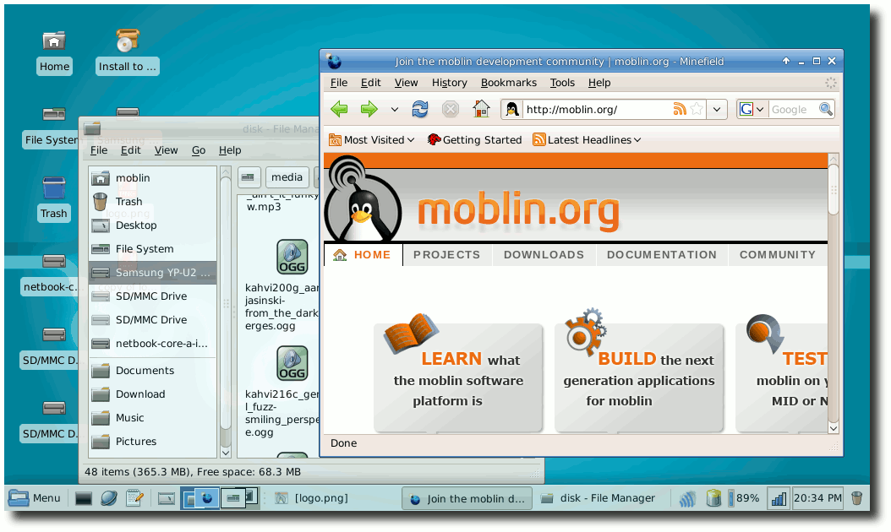Mit Moblin die Antenne in den Wind halten.
Den Xfce-Desktop auf Deutsch umzustellen, ließ sich im Test jedoch nicht bewerkstelligen. Offensichtlich fehlen hier noch die Po-Dateien. Selbst über das Paketmanagement (Yum) war diesbezüglich nichts zu holen.
Netzzugang, Web und E-Mail
Was man als Erstes von einer Netbook-Distribution verlangt, ist der unkomplizierte Zugang zum Internet, das heißt WLAN. Und siehe da: Der Connman (Linux Connection Manager, auch ein Moblin-Projekt (Link)), zeigt vorhandene WLAN-Netze an, darunter auch meins - Passwort eingegeben und verbunden. Einfach und problemlos. Der Chipsatz der Atheros-Karte (AR242X) wird unterstützt. Das wundert im Nachhinein auch nicht, liest man sich die Ankündigung des Releases noch einmal genau durch (Link). Moblin (V2 Core Alpha) verlässt sich ja auch wagemutig auf Kernel 2.6.29rc7. (Die Unterstützung der Atheros-Karte sollte mit dem Modul ath5k seit Kernel 2.6.28 out-of-the-box funktionieren, wie unter Arch Linux ausprobiert.) Als Webbrowser liefert Moblin Firefox in Version 3.0.6 aus. Ist man auf Kurzweil aus, lässt sich ein proprietäres Flashplugin in gewohnter Weise problemlos nachinstallieren. Im Ergebnis spielt der Flashplayer Videos dann auch ruckelfrei ab. Zurzeit diskutieren die Moblin-Entwickler auch, ob nicht Mozilla Fennec als zweiter Browser für MIDs mit Touchscreen in Frage kommt (Link). In Sachen E-Mail bleibt nach der Installation erst einmal eine Lücke. Dies sollte sich aber über das Fedora-eigene Paketmanagement „Yum“ auf der Kommandozeile schnell lösen lassen - könnte man denken. Diesbezüglich war aber nichts zu holen, also muss man andere Softwarequellen einbinden. Apropos „Paketmanagement“: Sollte man lieber auf ein grafisches Interface setzen, benutzt man unter Moblin Gpk-application. Die Bedienung von Gpk-application ist selbsterklärend und unproblematisch. 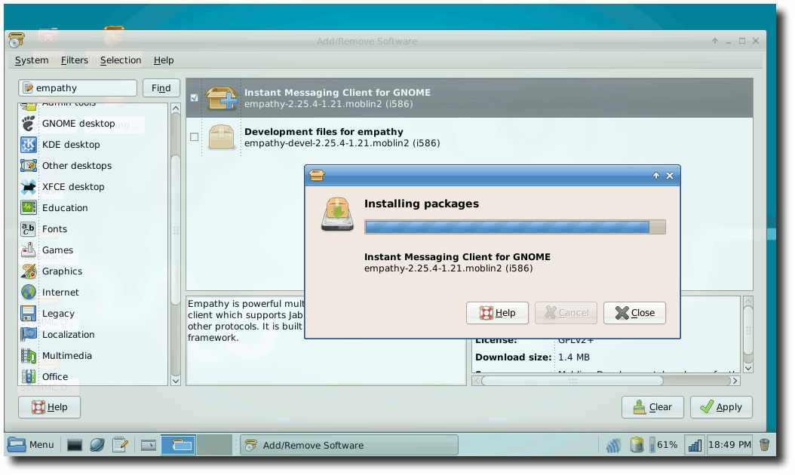Gpk - das Frontend zur Paktetverwaltung.
Positiv überracht dürfen auch all diejenigen sein, zu deren Aufgaben der regelmäßige Einsatz einer Webcam gehört, denn diese wurde anstandslos und out-of-the-box erkannt. Als GUI kommt hier Cheese (V. 2.25.91) zum Einsatz. Für den Chat zwischendurch bringt Moblin den Pidgin-Nachfolger Empathy mit, den man über Gpk-application nachinstallieren muss. Damit ist auch für das Networking via Jabber etc. gesorgt.
Office und Co.
Natürlich will man dann und wann etwas niederschreiben - seien es Texte, Termine oder andere Notizen. Der mitgelieferte Softwareumfang - so viel kann man sagen - beläuft sich hier auf zwei Dinge: Zum einen das „Personal Information Management“ Pimlico (Link), mit dem im Wesentlichen drei Programme zum Verwalten von Kontakten, Aufgaben und Terminen mitgebracht werden. Ein Import von ICS-Dateien für den Kalender (Link) lief reibungslos über die Bühne. Zum anderen bleibt einem für Notizen nur der Xfce-eigene „Mousepad-Editor“. Immerhin. Die schmale Auswahl an Software für den Office-Bereich ist vermutlich dem Umstand geschuldet, dass man darauf bedacht ist, das Moblin-Image während der Alpha-Phase mit rund 300 MB möglichst klein zu halten.Unterhaltung und mehr
Über die schon genannten Programme hinaus liefert Moblin die in einer Standardinstallation von Xfce vorhandenen Programme mit: also vom Taschenrechner über den Application-Finder bis zu Thunar als Dateimanager und schließlich „Bulk Rename“, einem Werkzeug mit GUI zum Umbenennen mehrerer Dateien.Externe Speichermedien
Das Aspire One [A 110L] kommt ja zu Recht mit zwei Slots für Kartenleser daher: auf der linken Seite die „Storage Expansion“ (oft für das Homeverzeichnis genutzt) und auf der rechten Seite der Multicardreader. Beide Karten in den Einschüben werden anstandslos erkannt und können sofort benutzt werden. Auch das automatische Erkennen und Einbinden von USB-Speichermedien funktioniert tadellos.Sounds und Sondertasten
Die Soundkarte wird sofort erkannt, was auch kein Wunder ist: Verbaut ist ein Audio-Gerät von Intel (laut lspci: Intel Corporation 82801G High Definition Audio Controller rev 02). Zum Einsatz kommt dann das Alsa-Soundsystem. Auch das Hören von Audio über den Kopfhörer stellte kein Problem dar. Gleiches gilt für das oberhalb des Displays verbaute Mikrofon, mit dem man per Arecord ein paar Klänge aufnehmen konnte. Als einzige Möglichkeit, OGGs oder MP3s abzuspielen, bleibt einem erst einmal nur der von Haus aus mitgebrachte Totem Movie-Player. MP3s können zunächst aufgrund fehlender Codecs nicht abgespielt werden. In Sachen Sondertasten sieht die Sache schon wieder anders aus: Wer das Acer Aspire One kennt, weiß um die zahlreichen Sondertasten. Und wer Moblin in dieser frühen Alpha-Version ausprobieren will, muss auf diese schon jetzt nicht verzichten.Suspend und Pause
In Sachen Energiesparmodi (ACPI) ist man eigentlich gewöhnt unter Linux noch selbst Hand anlegen zu müssen. Nun darf man sich freuen, denn ein Suspend-to-RAM (S3) ist unter Moblin aus dem Stegreif zu haben. Falls mal eine Pause vonnöten sein sollte, einfach über „Suspend“ abmelden und später (hoffentlich) wieder aufwachen ;).Fazit
Für ein relativ junges Projekt macht die Distribution Moblin (V2 Core Alpha) einen guten Eindruck, gerade mit Blick auf ihre zukünftige Entwicklung. Zwar fehlt zurzeit hier und dort vielleicht noch das eine oder andere Programm, jedoch lässt sich dies vermutlich über ein Hinzufügen weiterer Softwarerepositorys lösen. Ein halber Kritikpunkt sei an dieser Stelle angebracht: Dass Moblin mit dem Xfce-Desktop ausgeliefert wird, ist aufgrund der besonderen Anforderungen eines Netbooks keine gute Lösung. Zu schnell wird man des Touchpads überdrüssig, gerade wenn man auf GUI-Elementen herumklickt, die ja ursprünglich für einen Desktop-PC entwickelt worden sind. Auf einem 8.9-Zoll-Bildschirm ist dies auf Dauer anstrengend und müßig. Jedoch - und deshalb nur ein halber Kritikpunkt - ist man sich dessen innerhalb der Moblin-Community bewusst. Diskussionen und Projekte zum Thema „Userinterface“ werden geführt. Inwieweit greif- und klickbare Lösungen in den nächsten Monaten umgesetzt werden, bleibt abzuwarten. Bis dahin kann man ja schon einmal einen Vorgeschmack durch folgende Videos auf Moblin.org (Link) und auf Youtube (Link) bekommen. Links- http://moblin.org/
- http://www.linuxfoundation.org/news-media/announcements/2009/04/linux-foundation-host-moblin-project
- http://moblin.org/community/blogs/tshureih/2009/announcing-moblin-v2-core-alpha-release
- http://moblin.org/documentation/test-drive-moblin
- http://v1.moblin.org/projects/projects_connman.php
- http://moblin.org/community/blogs/tshureih/2009/announcing-moblin-v2-core-alpha-release
- http://moblin.org/projects/moblin-browser
- http://www.pimlico-project.org/
- http://de.wikipedia.org/wiki/ICalendar
- http://moblin.org/community/blogs/sabotage/2008/four-corners-plugin-signs-life
- http://www.youtube.com/watch?v=AYGp6iBmCyM
| Autoreninformation |
| Thorsten Schmidt hat Spaß mit den mobilen Helferlein und blickt neugierig auf aktuelle Entwicklungen in Sachen Linux-Distributionen für Netbooks. |
Zum Index
Debian 5.0-Installation mit einer Braillezeile
von Simon Bienlein Als Ergänzung zum Artikel „Debian GNU/Linux 5.0 „Lenny“ - Der Zustand der Distribution“ (Link) soll im Folgenden darüber berichtet werden, wie man Debian Lenny mit einer Braillezeile (Link) installieren kann. Dies ermöglicht blinden Linux-Nutzern von Anfang an die Kontrolle über ihr neues Betriebssystem.Die Braillezeile
Eine Braillezeile ist ein Ausgabemedium, das den Inhalt des Bildschirms in Brailleschrift ausgibt. Je nach Bauart können 20, 40 oder 80 Schriftzeichen angezeigt werden. Die Basis der Brailleschrift bilden sechs Punkte, die mit den Augen eines Würfels verglichen werden können: jeweils zwei Punkte oben, in der Mitte und unten. Die Punkte dieser „Grundform“ ruhen in Löchern und werden elektronisch angehoben und gesenkt. Jede Kombination von gehobenen Stiften repräsentiert ein Zeichen. Die Braillezeile verwendet acht Punkte, da man nur so den erweiterten ASCII-Zeichensatz darstellen kann. 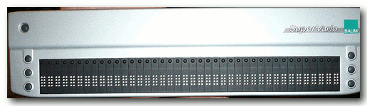Eine mobile Braillezeile.
© hirnrinde (CC-BY-2.0)
Die Installation mit einer Braillezeile
Ein Installations-ISO-Image kann man am einfachsten via Browser oder Downloadmanager auf debian.org (Link) herunterladen und auf einen Rohling brennen. Dabei sollte man auf die Auswahl der richtigen Computerarchitektur achten. Für die meisten Anwender kommt wohl die i386-Architektur in Frage. Die Zugänglichkeit von Debian 5.0 beginnt schon beim Start der Installations-CD, bei dem ein Piepton aus dem PC-Speaker akustisch darauf hinweist, dass das Bootmenü der CD angezeigt wird. Um den Installer mit einer Braillezeile verwenden zu können, ist es erforderlich, dem Kernel einen Bootparameter zu übergeben. Nach dem Signalton ist mit der Tabulatortaste die Zeile zur Eingabe der Bootparameter zu fokussieren. Für die Brailleausgabe ist der Screenreader BrlTTY (Link) zuständig. Wichtig: Man muss bei der Eingabe des Bootparameters darauf achten, dass zu diesem Zeitpunkt die amerikanische Tastaturbelegung verwendet wird. Das Gleichheitszeichen = befindet sich rechts neben der Taste ß und ist ohne Umschalttaste einzugeben. Außerdem sind die Tasten Y und Z vertauscht. Die Syntax des zuständigen Bootparameters lautet:brltty=Treiber,Anschluss,TabelleDer Treiber bestimmt das Modell für die angeschlossene Braillezeile. Da USB-Braillezeilen von BrlTTY selbstständig erkannt werden, ist die Eingabe des zweistelligen Codes im Gegensatz zu seriell angeschlossenen Geräten nicht erforderlich. Der Parameter für den Anschluss ist auch nur bei seriell verbundenen Geräten notwendig, da USB-Anschlüsse standardmäßig abgesucht werden. Die gewünschte Brailletabelle wird ebenfalls mit einem zweistelligen Code festgelegt. Standardmäßig wird die amerikanische Brailleschrift verwendet, weshalb für den deutschen Sprachraum hier zwingend 'de' einzugeben ist. Für eine am USB-Anschluss angeschlossene Braillezeile wäre Folgendes einzugeben:
brltty=„deUm zum Beispiel eine Braillezeile der Firma Handy Tech am ersten seriellen Anschluss zu betreiben, gibt man Folgendes ein:
brltty=ht,ttyS0,deEine Liste der unterstützten Braillezeilen und deren Steuercodes findet man im Kapitel „Driver Identification Codes“ der BrlTTY-Dokumentation (Link). Hat man nun den entsprechenden Bootparameter eingegeben und mit der Eingabetaste bestätigt, wird der Startvorgang fortgesetzt. Die Installation wechselt automatisch in den Textmodus. Die einzelnen Schritte der Installation wurden in der Maiausgabe von freiesMagazin (Link) ausführlich beschrieben, weshalb hier nicht darauf eingegangen wird. Nur so viel sei angemerkt: Wenn man die Desktopumgebung installiert, wird der in GNOME enthaltene Screenreader (Orca) (Link) nicht automatisch installiert. Dies lässt sich aber nachträglich schnell nachholen.
Nach der Installation
Startet man Debian 5.0 nach der abgeschlossenen Installation, wird BrlTTY geladen und die Startmeldungen des Textmodus angezeigt. Beim Erscheinen des Anmeldebildschirms von gdm steht keine Brailleunterstützung zur Verfügung, da hier kein Screenreader lauffähig ist. Man kann sich allerdings im Blindflug anmelden, wenn man Benutzername und Kennwort jeweils mit der Eingabetaste bestätigt.Den Screenreader Orca einrichten
Für die GNOME-Arbeitsumgebung steht der Screenreader Orca zur Verfügung, der seit GNOME 2.16 mit jeder veröffentlichten Version ausgeliefert wird. Für die Installation betritt man mit der Tastenkombination Strg + Alt + F1 die erste virtuelle Konsole und meldet sich als root an. Für den Screenreader ist das Paket gnome-orca zuständig, das mit folgendem Kommando installiert wird:# aptitude install gnome-orcaNun wechselt man mit der Tastenkombination Strg + Alt + F7 zurück zur grafischen Oberfläche und startet Orca: Alt + F2 bringt den Ausführen-Dialog in den Vordergrund. Mit dem Befehl orca wird der Screenreader gestartet. Da Orca zum ersten Mal startet, wird ein Einrichtungsassistent durchlaufen, der durch Tastatureingaben gesteuert wird. Hier legt man zum Beispiel fest, ob die Brailleunterstützung aktiviert werden soll oder ob das Tastaturecho der Sprachausgabe gewünscht wird. Im GNOME-Desktop-Barrierefreiheitshandbuch (Link) findet man neben Informationen zur Arbeit mit Orca weitere Tipps zur Zugänglichkeit der GNOME-Arbeitsumgebung.
Fazit
Debian 5.0 „Lenny“ zeigt, dass eine Distribution schon ab der Installation zugänglich sein kann. Da die Arbeit im Bereich Barrierefreiheit doch sehr schnelllebig ist, fällt der Feature Freeze von Juli 2008 auch in diesem Bereich auf. Wer aktuellere Software verwenden möchte, kann sein System auf den Stand von Debian Testing bringen, das von vielen Anwendern für ein Desktopsystem verwendet wird. Bevor man die mangelnde Aktualität von Lenny kritisiert, sollte man auch einen Blick zur Konkurrenz werfen: Ubuntu 9.04 ist als Live-CD zum unverbindlichen Ausprobieren der GNOME-Arbeitsumgebung zwar geeignet, weist dabei nach der Installation jedoch große Mängel auf. Obwohl Ubuntu über das spezielle Profil für blinde Anwender installiert wurde, funktioniert die Sprachausgabe nach der Installation nicht und der Screenreader Orca ist praktisch nicht benutzbar. Die Installation via Braillezeile und der Alternate-Install-CD ist nur möglich, wenn man neben dem Bootparameter für BrlTTY noch fb=false für die Deaktivierung des Framebuffers angibt. Allerdings wird anschließend BrlTTY nicht automatisch beim Booten gestartet und die Orca-Sprachausgabe steht auch nicht zur Verfügung. Links- http://freiesmagazin.de/freiesMagazin-2009-05
- http://de.wikipedia.org/wiki/Braillezeile
- http://www.debian.org/CD/http-ftp/
- http://mielke.cc/brltty/
- http://mielke.cc/brltty/doc/Manual-BRLTTY/English/BRLTTY-11.html
- http://library.gnome.org/users/gnome-access-guide/stable/
- http://www.0d.be/debian/debian-gnome-2.26-status.html
| Autoreninformation |
| Simon Bienlein betreibt die Internetseite „Linux für Blinde“ und berichtet dort über Tipps und Erfahrungen rund um Linux. Besonders Linux-Neulingen soll der Einstieg erleichtert werden. |
Zum Index
Die Vorgeschichte von Linux
von Dirk Geschke Dieser Artikel ist eine kleine Geschichte der Zeit und beleuchtet die Entwicklung von Linux, beziehungsweise das Geschehen, welches dazu geführt hat, dass Linus Torvalds auf Basis von Minix sein eigenes Betriebssystem schreiben konnte. Redaktioneller Hinweis: Der Artikel „Die Vorgeschichte von Linux“ erschien erstmals bei Pro-Linux (Link).Die Anfänge
Zeitliche Übersicht
Der eigentliche Beginn ist schwer zu definieren. Der Anfang könnte beim Abakus gesehen werden, der bereits etwa 2400 v. Chr. in Babylon erfunden wurde. Die erste urkundlich erwähnte Rechenmaschine wird Wilhem Schickard zugeschrieben. Diese wurde im Jahr 1623 in einem Brief an Johannes Keppler beschrieben.- 1642
- Blaise Pascal erfindet den tragbaren Additor Pascaline. Sein Vater war Steuereintreiber.
- 1673
- Leibniz erfindet eine Rechenmaschine, die mit Hilfe von Zahnrädern multiplizieren kann.
- 1727
- Antonius Braun konstruiert eine Sprossenradrechenmaschine für den Wiener Hof.
- 1770
- Pfarrer und Erfinder Philipp Matthäus Hahn konstruiert eine Rechenmaschine in Dosenform mit konzentrisch angeordneten Zahnrädern, Staffelwalzen und einer zentralen Antriebskurbel.
- 1884
- Hollerith erfindet eine mechanische Rechenmaschine, die Lochkarten verwendet. Diese kam bei der Volkszählung 1890 zum Einsatz. Die Hardware kostete nur 750.000 Dollar, allerdings wurden die Lochkarten separat verkauft. (1880 hatte die Volkszählung zirka 5 Millionen Dollar gekostet.)
- 1900
- Charles Flint gründet die International Time Recording Company, die Uhren herstellte. Daraus wurde im Jahr ...
- 1901
- ... die Computing Scale Company of America. Sie stellte Waagen her, die gleich die Gebühren anzeigten.
- 1910
- Flint und Hollerith gründen Computing Tabulating Recording (CTR).
- 1912
- Thomas Watson (ehemals NCR) wird General Manager von CTR.
- 1919
- CTR konstruiert den ersten Listendrucker, der über Hollerith-Karten erstellte Informationen ausgeben kann. In diesem Jahr wird auch der elektrische Flip-Flop-Schalter erfunden.
- 1924
- CTR wird in International Business Machines Company (IBM) umbenannt.
- 1936
- Alan Turing veröffentlicht „On Computable Numbers, with an Application to the Entscheidungsproblem“, die daraus resultierende (theoretische) Turingmaschine ist in der Lage, jede durch einen Algorithmus lösbare Aufgabe zu lösen.
- 1937
- Konrad Zuse baut die mechanische Rechenmaschine Z1.
- 1941-1945
- Das Department of Defense der USA sponsert Computer-Projekte.
- 1945
- John von Neumann beschreibt in „A First Draft of a Report on the EDVAC“ (EDVAC = Electronic Discrete Variable Automatic Computer) eine Architektur für Computer, die im wesentlichen schon früher von Konrad Zuse verwendet wurde.
- 1952
- Ken Olson & Co vom MIT sowie IBM arbeiten an SAGE (Semi-Automatic Ground Environment), einem Computer für die Luftverteidigung.
- 1953
- Aufgrund der starken Bindung zu IBM muss Olson gehen. Olson will IBM mit den eigenen Waffen schlagen und gründet die Digital Equipment Corporation (DEC).
- 1959
- DEC präsentierte den ersten Prototyp: PDP-1 (Programmed Data Processor).
PDP
DEC präsentierte den ersten Prototyp PDP-1 (Programmed Data Processor) 1959. Die Eckdaten: 18 Bit, maximal 32 kB Speicher, Speicherzugriff 5 µs, 100.000 Rechenschritte pro Sekunde, 3500 Transistoren und 4300 Dioden. Es gab einen Editor, Macroassembler, ALGOL Compiler, einen Papierstreifenleser und eine IBM-Schreibmaschine für die Ausgabe. Davon wurden 53 Stück verkauft, der erste ging an Bolt, Beranek und Newman (BBN) (siehe Arpanet und TCP/IP). Die Modelle PDP-2 (24 Bit) und PDP-3 (36 Bit) wurden nie gebaut, die PDP-4 hatte 18 Bit und floppte am Markt. Dabei war das Preis-Leistungs-Verhältnis eigentlich sehr gut. Sie hatte einen Assembler, Editor, Fortran und viele andere nützliche Programme installiert. Die PDP-5 war ein 12-Bit-Frontend für die PDP-4. Das wird dann wohl als Recycling bezeichnet. PDP-6 war eine 36-Bit-Maschine und floppte ebenfalls - nur 32 Stück wurden verkauft. Die Modelle PDP-7, PDP-9 und PDP-15 waren 18-Bit-Nachfolger der PDP-4. Die PDP-8 war wieder ein 12-Bit-System und der Ursprung der Minicomputer-Revolution im Jahre 1965. Sie kostete schlappe 18.000 Dollar. Davon wurden dann zirka 50.000 Systeme verkauft. Die PDP-10 war wieder ein 36-Bit-Nachfolger der PDP-6, recht unspektakulär. Die PDP-11 war schließlich das System, mit dem DEC zum Marktführer für Minicomputer wurde: Sie erschien 1970, hatte 16 Bit und verkaufte sich 250.000 Mal. Das war ein Computer, wie ihn sich Universitäten leisten konnten. Die PDP-11 legte die Basis für den Erfolg von Unix - und dabei ist bis hier hinsichtlich Unix noch nicht viel passiert.CTSS
Bis Anfang der 60er Jahre liefen Programme im Batch-Modus: Die abzuarbeitenden Programme wurden meist auf Lochkarten gestanzt, im Rechenzentrum legte eine Operator genannte Person diese zur Bearbeitung im Computer ein. Die Programme liefen der Reihe nach für eine vorgegebene Zeit. Wurde diese Zeit überschritten, so wurde das Programm einfach beendet - unabhängig davon, ob es zu einem Ergebnis gekommen war oder nicht. Um auf Nummer sicher zu gehen, dass auch ein Ergebnis erzielt wurde, wurde meist mehr Rechenzeit beantragt, als notwendig war. Die Folge war dann häufig, dass diese Programme nur in der Nacht laufen konnten, tagsüber liefen die kürzeren. Wenn nun ein Programmfehler auftrat, konnte darauf erst am nächsten Tag reagiert werden, es wurden dann neue Lochkarten gestanzt und diese zur Abarbeitung in der Nacht dem Operator im Rechenzentrum übergeben. Dies war aber auch die Zeit der Hacker (mit dem Begriff Hacker ist ein von Computern begeisterter Anwender gemeint (Link)), diese nutzten die freigewordenen Zeiten der Maschinen in der Nacht, um eigene Berechnungen anstellen zu können. Das war natürlich eine langwierige und oft frustrierende Angelegenheit. Mit der Verbesserung der Hardware kam dann die Idee auf, ein Betriebssystem zu erstellen, das Jobs parallel abarbeiten kann: Time-Sharing oder neudeutsch Multitasking. Sogar interaktives Arbeiten sollte damit möglich sein: CTSS - Compatible Time-Sharing System. Es gab auch andere Systeme, aber das ist hier in dieser Linie das wichtigste, war es doch der Vorgänger von Multics. CTSS wurde auf einer IBM 7090, später 7094, am MIT (Massachusetts Institute of Technology) entwickelt. Es konnten mehrere Programme parallel laufen, diese konnten zum Teil auf Band ausgelagert werden. Es gab zwei Prozessor-Modi: Einen Supervisor-Modus (heute Kernel-Modus) und einen Userprogamm-Modus. Zwischen diesen beiden konnte automatisch gewechselt werden. Ein direkter Versuch, auf die Hardware zuzugreifen, führte zu einem illegal instruction Fehler und der Supervisor-Modus wurde aktiviert. Dieser konnte dann den gewünschten Systemzugriff realisieren. Der Hauptspeicher konnte segmentiert werden. Hierdurch war es möglich, mehrere Programme parallel im Speicher zu halten. Das interaktive Arbeiten war über Terminals möglich. Diese waren zur damaligen Zeit eigentlich nur Schreibmaschinen. In dieser Zeit entstanden auch zahlreiche Anwendungen, die es heute noch in irgendeiner Form gibt:- Da diese Systeme einen permanenten Speicher, zuerst ein Bandlaufwerk und später eine Festplatte, besaßen, begannen die Anwender Dateien anzulegen wie zum Beispiel TO_TOM. Der Anwender Tom wusste damit, dass für ihn eine Nachricht hinterlegt worden war. Da dies immer mehr Leute nutzten, entstand die Notwendigkeit, ein globales System zu entwickeln. Daraus entstand das MAIL-Programm.
- SHELL
- Da das System interaktiv genutzt werden konnte und häufig mehrere Programme nacheinander gestartet werden sollten, wurde etwas benötigt, womit das automatisiert werden konnte. Dabei musste unter anderem auf Ergebnisse der Programme richtig reagiert werden. Das Programm, das dies ermöglichte, war der Vorgänger der heutigen Shells: RUNCOM. Ein Tribut an diese Vorläufer-Shell sind die heutigen rc-Startskripte unter Unix (/etc/rc bei BSD, bzw. /etc/rc?.d/ bei SystemV-basierten Systemen).
- Textsatzsystem
- Das erste Textverarbeitungssystem (eigentlich Textsatzsystem) wurde unter CTSS entwickelt und hieß RUNOFF. Die heutigen Unix-Varianten heißen roff beziehungsweise nroff, groff, troff, ... Und es gibt sogar heute noch Bücher, die mit vi und troff erstellt wurden, beispielsweise das von Teer, Rich: Solaris Systems Programming, Prentice Hall, 2004.
Multics
Multics, Multiplexed Information and Computing Service, war als ein Nachfolger von CTSS geplant. Drei Unternehmen taten sich 1965 für dieses Projekt zusammen: MIT (Project MAC), Bell Telephone Laboratories (BTL) und General Electric Company (GE). Die Ziele von Multics waren hochgesteckt:- Segmentierter Speicher
- Virtueller Speicher/Paging
- OS in der High-Level-Programmiersprache PL/1
- Multiprozessor-Unterstützung
- 7x24h Laufzeit
- zur Laufzeit konfigurierbar
- hochzuverlässiges Dateisystem
- bequem via Terminal bedienbar
- Unterstützung vieler Applikationen
- Unterstützung vieler Programmierumgebungen und Benutzerschnittstellen
Unix
Die Anfänge von Unix
Alles fing mit einem Computerspiel an: Space Travel. Ken Thompson hatte dieses Spiel unter Multics programmiert. Es simulierte die Bewegung von Planeten im Sonnensystem, man konnte mit einem Raumschiff umherfliegen, in Umlaufbahnen einschwenken und sogar auf Planeten landen (Link). Das Programm wurde dann in Fortran für das Betriebssystem GECOS umgeschrieben und lief auf einer GE 635. Allerdings war da die Grafik mehr als bescheiden und die CPU-Stunde kostete 75 Dollar. Das war natürlich damals mehr Geld als heute und wäre auch heute noch recht teuer. Auf der Suche nach einer billigen Lösung fand Ken dann eine wenig genutzte PDP-7 mit erstklassigem Terminal-Display - der Computer wurde für ein Projekt angeschafft, aber der Projektleiter hatte die Abteilung gewechselt. Der Rest ist nahe liegend: Space Travel wurde in Assembler neu geschrieben, auf der GE 635 cross-compiliert und via Lochstreifen auf die PDP-7 transferiert. Der Spieltrieb brachte es dann mit sich, dass für die PDP-7 ein Dateisystem entwickelt wurde. Was noch immer fehlte, war ein Betriebssystem. Zu dieser Zeit im Sommer 1969 fuhr Kens Frau für einen Monat mit ihrem ein Jahr alten Sohn zu seinen Eltern, die das Kind noch nicht gesehen hatten. In diesem einen Monat wurde dann der Rest des Betriebssystems installiert: Shell, Editor, Assembler, Utilities zum Kopieren, Drucken, Löschen und so weiter. Damit war die GE 635 nicht mehr notwendig. Obwohl Ken Thompson und Dennis Ritchie im Multics-Projekt involviert waren, wollten sie nicht einfach ein neues, besseres Multics erstellen. Aber viele der Ideen und Eigenschaften, wie beispielsweise das interaktive Arbeiten, gefielen ihnen. Sie waren also sehr wohl von Multics beeinflusst. Aber sie wussten auch, dass sie nicht die Hardware dafür hatten, und wollten daher eigentlich etwas viel Simpleres erstellen. Alles musste in Assembler programmiert werden, was ein wenig umständlich war. Ein gutes System musste laut Ken einen Fortran-Compiler haben (PL/1 war für sie nicht erhältlich). Also fingen sie an, einen zu schreiben. Allerdings entschieden sie sich dann anders und nach einem Tag hatten sie B. Dies war eine abgespeckte Version von BCPL (Basic Combined Programming Language). Es war kein wirklicher Compiler, sondern er übersetzte die Sprache in Bytecode (ähnlich wie Java es heutzutage macht). Dieser Compiler stieß aber immer an die Grenzen des Speichers. Daher musste ein neuer, besserer Computer her. 1970 entstand dann in Anspielung auf Multics der Name Unics (UNiplexed Information and Computing Service). Im Laufe der Zeit wurde dann aus Unics das heute bekannte Unix - was sprachlich ziemlich gleich klingt. Geld für einen besseren Computer, damit Unix weiterentwickelt werden konnte, gab es allerdings bei BTL nicht. Wohl aber gab es Geld für den Kauf einer PDP-11 mit dem Ziel, ein Textsatzsystem zu erstellen. Den Rest kann man sich nun denken. Am Anfang arbeiteten vier Leute an Unix: Ken Thompson, Dennis Ritchie, Malcom Douglas McIlroy und Joseph F. Ossanna. Das Paradoxe dabei ist, dass die Unix-Entwicklung nur wegen eines Textsatzsystems (indirekt) finanziert wurde. Der Erfolg der ersten Unix-Computer basierte aber genau auf dieser Anwendung. Und dabei war das lediglich eine Portierung von RUNOFF alias roff. Die nächsten Jahre standen im Zeichen der Weiterentwicklung des Betriebssystems. Dennis Ritchie schuf die Programmiersprache C. Nach anfänglichen Problemen - es gab noch keine Datentyp-Strukturen - wurde der Unix-Kernel komplett in C neu geschrieben. Das war ein riesiger Schritt in Richtung Portierbarkeit: Sobald der C-Compiler in der Lage war, den richtigen Code zu erstellen, konnte das meiste einfach wiederverwendet werden. (Es war kennzeichnend für die damalige Zeit, dass Software nur speziell für einen Computertyp erstellt wurde, der Gedanke an Portierbarkeit existierte noch nicht.)Die Verbreitung von Unix
Wesentliche Entwicklungen waren das Neuschreiben des Kernels in C. Dies machte die Portierbarkeit deutlich leichter. Aber auch die von McIlroy vorgeschlagenen Pipes wurden implementiert. Das war eine der größten Leistungen, obwohl es nur eine kleine Änderung war. Aber zu diesem Zeitpunkt gab es nur die Ausgabeumleitung in eine Datei. Der umgekehrte Weg, anstelle der Standard-Eingabe aus einer Datei zu lesen oder die Ausgabe eines anderen Programms dafür zu verwenden, war noch nicht möglich. Pipes machten aber gerade dies, sie nahmen die Ausgabe des ersten Programms und verwendeten sie als Eingabe für das nächste Programm. Das führte dann recht früh zu der Unix-Philosophie: Schreibe Programme, die ...- ... genau eine Sache machen, diese aber gut.
- ... zusammenarbeiten.
- ... Textströme bearbeiten, denn das ist eine universelle Schnittstelle.
- no advertising
- no support
- no bug fixes
- payment in advance
BSD
Eine der ersten Unix-Installationen außerhalb von BTL war in Berkeley (University of California at Berkeley, UCB). Hier gab es aber ein Problem: Die Mathematiker und Statistiker wollten lieber das Time-Sharing-System von DEC (RSTS, Resource Sharing Time-Sharing System) auf der Maschine laufen lassen. Die Informatiker hingegen bevorzugten Unix. Der Kompromiss bestand darin, dass acht Stunden Unix lief und danach 16 Stunden RSTS. Um das Chaos zu steigern, wurden die Uhrzeiten rotiert: Mal lief Unix von 8 bis 16 Uhr, am nächsten Tag dann von 16 Uhr bis Mitternacht und am dritten Tag von Mitternacht bis 8 Uhr. Trotz dieser seltsamen Zeiten zogen es die Informatikstudenten vor, ihre Projekte unter Unix laufen zu lassen. Die Professoren Eugene Wong und Michael Stonebraker waren durch diese Einschränkungen der Batch-Umgebung (RSTS) so sehr behindert, dass sie ihr INGRES-Datenbankprojekt als eines der ersten auf das Unix-System portiert hatten. Nebenbei sei erwähnt, dass PostgreSQL von diesem Projekt abstammt. Durch die Zeitbeschränkungen waren sie so verärgert, dass sie die Gelder für eine eigene PDP-11/45 auftrieben, und kurz darauf wurde die erste Distribution von INGRES verteilt. Diese Datenbank half der UCB, einen sehr guten Ruf für die Erstellung von Software zu erlangen. Anfang 1977 erschien dann die Berkeley Software Distribution. Sie wurde von William Nelson Joy, genannt Bill Joy, herausgebracht. Joy gilt als eine Triebfeder für die Entwicklung von BSD. Er verließ Berkeley, als er zusammen mit Scott McNealy, Vinod Khosla und Andreas Bechtolsheim die Firma Sun gründete. Dort entwickelte er zuerst das SunOS und später Solaris. Er war auch einer der wenigen, die mit Unix richtig reich wurden. Bestandteile der ersten Distributionen waren unter anderem ein Pascal-Compiler und der von Bill Joy erstellte Editor ex, ein Zeileneditor, den es auch heute noch unter Unix gibt. Als die ersten Terminals mit adressierbarem Cursor erschienen, war es Joy, der vi schrieb. Der Editor war eine Erweiterung von ex, mit dem der ganze Text bei der Bearbeitung gesehen wurde. Daher ergab sich der Name als die Kurzform von visual mode. Dieser Editor ist auch heute noch der Editor unter Unix. Mit ihm ist es möglich, mehr als nur eine Zeile zu sehen und zu editieren. Da aber die alten Terminals noch weiter verwendet wurden, die Leute jedoch mit vi arbeiten wollten, schrieb er ein Programm, dass den Terminal-Bildschirm jedes mal neu aufbaute: termcap. 1978 wurde dann dank dem Feedback vieler Anwender - im Gegensatz zur BTL durfte Berkeley darauf reagieren - die Distribution erneuert. Das war dann die Second Berkeley Software Distribution oder kurz 2BSD. Spannend wurde es, als die UCB sich 1978 eine VAX anschaffte. UCB bestellte sie ohne Betriebssystem, obwohl eine VAX eigentlich mit VMS verkauft wurde. Das verwirrte DEC ein wenig. Die Unix-Version für die VAX hatte allerdings einige Beschränkungen, die nicht von der Hardware vorgegeben waren. Zum Beispiel konnte ein Prozess nur im Speicher oder nur im Swap existieren. Hier wurde dann das erste Virtual-Memory-System für Unix erstellt. Bald darauf folgte die komplette Portierung von 2BSD auf die VAX, im Dezember 1979 erschien 3BSD. 1980 erschienen dann 4BSD und das nächste Unix-Derivat: Xenix von Microsoft - sie versuchten sich erst an Unix und fielen damals schon dadurch auf, dass sie zu anderen Systemen inkompatibel waren. Die Aussage ist aber nur teilweise korrekt. Xenix entstand aus einer früheren Unix-Version als die anderen Unix-Varianten. Mittlerweile hatten sich aber diverse Schnittstellen im Original-Unix geändert. Dadurch fiel Xenix dann im Vergleich zu den anderen Derivaten hinsichtlich Kompatibilität aus dem Rahmen. Interessanterweise vermarkteten Microsoft ihre Unix-Version nicht direkt, sondern vertrieben sie über die Firma SCO, Santa Cruz Operation. Letztere sorgte in jüngster Zeit für viel Wirbel um die Unix-Rechte. 4BSD war von DARPA (Defense Advanced Research Projects Agency, das Defense wurde später gestrichen (Link)) mit dem Ziel gesponsert worden, Computer an verschiedenen Standorten zu vernetzen.AT & T
AT & T realisierte recht bald, dass mit Unix Geld verdient werden könnte. Mit Version 7 änderte es daher die Lizenz. Diese untersagte es fortan, den Quellcode von Unix zu studieren. Damit wurden viele Unix-Kurse an den Universitäten recht abrupt beendet. Andrew Tanenbaums Lösung war es, ein Unix-kompatibles Betriebssystem von Grund auf neu zu schreiben, das keine einzige Zeile AT & T-Code enthält, er nannte es Minix. Im Jahre 1982 wurde dann das Antitrust-Urteil modifiziert. Nach langem juristischen Hin und Her kam der Vorschlag, die operativen Unternehmen von AT & T abzuspalten (BabyBells - in Anlehnung daran wurde im Zusammenhang mit dem Antitrust-Verfahren gegen Microsoft und einer möglichen Aufsplittung von BabyBills gesprochen.) BTL wurde abgespalten und in AT & T Bell Laboratories umbenannt. AT & T war es nun erlaubt, ins Hardware- und Software-Geschäft einzusteigen. In diesem Zusammenhang änderte das Unternehmen auch die Benennung der Versionen: Hießen die Versionen bislang Version 1 bis 7 (V1-V7), so hieß die erste öffentliche Version von AT & T nun System III. Version IV war nur intern gebräuchlich und System V erschien dann 1983. Das macht dann wiederum die Verwirrung perfekt, es gab zu System V noch einzelne Releases. Die Ähnlichkeit mit V und der römischen 5 sorgte dann noch für zusätzliches Chaos. System III war die erste Unix-Version, die nicht von BTL stammte. Zu dieser Zeit entstanden auch SunOS, HP-UX und Ultrix.Weiterentwicklung von BSD
4.1BSD war eigentlich nur eine leistungsoptimierte Version von 4BSD. Gravierende Neuerungen brachte erst 4.2BSD mit sich: TCP/IP. Diese Version sollte eigentlich 5BSD heißen. Aber AT & T brachte die Version System V heraus und hatte Angst vor Verwechselungen. Daher ist 5BSD nie erschienen. TCP/IP war eines der von DARPA gesponserten Projekte. Eigentlich sollte hier eine Version von BBN (Bolt, Beranek, Newman) zum Einsatz kommen. Diese schaffte aber nur 56 Kb/s bei 100 Prozent CPU-Last. Zu dieser Zeit kam jedoch das Ethernet auf, es waren theoretisch also deutlich höhere Übertragungsraten möglich. Bill Joy optimierte sowohl das Protokoll als auch die Implementierung. Seine Vision war, dass dieses Protokoll nicht nur für DARPA nützlich sei. Er schaffte mit seiner Version eine Übertragungsrate von 700 Kb/s. Es gab dann noch einen kleinen Disput: BBN hatte eine überarbeitete Version von TCP/IP, aber Bill Joy weigerte sich, diese zu implementieren. Der Streit zog sich über Jahre hin und die Berkeley-Version gewann. Dennis Ritchie sagte dazu (das DARPA-Komitee traf sich alle sechs Monate und diskutierte über die Vorgänge innerhalb des Projektes): „Every six months we'd say, use the BBN version, and Bill would say no.“ Man muss wohl manchmal nur hartnäckig sein. Immerhin genießt BSD noch heute einen sehr guten Ruf, was den Netzwerkbereich betrifft. Aus dieser Zeit stammen auch die Berkeley-r-Tools: rlogin, rsh, rcp. Diese sollten es ermöglichen, mit einem entfernten Computer genauso zu arbeiten wie mit dem lokalen. Und noch etwas stammte aus dieser Zeit in Berkeley: Eric Allman schuf sendmail.AT & T, BSD und Copyrights
1988 erwarb AT & T 20 Prozent der Anteile an Sun Microsystems. Die Folge war, dass von SunOS BSD-Features in das klassische Unix eingebracht wurden. Damit entstand System V Release 4, beziehungsweise SVR4. 1990 wurde das Unix-Geschäft von AT & T ausgegliedert: Unix System Labs (USL) war nun für die Vermarktung von Unix zuständig. Die klassischen AT & T Bell Laboratories widmeten sich nun anderen Softwareprojekten. Ein Projekt war Plan 9, aber das ist eine andere, lange Geschichte. AT & T lebte bis zu dieser Zeit sehr gut von den Lizenzen: Jeder, der ein Unix einsetzte, egal von welcher Firma, musste eine Lizenz von AT & T vorweisen. Auf der anderen Seite entfernte sich BSD immer mehr von dem alten AT & T-Code, der Anteil an AT & T-Code in BSD nahm beständig ab. NET1 erschien in Berkeley. Es war eine Untermenge von BSD, aber komplett ohne Lizenz. NET1 hatte das klassische BSD-Copyright für die Sourcen und es war erlaubt, diese weiterzuverbreiten. 1991 erschien dann NET2. Diese Version enthielt bis auf sechs Kernel-Dateien keinen AT & T-Code mehr. Was dann folgte, war naheliegend: Die letzten sechs Dateien wurden vom AT & T Code befreit, es entstanden auch Versionen für den jetzt verfügbaren Intel-386-Prozessor. Darauf folgten mehrere Ereignisse:- 386/BSD von Bill Jolitz erschien.
- BSDI (Berkeley Software Design, Incorporated) wurde gegründet und vertrieb eine kommerzielle Version.
- Da Jolitz keine Zeit mehr hatte, alle Korrekturen und Feature-Wünsche einzuarbeiten, bildete sich eine Gruppe, die sich NetBSD nannte und diese Arbeit übernehmen wollte.
- NetBSD hatte sich Portabilität auf die Fahnen geschrieben: Sie wollten BSD auf möglichst viele Plattformen portieren.
- FreeBSD wurde kurze Zeit später gegründet, sie hatten den Fokus auf die PC-Sparte.
- Mitte der 90er Jahre entstand OpenBSD als Ableger von NetBSD. Der Fokus lag auf einem sehr sicheren Betriebssystem (Link). Theo de Raadt war Entwickler von NetBSD und wurde aus dem Core-Team ausgeschlossen.
ARPA, Arpanet, Internet
Alles fing mit dem internationalen geophysikalischen Jahr 1957 an (aufgrund einer internationalen Abmachung ging das International Geophysical Year vom 1. Juli 1957 bis zum 31. Dezember 1958): In diesem Jahr sollten unter anderem in der oberen Atmosphäre Messungen während intensiver Sonnenaktivitäten durchgeführt werden. US-Präsident Eisenhower kündigte 1955 an, dass die USA einen kleinen Satelliten in den Orbit bringen wollten. Der Kreml kündigte im Gegenzug an, dieses auch erreichen zu wollen. Die Amerikaner planten dafür eine neue, dreistufige Rakete. Die Sowjetunion war da pragmatischer mit einem zweistufigen System: Sie hatte einfach vier konventionelle militärische Raketen zur ersten Stufe zusammengebunden, eine fünfte stellte die zweite Stufe dar. Am 4. Oktober 1957 schickte die UdSSR Sputnik 1 (Sputnik bedeutet Weggefährte) in den Erdorbit. Das Besondere war dabei lediglich die Existenz von Sputnik 1 im Weltall, der Satellit selber hatte eigentlich keine nennenswerte Funktion außer dem Senden eines periodischen Signals. Man kann es aber ahnen: Das war ein Schock für die Amerikaner. Sie hatten das Gefühl, über Nacht die technologische Überlegenheit verloren zu haben, die sie seit der Atombombe hatten. Neben der rein technischen Leistung, einen Satelliten in den Orbit zu schießen kam noch ein anderer Aspekt zum Tragen. Sowohl die USA als auch die UdSSR waren im Besitz von Atomsprengköpfen. Während Sputnik 1 bereits 83,6 kg in die Umlaufbahn befördern konnte, war Sputnik 2, mit welcher der Hund Laika in den Weltraum befördert wurde, in der Lage, 508,3 kg zu transportieren. Sputnik 2 startete nur einen Monat später am 3. November 1957. Damit war dann offensichtlich, dass die UdSSR in der Lage waren, Atomsprengköpfe bis zu den USA zu transportieren. Der erste amerikanische Satellit wurde mit Explorer 1 erst am 1. Februar 1958 gestartet, also deutlich später. Die Nutzlast von lediglich 13,97 kg macht deutlich, wie weit die USA hinter den Fähigkeiten der UdSSR hinterherhinkten. Zusammen mit der atomaren Bedrohung, die aufgrund der Tragfähigkeit der Raketen nun eine besondere Bedeutung hatte, wird offensichtlich, wie tief der Schock sitzen musste. Als direkte Reaktion auf diesen Rückschlag gründeten die USA die Advanced Research Projects Agency (ARPA) innerhalb des Verteidigungsministeriums. Aufgabe dieses Projektes war es, die neuesten Technologien in die Verteidigung der USA einzubringen und vor allem zu vermeiden, dass die USA wieder so überrascht würde, wie durch Sputnik 1. Ideen für ARPA gab es schon viel früher, wie es zum Beispiel in iX 1/2008 (Link) erläutert wird. Die Finanzierung für die Bildung dieser Organisation wurde aber erst mit dem Sputnik-Schock möglich. So gesehen haben wir alles Weitere den Sowjets zu verdanken. ARPA wurde folglich die koordinierende technologische Denkfabrik, die dem Department of Defense, also dem Verteidigungsministerium, unterstand, wobei der Leiter durchaus nicht dem Militär angehören musste. Diese Institution war mit üppigen finanziellen Mitteln ausgestattet. Sie finanzierte hunderte von Wissenschaftlern in diversen Projekten, ohne selber aktiv welche zu beschäftigen. Ein besonderes Interesse bestand dann darin, die verteilten Forschungseinrichtungen miteinander kommunizieren zu lassen, insbesondere die Computer zu vernetzen. Zudem waren Computer teuer und sehr unterschiedlich. Durch die Vernetzung könnten andere Systeme mit anderen Programmen verwendet und so die Ressourcen effektiver genutzt werden. 1962 rief ARPA dann ein Computer-Forschungsprogramm unter Leitung von Joseph Carl Robnett Licklider ins Leben. Dieser hatte die Vision, dass alle Computer vernetzt sein würden und jeder zu diesem Netz Zugang habe. Lawrence Roberts wurde mit dem Auftrag betraut, ein solches Netzwerk aufzubauen. Leonard Kleinrock, den Roberts noch von der Universität kannte, entwickelte die Idee, die Informationen in Pakete zu zerlegen und einzeln zu verschicken. Auf der Empfängerseite sollten sie dann wieder zusammengebaut werden. Diese Methode wäre deutlich flexibler und sicherer als eine dedizierte Leitung, da die einzelnen Pakete so unterschiedliche Routen nehmen können und dennoch das Ziel erreichen. Zudem bestand damit keine Gefahr, dass ein Leitungsausfall die Kommunikation unmöglich macht. Diese Idee hatte zuerst Paul Baran bei RAND Corporation (Research and Development) und einige Jahre später unabhängig davon Donald Watts Davies. RAND war die Denkfabrik der US-Armee und die Arbeiten von Paul Baran dienten dazu, ein Netzwerk zu entwickeln, dass auch einen Atomkrieg überstehen konnte. Daher wird oft die falsche Aussage verbreitet, dass das Internet entwickelt wurde, um bei einem Krieg stabil zu funktionieren. Die Ideen von Paul Baran wurden aber zu seiner Zeit nicht umgesetzt, die Entwicklung von Leonard Kleinrock erfolgte ohne Kenntnis dieser Vorarbeiten. Nachdem bekannt wurde, dass Paul Baran auf diesem Gebiet schon geforscht hatte, wurde er beratend bei der Entwicklung des Arpanets hinzugezogen. 1965 wurden dann die ersten beiden Computer - einer in Berkeley, einer am MIT - via Telefonleitung vernetzt. Das war das erste Wide-Area-Network (WAN) der Welt. Zwei Jahre später wurde ein Plan für ein Computernetzwerk veröffentlicht, genannt Arpanet. Mit Hilfe eines Interface-Message-Processors (IMP, erstellt von Honeywell) wurden die ersten Netze aufgebaut. Die IMPs stellten die Vernetzung dar, die eigentlichen zu vernetzenden Computer kommunizierten mit den IMPs, die dann die Daten über das Netzwerk sendeten bzw. empfingen. Dadurch musste lediglich die Kommunikation zwischen diesen beiden Systemen für jeden neuen Computertyp angepasst werden, der Netzwerkbereich war unabhängig davon und konnte zentral verwaltet werden. Insbesondere blieben die Administratoren Herr ihrer eigenen Systeme, ein Aspekt, der nicht vernachlässigt werden sollte. Dies traf sowohl auf die Host-Systeme als auch die IMPs zu: Die jeweiligen Administratoren konnten nahezu unabhängig voneinander agieren. Ein wichtiger Aspekt dabei war, dass es eine offene Architektur sein sollte. Lickliders ursprüngliche Idee:- Jedes Netzwerk sollte in der Lage sein, unabhängig arbeiten zu können.
- Innerhalb von jedem Netzwerk gibt es ein Gateway, das das Netzwerk mit der Außenwelt verbindet.
- Dieses Gateway würde keinerlei Informationen über den passierenden Datenverkehr aufbewahren.
- Pakete werden durch die schnellsten Verbindungen geroutet.
- Die Gateways zwischen Netzen sollten immer offen sein und würden alles routen.
- Die Informationen für den Betrieb sollten frei verfügbar sein.
Stallman und GNU
Um die Motive, die zu der Freien Software (GNU) führten, zu verstehen, muss die Lebensgeschichte von Richard Mathew Stallman betrachtet werden. Ich beschränke mich hier aber auf den Teil, der an der Universität beginnt: 1970 fing Stallman ein Studium an der Harvard-Universität an. Er wählte die Fächer Mathematik und Physik. Zur Informatik sagte er, dass er sich das Programmieren beibrachte, indem er es einfach tat. Und daher wollte er etwas studieren, bei dem mehr gelernt wird. Da aber sowohl die Physik als auch die Mathematik eher unproduktiv für ihn waren, widmete er sich nebenbei der Programmierung. 1974 erhielt er den BA (vergleichbar dem Diplom) für Physik. Die wichtigste Phase begann aber 1971, als er das AI-Lab des MIT besuchte. Die Erforschung der künstlichen Intelligenz (AI: Artificial Intelligence) erforderte schon damals die beste Hardware und die besten Programmierer. Es war das Mekka der Informatik zu dieser Zeit; hier programmierten sie, bis sie vor Müdigkeit umfielen, sie schliefen häufig im Labor und arbeiteten weiter wenn sie wieder aufwachten. Stallman machte bei dem Besuch auf sich aufmerksam und bekam einen Job in diesem Hackerparadies. Das Betriebssystem, das das AI-Lab auf den PDP-6 und später PDP-10 verwendete, war das in Assembler selbst entwickelte ITS (Incompatible Time-Sharing System), was allerdings nicht, wie es der Name vermuten lässt, besonders kompatibel zu anderen Time-Sharing Systemen war. Das compatible bezog sich darauf, dass unter diesem Betriebssystem die damaligen Fortran-Batchjobs, also die Abarbeitung der berühmten Lochkarten, problemlos laufen konnten wie unter dem originären IBM-Betriebssystem Fortran Monitor System (FMS) der legendären 7094 (Link). Für den Anwender war es nicht zu unterscheiden, ob CTSS lief, ihm kam es so vor, als ob das Programm wie in einem ganz normalen Batchjob arbeitete. Die Programmed Data Processor (PDP) von DEC wurde extra nicht als Computer bezeichnet, der Namensteil fehlt. Der Grund ist relativ einfach: Bei einem Computer wurde damals an Geräte mit den Ausmaßen einer IBM 7094 gedacht. Im Vergleich dazu waren die PDPs extrem klein, es wurde auch die Bezeichnung Minicomputer verwendet (Link). Heutzutage versteht man unter dem Begriff etwas, was noch viel kleiner ist. Hier im AI-Lab existierte Freie Software, obwohl es den Begriff noch gar nicht gab: Wenn jemand ein Programm haben wollte, so bekam er es überlassen. Wenn jemand ein interessantes Programm schrieb, dann konnte einfach nach dem Quellcode gefragt werden und er wurde bereitwillig herausgegeben. Der Quellcode durfte studiert und modifiziert werden, es war auch erlaubt, daraus ein neues Programm zu schaffen. Wie bereits gesagt: Es war ein Hackerparadies. In dieser Zeit modifizierte Stallman den Editor TECO, den (paper) Tape Editor and Corrector, später Text Editor and Corrector. Dieser Editor wurde mit der Zeit extrem mächtig, aber auch kompliziert. Stallman entwickelte mit ihm den Editing Macros, kurz Emacs. Grausam wurde es dann Anfang der 80er Jahre: Das MIT gab die Entwicklung von ITS auf der PDP-10 auf und es wurde das unfreie Time-Sharing System von Digital Equipment Corporation (DEC) verwendet. Damit ging nicht nur das ITS verloren, sondern auch alle für dieses System geschriebene Software. Diese war nicht portierbar. Gleichzeitig wurden die meisten Programmierer von der Firma Symbolics abgeworben. Es gab damit kaum noch Hacker im AI-Lab und das alte System konnte nicht mehr am Laufen gehalten werden. Obendrein entstanden nun auch Software-Firmen, die nur noch fertige Software verkauften: Man musste für Software bezahlen, sie war nicht im Quellode verfügbar und Modifizieren war schon gar nicht möglich. Stallman sah für sich nur drei Möglichkeiten: An der proprietären Softwarewelt teilzunehmen, die Arbeit an Rechnern ganz einzustellen oder Programme zu schreiben, die wieder eine Gemeinschaft möglich machten. Hier entstand die Idee: GNU is not Unix, ein GNU-Betriebsystem - ein freies System, mit dem man den alten Zustand von kooperierenden Hackern erreichen konnte. Das rekursive Akronym GNU bezieht sich dabei darauf, dass es ein Unix-ähnliches Betriebsystem sein sollte, aber frei von lizenziertem Code. Stallman hatte dabei früh die Idee, ein rekursives Akronym zu verwenden. Er dachte an etwas wie: something is not unix. Dann fing er an das something sukzessive durch die Buchstaben des Alphabets zu ersetzen. Er befand, dass G der erste klangvolle Buchstabe war. So ergab sich dann der Begriff GNU. Die Überlegungen, die zur GPL (General Public License) führten, waren:- Ein Programm kann zu jedem Zweck benutzt werden.
- Ein Programm kann nach Belieben angepasst werden. Daher muss der Quellcode zur Verfügung gestellt werden.
- Kopien des Programms können weitergegeben werden.
- Auch geänderte Kopien des Programms können weitergegeben werden.
- HURD: Hird of Unix-Replacing Daemons.
- HIRD: Hurd of Interfaces Representing Depth.
- AT & T/USL und BSD liegen im Copyright-Streit, das heißt, es sind keine Unix-Sourcen frei verfügbar.
- Das Internet wird zum Medium für (fast) alle.
- GNU ist komplett bis auf den Kernel.
Die Anfänge von Linux
Die Situation Anfang 1991 war: Das einzige freie Betriebsystem für 32-Bit-PCs war Minix. Es gab natürlich auch DOS, aber das arbeitete bekanntlich lediglich mit 16 Bit und nutzte die meisten Möglichkeiten eines 386er nicht, insbesondere den Protected Mode mit den Task-Wechsel-Möglichkeiten des Prozessors. Linus Torvalds kaufte sich zu dieser Zeit einen 386er und wollte das System kennen lernen. Dass DOS nicht befriedigend war, kann man oben lesen. Minix hingegen war aber ein Lehrsystem von Andrew Tanenbaum und eigentlich nicht für den produktiven Einsatz gedacht. Es musste zudem gekauft werden und hatte zahlreiche Mängel. Diese Schwächen sorgten für Frust. Es gab zahlreiche Patches, die man sich aus dem Internet herunterladen und einspielen konnte - hauptsächlich von Bruce Evans aus Australien. Tanenbaum weigerte sich, diese Verbesserungen in Minix einzubauen. Sein Interesse war es, ein Lehrsystem zu haben. Da war einfacher, sauberer Code wichtiger als diverse Funktionalitäten. Ein besonderes Manko war die schlechte Terminal-Emulation. Diese brauchte Linus aber, um sich am Großrechner in der Universität einzuwählen. Also reifte in ihm die Idee, eine eigene Terminal-Emulation zu schreiben, die direkt auf der Hardwareebene arbeitet - ohne Minix. Eine Motivation dazu war einfach, die Leistungsfähigkeit des Computers kennen zu lernen. Die vermutlich größte Herausforderung hierbei war wohl, von der Floppy zu booten und dann in den Protected Mode des Prozessors zu wechseln. Standardmäßig startet ein Prozessor in den 16-Bit Real Mode. Hinzu kommt dann noch die Frage, wie der Bildschirm angesteuert und die Tastatur abgefragt werden können. Dann musste noch die lesende und schreibende Kommunikation mit dem Modem programmiert werden. Es sollten zwei unabhängige Threads zum Einsatz kommen: Einer, der nur vom Modem liest und alles auf den Bildschirm ausgibt, sowie ein zweiter, der von der Tastatur liest und an das Modem sendet. Voilà: zwei Tasks, die einfachste Form des Multitaskings. Die erste Version bestand aus zwei parallel arbeitenden Tasks: Der eine gab nur As auf dem Bildschirm aus, der andere nur Bs. Linus' ganzer Stolz konnte aber keinen anderen wirklich begeistern. Aber wenn man diesen Hintergrund nicht kennt, ist das wohl klar. Das erstellte Terminalprogramm funktionierte und wurde permanent verbessert. Mit der Modem-Kommunikation kam auch rasch der Wunsch auf, Dateien hoch- und herunterzuladen. Also wurden ein Festplattentreiber und ein Dateisystem entwickelt. Das Dateisystem war das von Minix, damit er mit seinem Programm und aus Minix darauf zugreifen konnte. So langsam reifte die Idee, dass daraus auch ein ganzes Betriebssystem entwickelt werden könnte. Leider konnte Linus nirgendwo den POSIX-Standard auftreiben. Daher nahm er die Handbücher von Sun Microsystems - es gab einen Sun-Server an der Universität. In diesen waren die wichtigsten Systemaufrufe dokumentiert. Eines der ersten Anwendungsprogramme, die Linus portierte, war die Bash (Bourne Again Shell), eine GNU-Variante der klassischen Bourne Shell. Die Standard-Unix-Shell war von Stephen Bourne entwickelt worden. Der Name bash ist ein Wortspiel, mit dem angedeutet werden soll, dass diese Shell sowohl zur Original-Shell kompatibel ist als auch deutliche Verbesserungen und neue Funktionen enthält. Anstelle eines Init-Prozesses startete der Kernel direkt die Bash. Als die Shell endlich lief, waren die restlichen Basiskommandos recht schnell implementiert. Das führte dann zu dem legendären Posting von Linus (Link). Kurze Zeit später, am 17. September 1991, wurde Linux 0.01 veröffentlicht - auf einem FTP-Server der Technischen Universität Helsinki mit Hilfe von Ari Lemke, der dort als Assistent arbeitete. Ari war es auch, der den Namen Linux vorschlug. Linus wollte das Betriebssystem eigentlich Freaks nennen. From: torvalds@klaava.Helsinki.FI (Linus Benedict Torvalds) Newsgroups: comp.os.minix Subject: What would you like to see most in minix? Summary: small poll for my new operating system Message-ID: <1991Aug25.205708.9541@klaava.Helsinki.FI> Date: 25 Aug 91 20:57:08 GMT Organization: University of Helsinki Hello everybody out there using minix -I'm doing a (free) operating system (just a hobby, won't be big and professional like gnu) for 386(486) AT clones. This has been brewing since april, and is starting to get ready. I'd like any feedback on things people like/dislike in minix, as my OS resembles it somewhat (same physical layout of the file-system (due to practical reasons) among other things). I've currently ported bash(1.08) and gcc(1.40), and things seem to work. This implies that I'll get something practical within a few months, and I'd like to know what features most people would want. Any suggestions are welcome, but I won't promise I'll implement them :-) Linus (torvalds@kruuna.helsinki.fi) PS. Yes - it's free of any minix code, and it has a multi-threaded fs. It is NOT protable (uses 386 task switching etc), and it probably never will support anything other than AT-harddisks, as that's all I have :-(.
Der Rest lief dann, wie es eigentlich zu erwarten war: Es gab viele, unter anderem von Minix frustrierte Anwender, die gerne auf den Linux-Zug aufsprangen. Denn Linux hatte recht früh die Funktionen und Eigenschaften, die Minix fehlten. Ein nettes Zitat über diese Zeit stammt von Linus' Schwester, Sara Torvalds (siehe „Rezension: Just for Fun - The Story of an Accidental Revolutionary“): „Für mich bedeutete es hauptsächlich, dass das Telefon ständig belegt war und uns niemand anrufen konnte... Irgendwann begannen Postkarten aus allen möglichen Ecken der Welt bei uns einzutreffen. Damals muss mir klar geworden sein, dass es in der realen Welt Menschen gab, die das, was er da geschaffen hatte, tatsächlich benutzten.“ Die weitere Geschichte steht im wesentlichen in jedem Buch über Linux und dürfte den Meisten bekannt sein. Das Terminal-Emulationsprogramm war gewissermaßen die Space Travel-Version von Linus.
Zusammenfassung
Bei der Entstehung von Linux trafen viele Dinge zusammen:- Präsenz von Unix an den Universitäten.
- Der 386er als 32-Bit-System mit Protected Mode und Task-Switching-Möglichkeiten. Und ein obsoletes DOS...
- Kein freies Unix-System, lediglich ein eingeschränktes Minix: Man durfte Patches erstellen, aber kein gepatchtes Minix weiterverkaufen. Mit jeder neuen Version von Minix mussten alle Patches angepasst und angewandt werden.
- Aufkommen des Internets und der Newsgroups. Hier entstand schon eine Community von sich selbst helfenden Minix-Anwendern. Das ist wohl ein Grund, warum Linus früh auf das Internet setzte. Hier erhielt er auch die meiste Hilfe, sowohl am Anfang zu Minix als auch später bei der Entwicklung von Linux.
- Es gab noch kein HURD, aber alle anderen GNU-Tools. Linus Torvalds konnte auf diese Tools aufbauen und sich im Wesentlichen auf den Kernel konzentrieren.
- http://www.pro-linux.de/berichte/vorgeschichte-von-linux.html
- http://www.ccil.org/jargon/jargon_toc.html
- http://web.mit.edu/multics-history/source/Multics_Internet_Server/Multics_sources.html
- http://www.cs.bell-labs.com/who/dmr/spacetravel.html
- http://www.darpa.mil/arpa-darpa.html
- http://zeus.theos.com/deraadt/coremail
- http://www.heise.de/kiosk/archiv/ix/2008/1/108_50-Jahre-ARPA
- http://www-03.ibm.com/ibm/history/exhibits/mainframe/mainframe_PP7094.html
- http://de.wikipedia.org/wiki/Programmed_Data_Processor
- http://oreilly.com/catalog/opensources/book/appa.html
- http://lwn.net/2001/0823/a/lt-announcement.php3
| Autoreninformation |
| Dirk Geschke ist Gründer der Linux User Group Erding. Für einen Vortrag vor fünf Jahren hat er damals schon die geschichtlichen Hintergründe von Linux zusammengesucht, die dann in diesen Artikel eingeflossen sind. |
Zum Index
Der Mai im Kernel-Rückblick
von Mathias Menzer Basis aller Distributionen ist der Linux-Kernel, der fortwährend weiterentwickelt wird. Welche Geräte in einem halben Jahr unterstützt werden und welche Funktionen neu hinzukommen, erfährt man, wenn man den aktuellen Entwickler-Kernel im Auge behält. Die Entwicklung des 2.6.30er Kernels geht ihren gewohnten Gang und mit jeder neuen Vorabversion nimmt die Zahl der Änderungen ab. Zwischenzeitlich bei -rc7 angelangt (Link) (Link) (Link) (Link), verkündete Torvalds schon bei der Ankündigung der fünften Vorabversion, dass er langsam gerne nicht nur etwas Ruhe sondern am liebsten gleich Grabesstille bei den eingereichten Patches haben würde. Tatsächlich kamen nur einige wenige Treiber wie zum Beispiel für USB-WLAN-Adapter von ZyXEL und Telsey oder ein Fiberchannel-over-Ethernet-Treiber von Cisco. Den Bärenanteil der Änderungen der letzten vier Vorabversionen jedoch nahmen wieder Korrekturen, Verbesserungen und kleinere Ergänzungen an verschiedenen Treibern ein. Eine Erleichterung für alle Update-geplagten Administratoren stellt Ksplice dar (siehe „Der April im Kernel-Rückblick“, freiesMagazin 05/2008 (Link)), ein Verfahren zur Anwendung von Kernel-Aktualisierungen ohne Neustart des Systems. Am MIT (Massachusetts Institute of Technology) entwickelt, war der Universität diese Innovation einen mit 100.000 Dollar dotierten Preis wert, der jüngst vergeben wurde. Die Technik selbst ging mittlerweile an Ksplice Inc. (Link) über, ein Unternehmen, das deren wirtschaftliche Nutzung übernehmen soll. Nach langer Stille tut sich im Umfeld von Creatives Xtreme-Fidelity-Soundkarten auch wieder etwas. Nachdem im November vergangenen Jahres Open-Source-Treiber für die X-Fi-Chipsätze freigegeben wurden, konnten sie kürzlich in das ALSA-Soundsystem aufgenommen werden (Link). Es bestehen auch gute Chancen, dass die Treiber Eingang in die nächste Kernel-Version finden werden, wodurch diese Chipsätze dann nativ von Linux unterstützt werden würden - immerhin vier Jahre nach der Freigabe des Sound-Chips selbst. SELinux (Security-Enhanced Linux) (Link) steht als Werkzeug zur Beschränkung der Rechte von Anwendern und Programmen auf Linux-Systemen im Kernel 2.6 schon seit geraumer Zeit zur Verfügung. Nun schlugen die beiden Entwickler Eric Paris und Dan Walsh vor, auf dessen Basis eine Sandbox zur Verfügung zu stellen, in welcher unbekannte und nicht vertrauenswürdige Anwendungen ausgeführt werden können, ohne Zugriff auf Netzwerk oder Dateisystem nehmen zu können, solange es nicht explizit vom Administrator freigegeben wurde (Link). Dieser Sandkasten setzt sich aus einem SELinux-Regelwerk und einer ausführbaren Binär-Datei zusammen, die momentan in für Fedora angepassten Versionen von policycoreutils-2.0.62 und selinux-policy-3.6.12 vorhanden sind. Links- http://lkml.org/lkml/2009/4/30/10
- http://lkml.org/lkml/2009/5/8/505
- http://lkml.org/lkml/2009/5/16/3
- http://lkml.org/lkml/2009/5/23/121
- http://www.freiesmagazin.de/freiesMagazin-2009-05
- http://www.ksplice.com/
- http://www.pro-linux.de/news/2009/14206.html
- http://fedoraproject.org/wiki/SELinux
- http://www.linux-magazin.de/NEWS/SE-Linux-Sandbox-fuer-unsichere-Programme
| Autoreninformation |
| Mathias Menzer wirft gerne einen Blick auf die Kernel-Entwicklung, um mehr über die Funktion von Linux zu erfahren und seine Mitmenschen mit seltsamen Begriffen und unverständlichen Abkürzungen verwirren zu können. |
Zum Index
Toribash - Kampf mit (der) Physik
von Dominik Wagenführ Auch wenn der Titel unter Umständen einige Leser abschrecken könnte, so trifft er die Beschreibung des Spiels Toribash (Link) doch sehr gut. Dabei ist Toribash eigentlich kein Spiel, sondern eher eine Physiksimulation, in der man Kämpfe nicht mit simplen Mausklicks austrägt, sondern geschickt durch die Ausnutzung der Anatomie eines Körpers, der sich physikalisch korrekt verhält (Ragdoll (Link)). Toribash lässt sich sehr leicht beschreiben: Bei einer Art Crash-Test-Dummy kann man verschiedenen Gelenken und Muskelpartien sagen, wie sich diese verhalten sollen (an- oder entspannen, beugen oder strecken). Nachdem ein Bewegungsablauf ausgeführt wurde, wiederholt man dieses Vorgehen so lange, bis das Zeitkontingent aufgebraucht ist oder man seinen gesamten Bewegungsablauf abgeschlossen hat. Auf diese Art kämpft man gegen Gegner, die die gleichen Möglichkeiten besitzen. Da man hier seine Taktik immer nur einen Schritt im Voraus programmieren kann, entstehen mitunter interessante Kämpfe. Zusätzlich kann das Spiel durch Mods erweitert werden, die weitere Gegenstände oder Umgebungen in das Spiel einbringen. Im Singleplayer kann man seine Taktik an gegnerischen Dummys üben, im Mehrspieler-Modus Turniere austragen und wertvolle Punkte ergattern, die man bei einem Sieg erhält. Diese Punkte, Toricredits genannt, kann man dann im Torishop gegen kleine Gimmicks wie neue Texturen eintauschen. Bei einigen Treffern spritzt dabei etwas Comicblut durch die Gegend und es ist rein physikalisch auch kein Problem, seinen Gegner komplett auseinanderzunehmen.Installation
Vorweg: Toribash ist Freeware, aber nicht Open Source! Dafür steht das OpenGL-Programm aber für Linux, Mac und Windows zum kostenlosen Download bereit. Auf der Linux-Downloadseite (Link) findet man sowohl für 32-Bit- als auch 64-Bit-Rechner fertige Pakete für Debian/Ubuntu (deb-Paket), openSUSE/Fedora/RedHat (rpm-Paket), Slackware (tar.gz) oder man enpackt einfach nur das Tar-Archiv auf die Platte. Für die Installation werden weitere Pakete wie freeglut3, mesa, mesa-glx, liblua sowie libsdl-mixer und libsdl-ttf benötigt. Nach der Paketinstallation findet man das Spiel im Ordner /usr/games bzw. in dem Ordner, in den man das Tar-Archiv entpackt hat. Bei globaler Installation kann es durch Eingabe von toribash gestartet werden. Ansonsten startet man das gleichnamige Programm aus dem entpackten Ordner. Für diesen Artikel wurde hauptsächlich Toribash in Version 3.5 aus dem Tar-Archiv für ein 64-Bit-Ubuntu benutzt. Hinweis: Toribash ist komplett in Englisch gehalten und auch die Community verständigt sich größtenteils in Englisch.Steuerung
Nach dem Start sollte man sich am besten das Tutorial, welches man im Hauptmenü unter gleichnamigen Menüpunkt findet, anschauen und durcharbeiten. Ansonsten kann man auch gleich den Singleplayer-Modus im Hauptmenü über „Single Player“ starten.Kamera
Zuerst soll die Kamerasteuerung erklärt werden:- W und D - Kamera rotieren
- A und S - Zoomen
- Shift + A und Shift + S - Kamerahöhe verändern
Spielfigur
An der eigenen Figur, Tori genannt, gibt es zahlreiche Gelenke und Muskelpartien, welche man beeinflussen kann. Diese sind durch Kugeln dargestellt. Klickt man eine mit der linken Maustaste an, verändert man deren Eigenschaft/Zustand:- Relaxing - Entspannen (Kugel ist grau)
- Contradicting - Beugen (Kugel ist nur vorne orange)
- Extending - Strecken (Kugel ist nur hinten orange)
- Holding - Halten (Kugel ist orange)
- X - Wechsel zwischen Entspannen und Halten
- Z - Wechsel zwischen Beugen und Strecken
- C - Wechselt alle Gelenke zwischen Entspannen und Halten
- Neck - Nacken
- Hände (Achtung: Keine Bezeichnung beim Drüberfahren mit der Maus.)
- Wrist - Handgelenke
- Elbow - Ellenbogen
- Shoulder - Schultern (alternative Zustände: Lowering/Heben und Raising/Senken)
- Pecs - Brustmuskeln
- Chest - Brustkorb (alternative Zustände: Right Rotating/rechtsdrehen und Left Rotating/linksdrehen)
- Lumbar - Lendenwirbelsäule (alternative Zustände: Right Rotating/rechtsdrehen und Left Rotating/linksdrehen)
- Abs - Bauchmuskel
- Glute - Gesäßmuskeln
- Hip - Hüften
- Knee - Knie
- Ankle - Fußgelenke
Die einzelnen Gelenke und Muskeln des Toris.
Bewegungsablauf
Im Singleplayer-Modus sieht man bei Standardeinstellungen oben in der Mitte des Schirms einen Zähler, der 500 anzeigt. Dies ist die verbleibende Framezahl, bis der Kampf zu Ende ist. Wenn man alle Gelenke so eingestellt hat, wie man es möchte, drückt man Space und der Zähler zählt eine bestimmte Schrittweite (Frames) weiter. Jetzt kann man erneut die Gelenke nach Belieben bewegen usw. Das macht man so lange, bis der Frame-Zähler heruntergelaufen ist. Wenn der Zähler abgelaufen ist, ist der Kampf vorbei. Auf diese Art kann man seinen Tori wahre Tänze und Saltos vollführen lassen (Link). Trifft man den Gegner dabei auch noch (anfangs eher zufälligerweise), leuchtet die getroffenen Partie rot auf und man erhält Trefferpunkte.Weitere wichtige Tasten
Wem es nicht aufgefallen ist, man sieht „unter/hinter“ der eigenen Figur einen Schatten durchblitzen. Dieser vollführt genau das, was in den nächsten Abläufen nach den getätigten Einstellungen passieren würde. Man kann auf dieser Art also entscheiden, ob die Gelenkeinstellungen genau die Auswirkung auf die Figur hat, die man möchte. Über die Taste B kann man auch einblenden, was die gegnerische Figur, Uke genannt, macht oder durch erneutes Drücken die Vorschau komplett deaktivieren. Mittels G erhält man wieder den eigenen Schatten („Ghost“). Wenn ein Kampf beendet, der Zähler aber noch nicht abgelaufen ist, kann man die Taste P drücken, sodass die Zeit kontinuierlich abläuft. Möchte man doch noch etwas während der Bewegung korrigieren, drückt man erneut P, um den Ablauf anzuhalten und kann seine Figur wie oben beschrieben bewegen. Mittels R kann man den Zug auch komplett beenden und sieht den gesamtem Ablauf, wie er auch nach Ablauf des Zählers präsentiert wird. Man kann aber keine Veränderungen mehr tätigen, wenn einem das Ergebnis nicht gefällt! Nach einem Kampf hat man die Möglichkeit, mit F eine Wiederholung („Replay“) abzuspeichern oder mit Space einen neuen Kampf zu starten. Es ist nicht möglich, einen Kampf zu wiederholen und dabei zu beeinflussen. Einmal getätigte Bewegungen lassen sich also nicht widerrufen!Spielmodi
Singleplayer
Wie oben bereits erwähnt gibt es den Einzelspieler-Modus, bei dem man gegen einen anderen Dummy namens Uke antritt, der sich (normalerweise) nicht wehrt. Vor allem zum Üben ist dieser Modus gut geeignet. Man kann den zweiten Dummy auch selbst bewegen und so gegen sich selbst kämpfen.Multiplayer
Wählt man im Hauptmenü den Eintrag „Multi Player“, wird man zuerst nach einem Login gefragt. Sollte man noch kein Konto haben, kann man sich leicht eines anlegen; es wird nur nach Name und Passwort gefragt. Andere Daten muss man nicht angeben. Danach sieht man eine Liste mit Servern, die zum Kampf offen stehen. Auf verschiedenen Servern gelten verschiedene Regeln (siehe unten), die man sieht, wenn man mit der Maus über einen Eintrag fährt. Durch einen Linksklick auf einen Eintrag tritt man einem Spiel bei. Es befinden sich meistens mehrere Spieler in einer Arena/Dojo. Da (normalerweise) nur zwei gegeneinander antreten können, landet man meist in einer Warteschlange. Hier hat man die Möglichkeit, den anderen Spielern erst einmal über die Schulter zu schauen. Wenn man an der Reihe ist, muss man relativ schnell reagieren, denn man hat nur 20 Sekunden Zeit, seine Bewegungen zu planen. Oben steht wie immer die Frame-Zahl, die bis 0 herunterläuft, womit dann der Kampf vorbei ist. Darunter findet man meist eine kleinere Zahl, die angibt, wieviel Frames nach dem Ablauf der 20 Sekunden vergehen. Die Zahl kann dabei während des Kampfes auch variieren. Gewinnt man ein Spiel, darf man erneut kämpfen, ansonsten wird sich wieder hinten in der Schlange angestellt. Wer einen eigenen Raum erstellen will, muss einfach nur C im Multiplayer-Menü drücken, einen Namen vergeben und hoffen, dass sich jemand dahin verirrt. Die Regeln werden aus den aktuellen Einstellungen übernommen. Es scheint auch noch Kämpfe mit Teams zu je zwei Spielern zu geben, diese wurde aber nicht getestet/gefunden. 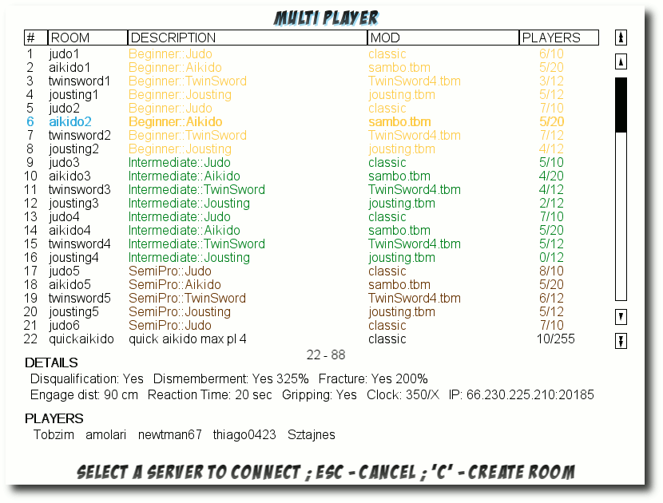Die Liste mit Toribash-Servern.
Regeln
Jedes Spiel hat bestimmte Regeln. Diese kann man für sich im Singleplayer-Modus unter „Options » Game Rules“ einstellen. Dabei ist es möglich, in jedem Feld entweder eine oder mehrere kommaseparierte Zahlen einzustellen, oder durch die Eingabe von „0“ oder „1“ Optionen zu deaktivieren bzw. zu aktivieren. Da man die Erklärung der Punkte nur nach ausgiebiger Suche im Netz findet (und dann auch nicht alle), folgt hier die Bedeutung der einzelnen Einträge:- Mod: Dies ist der aktuelle Modname (siehe unten)
- Match frames: Gesamtanzahl der Frames pro Kampf (Zahl oben in der Mitte des Bildschirms)
- Turn frames: Anzahl der Frames pro Runde (d. h. nachdem man Space drückt, um seinen Zug zu beenden). Dies kann auch eine kommaseparierte Liste sein.
- Flags: ein Spiel besitzt verschiedene Optionen:
- 0 = None: keine Besonderheiten
- 1 = DQ: mit Disqualifikation
- 2 = Decap: mit Verlust von Körperteilen/Enthauptung
- 4 = No gripping: Greifen verbieten
- 8 = Fractures: mit Brüchen
- Dismemberment: 1 = Verlust von Körperteilen erlauben. Über den Grenzwert darunter kann eingestellt werden, wie leicht Körperteile vom Körper zu trennen sind.
- Fracture: 1 = Brüche erlauben. Brüche entstehen, wenn ein Gelenk über den Grenzwert weiter unten strapaziert wird. Dieses Gelenk färbt sich hellblau und kann nicht mehr bewegt werden.
- Disqualification: 1 = Disqualifikation aktivieren. Sobald ein anderes Körperteil außer Hände und Füße den Boden berührt, wird der jeweilige Spieler disqualifiziert.
- DQ timeout: Zeit in Sekunden, die ein Körperteil auf dem Boden verbleiben darf, ehe der Spieler disqualifiziert wird.
- DQ flag: 1 = Sofortige Disqualifikation, wenn man außerhalb des Ringes/Dojo den Boden berührt.
- Dismember Treshold: Prozentzahl, wie stark eine Kraft einwirken muss, bis ein Körperteil abfällt.
- Fracture Threshold: Prozentzahl, wie stark eine Kraft einwirken muss, bis ein Gelenk bricht.
- Dojo Type: 0 = quadratischer Ring, 1 = runder Ring
- Dojo Size: Größe des Dojo/Ringes in cm
- Engage Distance: Abstand in cm zwischen zwei Kämpfern beim Start des Kampfes
- Engage Height: Höhe in cm, in der sich die Kämpfer zu Beginn befinden
- Engage Rotation: Linksdrehung beider Figuren in Grad zu Beginn des Kampfes
- Engage Space: Abstand zweier Verbündeter in einem 2-gegen-2-Kampf
- Players Engage Position: Position im Raum für alle Spieler
- Players Engage Rotation: Drehung aller Spieler
- Damage: 0 = nur gegnerischer Schaden bringt Punkte / jeder Schaden (auch selbst verursachter) bringt Punkte / nur selbst verursachter Schaden bringt Punkte
- Gravity: Kräfte, die auf die Spieler von außen Einwirken (Standard ist Erdgravitation)
- Sumo: 1 = neben Händen und Füßen führen auch die Handgelenke auf dem Boden zur Disqualifikation
- Rpg: unbekannt
Mods
Das Wort „Mod“ ist in der Computerspielewelt die Kurzform von Modifikation. Sie beschreibt eine Veränderung der eigentlichen Spielwelt oder des Spielprinzips. In Toribash gibt es gibt verschiede Modifikationen, die das ursprüngliche Spiel mit zwei Figuren stark verändern. Man findet diese unter „Options -> Mods“ oder kann sie auch in den Regeln (siehe oben) durch Linksklick auf den Modnamen auswählen. Vorinstalliert werden fast 1000 Modifikationen mitgeliefert, darunter auch Schwertkämpfe, Basketball, Rollschuhe, Akrobatik, mechanische Bullen (Link) und vieles vieles mehr. Hier kann man sich definitiv austoben. 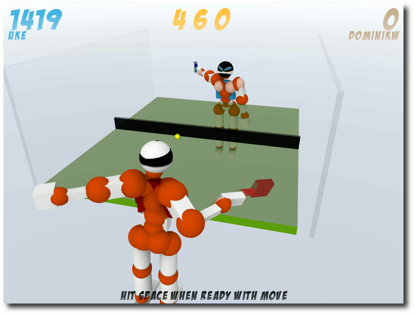Auch Tischtennis kann man spielen.
Skripte
Unter „Options » Scripts“ findet man einige Skripte, mit denen man auch das Verhalten Ukes, dem gegnerischen Dummy, beeinflussen kann. Einige davon sind:- „random“, „opener“, „ukebot“: Lässt Uke im Singleplayer-Modus nicht nur langweilig in der Gegend herumstehen.
- „tooltip“: Fügt Tooltips hinzu, die den Status der Gelenke zusätzlich zur unteren Bildschirmanzeige anzeigen.
- „unloadscripts“: Bisherige geladene Skripte wieder aufheben.
Replays
Nach dem Spiel kann man, wie oben erwähnt, eine Wiederholung des Kampfes speichern. Im Hauptmenü gelangt man über den Eintrag „Replays“ zur Liste der gespeicherten Kämpfe. Durch Auswahl mit Return lassen sich diese abspielen, aber nicht verändern.Optionen
Neben den Regeln kann man auch noch einige Einstellungen zu den grafischen Optionen des Spiels einstellen. Da auch diese im Spiel selbst wenig erklärt sind, folgt hier eine Auflistung:- Mouse Buttons: Anzahl der Maustasten, mit denen man die Gelenke beeinflussen kann. Stellt man hier „1“ ein, kann man mit der linken Maustaste zwischen allen vier Zuständen wechseln. Stellt man „2“ ein, ist die linke Maustaste für das Entspannen und Halten zuständig und das Mausrad für das Beugen und Strecken.
- Background Click: 1 = Klick in den Hintergrund deselektiert die Spielfigur.
- Volume: Gesamtlautstärke
- Music: 1 = Musik aktivieren
- Music Volume: Musiklautstärke
- Fullscreen: Vollbild (die Auflösung des Fensters wird dabei nicht verändert!)
- Autosave replays: 1 = Wiederholungen werden automatisch im Ordner autosave gespeichert.
- Remember Game Rules: 1 = Behält die Regeln bei einem Neustart des Spiels bei. Ansonsten werden immer die Standardregeln geladen.
- Frame Skipping: unbekannt
- Shaders: 1 = aktiviert mehr Grafikeffekte
- Fluid Blood: Blutanimation
- Reflections: Spiegelungen auf dem Boden
- Soft Shadows: Spielerschatten
- Transparency: Transparente Texturen
- Ambient Occlusion: weichere Schatten
- Bump Mapping: Tiefeninformation bei Texturen
- Cel-Shading: Comic-Look (schwarze Umrandumg um Grafikelemente)
- Disable Graphics Reloading: unbekannt, soll angeblich bei Grafikproblemen helfen (siehe unten)
- Beginner: 0 = blendet den Tutorial-Punkt im Hauptmenü aus
Rechts mit Standardeinstellungen, links mit allen Grafikoptionen aktiviert (ohne Cel-Shading sieht es aber besser aus).
„Versteckte“ Optionen
Neben obigen Optionen gibt es noch einige Optionen, die man nicht über das Menü erreichen kann, sondern nur über die eingebaute Konsole. Will man sich mit anderen Spieler im Kampf oder in der Warteschlange unterhalten, drückt man T und kann danach etwas eintippen. Über diese Eingabezeile können zudem verschiedene Kommandos absetzen, welche das Spiel beeinflussen. Hier ein kleiner Auszug:- /re 1024 768 - setzt die Auflösung auf 1024x768
- /opt OPTION 1 - aktiviert eine bestimmte Option (Liste aller Optionen (Link))
- /help - blendet einige Befehle ein
- /fullhelp - blendet alle Befehle ein (eine Liste gibt es im Forum (Link))
Torishop
Im Hauptmenü findet man auch den „Torishop“. Für gewonnene Kämpfe erreichte Toricredits können dort gegen kleine Gimmicks für die eigene Spielfigur eingetauscht werden (zumindest theoretisch, siehe unten). So gibt es verschiedene Farben (für Blut, Gelenke, Spielfigur, Schatten etc.), Schlag- und Trittbewegungsstreifen oder Kopftexturen zu kaufen. Auf der Webseite gibt es dazu noch einen größeren Shop (Link), in dem man weitere Gimmicks findet. Gegen echtes Geld kann man auch Booster-Packs kaufen, die pro gewonnenem Kampf für mehr Toricredits sorgen. Wichtig ist, dass diese ganzen Veränderungen an der Spielfigur nicht die Fähigkeiten der selben verbessern.Probleme und Besonderheiten
Es gibt in Toribash leider auch einige Probleme bzw. Besonderheiten, die nicht immer ganz zu verstehen sind. Einige davon sollen hier erwähnt werden.Kameraführung
Die Kamera ist, auch wenn man einen Spieler anwählt, nicht auf diesen fixiert, sondern nur auf die initiale Spielerposition. Das führt dazu, dass man die eigene Spielfigur nur noch sehr schlecht erreichen und bewegen kann, wenn diese in einem Kampf ihren Platz zu weit verlässt. Hier hilft das Freecam-Skript (Link). Nach der Installation kann man die Kamera weiterhin mit den Tasten W, A, S, D bewegen. Zusätzlich gibt es aber auch noch I, J, K, L, mit denen man die Kamera seitwärts und vorwärts/rückwärts im Raum bewegen kann. Alternativ kann man auch /opt smoothcam 0 nutzen, womit der eigene Dummy immer im Mittelpunkt des Schirms bleibtHaltung nach Treffer
Nach dem Verlust eines Körperteils verlieren alle Gelenke ihren Zustand und gehen zu „entspannen“ über. Wenn man das übersieht, kann dies im nächsten Schritt unangenehme Folgen haben.Regeländerung
In manchen Fällen kam es im Test vor, dass sich Regeln nicht ändern ließen. Es half dann, die aktuelle Mod mit den Regeln komplett neu zu laden.Reihenfolge der Replays, Mods etc.
Ein großes Manko ist die fehlende Sortiermöglichkeit der Dateilisten. Es ist so gut wie unmöglich, die eigenen gespeicherten Wiederholungen in dem Wust von anderen wiederzufinden. Gegebenenfalls sollte man diese anderen alle vor dem Kämpfen aus dem Ordner replay entfernen. Zusätzlich wird nicht abgefragt, wenn eine Wiederholung gespeichert wird, ob der Name bereits existiert. Man überschreibt so gegebenenfalls eine frühere Wiederholung, ohne dass man darauf hingewiesen wird.Grafikprobleme
Auf dem Testrechner, einem 64-Bit-Intel-Core-2-Duo und ATI-HD4850-Grafikkarte unter Ubuntu 8.10, gab es leider mit den erweiterten Grafikoptionen („Shaders“) beim Hintergrund/Himmel Grafikfehler, sodass dieser manchmal schön gestreift war. Dies hat glücklicherweise nicht sehr vom Kampf abgehalten, es sah eben nur unschön aus. Die Option „Disable Graphics Reloading“ im Setup-Menü (siehe oben) brachte hier keine Verbesserung.Der Himmel kann etwas gestreift sein, wenn man die Shader-Option aktiviert.
Torishop
Der Torishop im Spiel selbst hat im Test leider gar nicht funktioniert. Weder ging der Link, noch konnten Farben oder Texturen gekauft werden. Über den Torishop auf der Webseite gelang der Kauf und die Aktivierung des Gimmicks dagegen ohne Probleme.Tar-Archiv vs. Deb-Palet
So leicht die Installation per Deb-Paket auch geht, hat diese Methode auch ein kleines Problem: Es werde anfangs keine Skripte gefunden, obwohl diese im Ordner /usr/share/games/toribash/data/script/ vorliegen. Dies hat den Grund, dass der Ordner .toribash/data/script/ im Homeverzeichnis bevorzugt wird und in diesem keine Skripte liegen. Man muss diese also manuell kopieren:$ cp -r /usr/share/games/toribash/data/script/ ~/.toribash/data/Gleiches gilt auch für die Wiederholungen und Mods. Sobald im Homeverzeichnis ein Ordner dafür existiert, wird dieser bevorzugt und man muss ggf. manuell Dateien kopieren. Die per F gespeicherten Wiederholungen werden dabei immerhin standardmäßig in ~/.toribash/replays abgelegt, was das Problem mit der Reihenfolge der Replays umgeht. Problematisch ist das Ganze aber vor allem deshalb, weil die Toribash-Version aus dem Tar-Archiv leider nicht diesen Homeordner nutzt, sondern nur in den entpackten Archiv-Ordner schaut. Dadurch sind die beiden Version inkompatibel zueinander, da man, obwohl das gleiche Spiel startet, man nicht auf die gleichen Daten zugreifen kann. Es ist schade, dass sich die Tar-Archiv-Version so verhält.
Community
Die Community ist weltweit vertreten und normalerweise während der Kämpfe sehr freundlich. So feuert man sich gegenseitig an und verabschiedet sich auch meist höflich mit einem „gg“ für „good game“ oder „gf“ für „good fight“. Wie überall gibt es leider auch dort ein paar Gestalten, die nur Ärger verbreiten wollen. In so einem Fall sollte man sich einen anderen Raum suchen. Für Toribash-Anfänger empfiehlt sich das Wiki (Link), in dem man auch Anleitungen für sehr viele Bewegungsabläufe („Moves“) und zahlreiche weitere Mods findet. Daneben gibt es auf diversen Videoportalen auch zahlreiche Tutorials für Sprünge, Schläge und Tritte. Bei Fragen kann man sich auch an die Forengemeinschaft wenden (Link) oder im IRC auf dem Server irc.toribash.com, Raum #toribash nachfragen. Letztgenannter hat leider ein sehr niedriges Niveau, so wurde ich bei einigen Testfragen mehrfach abwertend als Noob bezeichnet und mit „GTFO“ (Link) verabschiedet. Einzelne haben immerhin relativ freundlich auf Fragen geantwortet.Gewaltgrad
Zum Schluss soll noch kurz auf den Gewaltgrad in Toribash eingegangen werden. Hierbei muss nach den einzelnen Disziplinen unterschieden werden. Aikido-Kämpfe enden zum Beispiel fast immer unblutig, weil es nur darum geht, den Gegner umzuwerfen, sodass andere Körperteile als Hände oder Füße den Boden berühren. Schwertkämpfe zielen wie beim Sportfechten darauf ab, den Gegner an kritischen Körperstellen zu treffen und sind entsprechend blutiger. Immerhin kann man über die versteckte Option /opt blood 0 und /opt bloodstains 0 das Blut komplett deaktivieren. Durch diese Optionen und die sowieso schon stark abstrahierten Dummies kann das Spiel meiner Meinung nach auch nicht als jugendgefährdend erachtet werden. Wer nicht nur zerstören, sondern erschaffen will, kann sich natürlich an eigenen Filmen versuchen, wie man sie auf verschiedenen Videoportalen findet. Diese zeigen sehr gute Bewegungsabläufe wie z. B. dieses Mirror-Edge-Video (Link) oder dieses Akrobatik-Video (Link).Fazit
Toribash macht jede Menge Spaß. Sei es nur, um im Einzelspielermodus einen der zahlreichen Mods zu testen oder im Mehrspielermodus gegen andere anzutreten. Selbst verlieren macht dann noch Freude, wenn der Gegner einen extrem guten Schlag oder Stoß fabriziert hat. Die Gewaltdarstellung hält sich in Grenzen und kann variabel eingestellt werden. Dennoch bin ich der Meinung, dass das Spiel für Achtjährige nicht unbedingt geeignet ist. Links- http://de.wikipedia.org/wiki/Ragdoll
- http://www.toribash.com/
- http://linux.toribash.com/
- http://youtube.com/watch?v=qFim15em3qA
- http://de.wikipedia.org/wiki/Bullenreiten\#Mechanischer_Bulle
- http://forum.toribash.com/showthread.php?t=49716
- http://forum.toribash.com/showthread.php?t=58177
- http://forum.toribash.com/tori.php
- http://forum.toribash.com/showthread.php?t=23369
- http://wiki.toribash.com/
- http://forum.toribash.com/
- http://www.stupidedia.org/stupi/GTFO
- http://youtube.com/watch?v=dfu6YkqYG3k
- http://youtube.com/watch?v=CEg3qyb22pM
| Autoreninformation |
| Dominik Wagenführ spielt sehr gerne und versucht dafür natürlich auch alle Möglichkeiten von Linux auszunutzen. Physiksimulationen machen ihm dabei besonders viel Spaß. |
Zum Index
Erfahrungsbericht: OpenOffice.org 3.0
von Thomas Stehle Die Office-Suite OpenOffice.org 3.0 ist seit gut einem halben Jahr veröffentlicht. Es wurde von verschiedenen Seiten viel über Neuerungen und Funktionen berichtet. Doch was merkt man im Alltag von all den Neuerungen? Es ist genug Zeit verstrichen, um die Erfahrung eines Nutzers im täglichen Umgang mit OpenOffice.org vorzustellen. Redaktioneller Hinweis: Dieser Artikel ist erstmals in Ikhaya (Link) erschienen und wird mit freundlicher Genehmigung des Autors unter der GFDL veröffentlicht. Es handelt sich bei diesem Artikel um einen Erfahrungsbericht. Das bedeutet, dass mit anderer Hardware und mit anderen Versionen auch andere Ergebnisse erreicht werden können. Diesem Erfahrungsbericht liegen die Versionen Ubuntu 8.04 „Hardy Heron“ und OpenOffice.org 3.0.0 zugrunde. Die OpenOffice.org-Pakete stammen von der deutschsprachigen Homepage von OpenOffice.org. Ubuntu liefert über seine Quellen den OpenOffice.org-Fork Go-oo (Link) aus. In diesem sind teilweise bereits Funktionen/Erweiterungen integriert, die hier aufgeführt werden. Insbesondere OxygenOffice (Link), das auf Go-oo aufbaut, weist einige Unterschiede zu dem hier vorgestellten OpenOffice.org auf. Obwohl einige Einstellungen, Erweiterungen und Vorlagen dieser Forks nützlich und sinnvoll erscheinen, wird im weiteren Verlauf nicht darauf eingegangen, da dies einen sinnvollen Vergleich beinahe unmöglich macht.Der Dokumenten-Konverter
OpenOffice.org ist für seine Flexibilität im Umgang mit Dateiformaten bekannt. Dies wird durch seine Import- und Exportfilter ermöglicht. Mit der Version 3.0 unterstützt OpenOffice.org jetzt auch das Dateiformat OOXML aus dem Hause Microsoft, das von der ISO als Standard anerkannt ist (Link). Doch was soll man tun, wenn man viele Dokumente umwandeln möchte? Jedes einzelne zu öffnen und im neuen Format zu speichern ist nicht nur aufwendig, sondern auch zeitraubend. Hier gibt es ab Version 3.0 eine sehr nützliche Neuerung, den Dokumenten-Konverter. 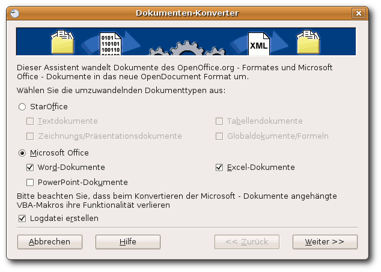Der Dokumenten-Konverter.
Den Dokumenten-Konverter erreicht man über „Datei » Assistenten » Dokumenten-Konverter...“. Man wird von einem Assistenten durch den Vorgang geführt. Einstellen kann man, welche Dateitypen aus welchen Verzeichnissen man konvertieren möchte und ob man ein Protokoll haben will. Je nach Anzahl und Größe der Dateien kann das Konvertieren eine Weile dauern. Die Ergebnisse sind meist ganz passabel. Generell ist festzustellen: Je aufwendiger die Formatierung und der enthaltene „Schnickschnack“ ist, desto schlechter sind die Ergebnisse. Fehlgeschlagen ist nur die Konvertierung einer Excel-Tabelle mit vielen Makros. Wenn man bedenkt, dass das Schreiben der für die Konvertierung notwendigen Filter für Produkte aus dem Hause Microsoft einem Stochern im Nebel gleicht, ist das Ergebnis doch sehr überzeugend.
Erweiterungen
Erweiterungen (Extensions) - oder Add-ons, wie sie bei anderen Programmen genannt werden - führten bei OpenOffice.org bisher eher ein Schattendasein. Dies soll sich mit der neuen Version ändern. Diese Aufwertung hat das Ziel, den möglichen Funktionsumfang zu erhöhen, aber das Programm nicht unnötig aufzublähen. Die Erweiterungen werden zentral auf der Seite „OpenOffice.org Extensions“ (Link) gesammelt. Am auffälligsten ist, dass ab der neuen Office-Version Wörterbücher für die Rechtschreibprüfung (dict-de-DE (Link)) als Erweiterungen eingebunden werden können. Die Auswahl an Erweiterungen scheint zunächst beachtlich. Wenn man die vielen Wörterbücher außer Acht lässt, relativiert sich das Bild. Es stehen dennoch einige interessante Zusatzfunktionen wie die Sun PDF Import Extension (Beta) zur Verfügung (Link) (siehe Abschnitt „OpenOffice.org und PDF“). Die Installation gestaltet sich in den meisten Fällen recht einfach. Nachdem man die gewünschte Erweiterung auf seinen Rechner heruntergeladen hat, wählt man sie unter „Extras » Extension Manager » Hinzufügen...“ aus. Mit dem „Extension Manager“ lassen sich die Erweiterungen auch bequem an einer zentralen Stelle verwalten. 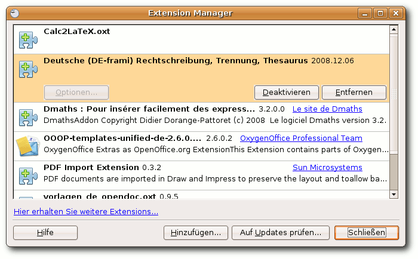Der Extension Manager.
Leider trifft dies nicht auf alle zu. Beispielsweise kann das „OpenOffice.org collaboration & document management extension“ (Link), das kollektives Arbeiten ermöglichen soll, nur vom Hersteller direkt heruntergeladen und separat installiert werden. Des Weiteren ist die Dokumentation bzw. Beschreibung der Erweiterungen generell (noch) nicht lokalisiert.
Writer
Die Textverarbeitung ist wohl die am häufigsten genutzte Office-Anwendung. Deshalb sind von Änderungen im Writer besonders viele Nutzer betroffen. Nach dem Öffnen des Writers ist zumindest auf den ersten Blick keine Veränderung zu erkennen.Formatvorlagen & Überschriften
Wer öfter mit dem Writer größere Textdokumente erstellt, hat sicher schon die Vorteile von Formatvorlagen für sich entdeckt. Schnell lassen sich mit deren Hilfe die Formate für verschiedene Textelemente wie Überschriften und Textkörper definieren, was eine effiziente Formatierung ermöglicht. Sie sind über „Format » Formatvorlagen“ bzw. mit F11 zu erreichen. Mit einem Rechtsklick auf die gewünschte Vorlage und einem Klick auf „Ändern“ lassen sie sich anpassen. Wer sich von den Einstellungen unterhalb des „Nummerierung“-Tabs eine Nummerierung der verschiedenen Überschriftenebenen nach dem Schema „1 1.1 1.1.1 ...“ erhofft, ist hier an der falschen Stelle. Die Überschriften werden innerhalb der ausgewählten Ebene durchnummeriert. Eine Verknüpfung mit der darüber liegenden Ebene im „Verwalten“-Tab bewirkt lediglich eine Fortführung von deren Nummerierung. Das gewünschte Verhalten lässt sich über „Extras » Kapitelnummerierung“ erreichen. Falls man ein Inhaltsverzeichnis nutzen möchte, empfiehlt es sich, in das Eingabefeld „Trennzeichen dahinter“ ein Leerzeichen einzutragen. Ansonsten folgt der erste Buchstabe der Überschrift im Inhaltsverzeichnis direkt hinter der Kapitelnummer. Immerhin ist dieses Verhalten nur noch im Inhaltsverzeichnis zu beobachten und nicht mehr wie in der Version 2.4.x auch in den Überschriften. Was sich die Entwickler bei dieser Aufteilung gedacht haben, ist schleierhaft. Jedenfalls wirkt diese verwirrend und dürfte vor allem für Umsteiger von anderen Textverarbeitungsprogrammen verwirrend sein. Leider ist hier keine Verbesserung gegenüber der Vorgängerversion zu verzeichnen. An der Art der Beschriftung hat sich ebenfalls nichts geändert. Das ist in Bezug auf die Tabellenbeschriftung verwunderlich. Einerseits befindet sich die Beschriftung einer Tabelle in einer wissenschaftlichen Arbeit oberhalb der Tabelle. Andererseits wird immer wieder danach gefragt, wie man die Beschriftung über die Tabelle setzen kann. Das Kästchen mit der Position der Beschriftung bleibt auch in der neuen Version ausgegraut. Als suboptimal anzusehen ist die Lösung, die Beschriftung einzufügen und die Tabelle mit der Maus innerhalb des Objektrahmens nach unten zu ziehen, damit die Beschriftung nach oben rutscht. Eine Neuerung ist bei den Querverweisen zu verzeichnen. Ab der neuen Version ist es nun möglich, direkt auf eine Überschrift oder einen nummerierten Absatz zu verweisen. In den älteren Versionen musste zuerst eine Referenz definiert werden, auf die dann verwiesen werden konnte. Verweise können in einem gut strukturierten Dokument ein wichtiger Bestandteil sein. Deshalb stellt diese kleine Verbesserung für so manchen Nutzer eine erhebliche Erleichterung dar.Notizen
Wenn man einen Text zum Korrekturlesen bekommt, erweist es sich oft als nützlich, Kommentare zu der einen oder anderen Passage zu hinterlassen, oder man möchte sich zur Erinnerung an irgendetwas einen Vermerk machen. Das sollte weder die Formatierung noch die Position von einzelnen Textelementen beeinflussen. Dies nennt sich in OpenOffice.org „Notiz“, ist über „Einfügen » Notiz“ bzw. Strg + Alt + N erreichbar und bereits seit Längerem integriert. 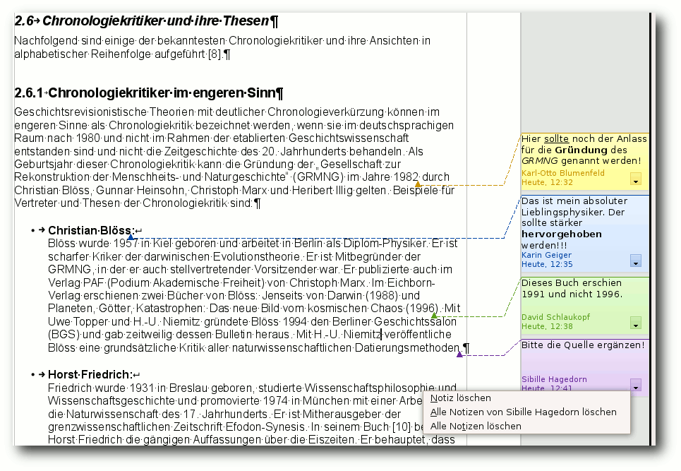Notizen ab OpenOffice.org 3.0.
Allerdings ist die Funktion erst jetzt mit der Version 3.0 alltagstauglich und damit benutzbar geworden. In früheren Versionen wurde ein unscheinbares, gelbes Kästchen als Zeichen eingefügt. Die Notiz wurde sichtbar, wenn man den Mauszeiger über das Kästchen legte. Die Notizen konnten nur über eine erneute Anwahl über das Menü bearbeitet werden. Dies wurde in der aktuellen Version komplett überarbeitet. Die Notiz wird in einer grauen Leiste neben dem Text angezeigt und mit einer gestrichelten Linie zu der Position im Text gekennzeichnet. Die Notizen lassen sich direkt bearbeiten. Sie lassen sich auch in geringen Umfang (Fett, Kursiv, Unterstrichen) formatieren. Zudem werden Notizen verschiedener Benutzer mit unterschiedlichen Farben gekennzeichnet. Eine kleine Auswahl („Notiz löschen“, „Alle Notizen von <Benutzer> löschen“, „Alle Notizen löschen“) für den Umgang mit Notizen ist über ein Dropdownmenü in den Notizen verfügbar. Noch ist es nur möglich, eine Notiz als eine Art Zeichen einzufügen und nicht einen Textbereich mit einer Notiz zu hinterlegen. Diese und weitere Funktionen sollen in Zukunft hinzugefügt werden.
Writer2LaTeX
Writer2LaTeX (w2l) (Link) ist eine Erweiterung für die Konvertierung eines Writer-Dokuments in LATEX-Quellcode. Grundsätzlich kann man seinen Text im Writer verfassen und mit dem Konvertieren die typographischen Vorteile von LATEX nutzen. Hierzu gibt es zwei Möglichkeiten. Entweder man nutzt die graphische Oberfläche (also die Erweiterung). Hierfür ist die Anpassung der Datei .openoffice.org/3/user/writer2latex.xml im Homeverzeichnis sehr zu empfehlen. Es steht (noch) kein Dialog für nähere Einstellungen zur Verfügung. Dementsprechend kann das Ergebnis ohne eine Anpassung mit gutem Gewissen als unbefriedigend bezeichnet werden. Ein Dokument lässt sich über „Datei » Exportieren... » Dateityp: LaTeX 2e (.tex) » Speichern“ in ein LATEX-Dokument überführen. Falls man weiterhin auch noch mit dem Writer an dem Dokument arbeiten möchte, muss man es zusätzlich als odt-Dokument speichern. Es ist zur Zeit nicht möglich, LATEX-Quelltext in OpenOffice.org zu importieren. Die zweite Möglichkeit ist die Stand-alone-Variante, die von der Projekt-Homepage (Link) bezogen werden kann. Sie bietet einige weitere Möglichkeiten, auf die an dieser Stelle nicht eingegangen werden soll.Umstieg von Word zum Writer
Viele Benutzer, die sich Linux installieren, haben vorher ein anderes Betriebssystem und dessen Programme genutzt. Die meisten dieser Umsteiger wechseln von Windows mit dessen Office-Suite. OpenOffice.org bietet viele Funktionen, die das Microsoft-Pendant auch bietet. Allerdings unterscheiden sich in einigen Fällen die Namen oder die Position im Menü. Deshalb wird an dieser Stelle eine kurze Auflistung häufig genutzter Funktionen, deren Namen und Position in den beiden Textverarbeitungsprogrammen aufgeführt.| Umstieg von Word zu Writer (Unterschiedliche Bezeichnung/Position von Funktionen) | ||
| MS Word 2003/XP | OOo 3.0 Writer | Erreichbar unter... |
| Absatzkontrolle | Hurenkinder- und Schusterjungenregelung | „Format » Absatz... » Textfluss“ |
| Änderungen nachverfolgen | Änderungen aufzeichnen | „Bearbeiten » Änderungen » Aufzeichnen“ |
| Seite einrichten | Seiteneinstellungen | „Format » Seiteneinstellungen“ |
| Optionen für Einblenden/Ausblenden ¶ | Optionen für Steuerzeichen ¶ | „Extras » Optionen » OOo Writer » Formatierungshilfen“ |
| Feld (Datum, Uhrzeit, Seitennummer,...) | Feldbefehl (Datum, Uhrzeit, Seitennummer,...) | „Einfügen » Feldbefehl » Datum/Uhrzeit/Seitennummer/...“ |
| Grafik | Bild | „Einfügen » Bild » Aus Datei“ |
| Kommentare | Notiz | „Einfügen » Notiz“ |
| Markup | (Änderungen) Anzeigen | „Bearbeiten » Änderungen » Anzeigen“ |
| Symbol | Sonderzeichen | „Einfügen » Sonderzeichen“ |
| Textflussumbruch | Zeilenumbruch | „Einfügen » Manueller Umbruch » Zeilenumbruch“ |
Calc
Das Erste, was einem nach dem Start der Tabellenkalkulation in Version 3.0 auffallen dürfte, sind markierte Zellen. Diese sind nun nicht mehr schwarz, sondern in weicheren Farben, unter Ubuntu in Orange und unter Windows in Hellblau, gehalten. Die Handhabung eines markierten Bereiches hat sich nicht verändert. Durch die helleren Farben und den größeren Mauszeiger beim Ändern/Verschieben des Bereichs wird das Arbeiten angenehmer. Dies trifft auch auf die Formatierung der Zellen zu. Leider ist es nach wie vor nicht möglich, unterschiedlich dicke Rahmen über die Symbolleiste zu wählen. Um dennoch Rahmen mit unterschiedlichen Linienstärken zu erhalten, muss man den zu formatierenden Bereich markieren und mit der rechten Maustaste den markierten Bereich anklicken. Im Kontextmenü gelangt man über „Zellen formatieren...“ in den Dialog, in dem man unter der Registerkarte „Umrandung“ diverse Linien und deren Eigenschaften bestimmen kann.Tabellen gemeinsam bearbeiten
Nun ist es möglich, im Netzwerk gemeinsam an einem Tabellendokument zu arbeiten. Sobald ein Dokument von einem Benutzer geöffnet wird, markiert OpenOffice.org dieses als schreibgeschützt. Dies funktioniert auch in gemischten Umgebungen zuverlässig. Um gemeinsam an einem Dokument arbeiten zu können, muss man über „Extras » Dokument freigeben...“ den Status „Schreibgeschützt“ aufheben. Es erscheint ein Dialog mit einer Warnung. Nach dessen Bestätigung und dem Speichern des Dokumentes können mehrere Nutzer an dem Dokument arbeiten. Für die Zusammenarbeit ist es erforderlich, dass unter „Extras » Optionen » OpenOffice.org » Benutzerdaten“ ein Benutzername eingetragen ist. Auf dem selben Weg kann die Freigabe auch wieder aufgehoben werden. Im freigegebenen Modus stehen einige Funktionen wie das Formatieren von Zahlen, Farben und Schriftarten nicht zur Verfügung. Des Weiteren ist es nicht möglich, Diagramme oder Zeichenobjekte zu bearbeiten. Um solche Aktionen durchführen zu können, muss ein Benutzer Exklusivzugriff erhalten. Achtung: Wird eine Datei, die bereits bearbeitet wird, im Netzwerk von einer älteren Version nochmal geöffnet, bekommt dieser Nutzer keine Warnung und kann diese Datei bearbeiten. Dies führt zu Inkonsistenzen und kann den Verlust der Daten zur Folge haben.Diagramme
Bereits in Version 2.3 ist ein neues Modul zur Erstellung von Diagrammen integriert worden. Die Funktionalität wurde seither stark ausgebaut. In der neuen Version scheint es nun vollständig kompatibel mit MS-Excel-Diagrammen (2003/XP) zu sein. Nach dem Import von Excel-Dateien, die Diagramme enthalten, sind keine Probleme bei der Darstellung und Bearbeitung dieser Dateien festzustellen. Die Funktionalität wurde in der neuen Version ebenfalls verbessert. Der Menüunterpunkt „Statistik“ unter „Einfügen“ wurde durch die Einträge „Trendlinien...“, „Y-Fehlerbalken“ und „Mittelwertlinie“ ersetzt. Diese lassen sich, sofern es die Daten zulassen, schneller einfügen. Die Regressionsgleichung zu der Trendlinie als auch die Korrelationskoeffizienten können nun auch direkt im Diagramm abgebildet werden. Die optischen Gestaltungsmöglichkeiten sind auch weiter ausgebaut worden. Generell arbeitet das Modul zuverlässiger und schneller. Als Diagrammtypen kann man alle möglichen Diagrammarten auswählen, mit 3-D-Effekten versehen, die Perspektive einstellen und die Position einer Lichtquelle definieren. Somit ist es jetzt auch mit Calc leicht möglich, ein Diagramm bis zur totalen Verstümmelung der Aussagekraft aufzuwerten. 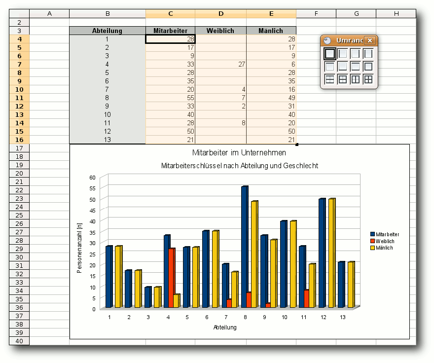Eine Tabelle mit Diagramm.
Solver
Mit dem Solver hat in OpenOffice.org ein Werkzeug Einzug gehalten, das bisher nur als Erweiterung zur Verfügung stand. Es ist ein Werkzeug für die Lineare Programmierung (Link) und basiert auf dem Simplex-Algorithmus (Link). Es können aber auch andere Algorithmen als Erweiterung hinzugefügt werden. Der Solver ist daher eher für Unternehmen und Mathematiker als für den Privatanwender gedacht. In der Betriebswirtschaft kann er im Controlling und auch in der Logistik- und Produktionsplanung eingesetzt werden. Voraussetzung ist eine Tabelle, in der alle Daten und deren Zusammenhänge mit Formeln definiert sind. Der Solver ist über „Extras » Solver“ zu erreichen. Es erscheint ein Fenster, in dem man die Zielzelle, die Berechnungsart, die veränderbaren Zellen und die Nebenbedingungen festlegen kann. Es ist auch möglich, die Rechnung in entgegengesetzte Richtung durchzuführen. Man legt also einen Zielwert fest und berechnet die Werte, z.B. den Wareneinsatz für diesen. Unter Optionen („Extras » Solver » Optionen“) kann man, falls man einen anderen Algorithmus installiert hat, diesen sowie einige Anforderungen an das Ergebnis festlegen. Der Solver macht einen ausgereiften Eindruck und ist durch die übersichtliche Anordnung leicht anzuwenden.Calc2LaTeX
Nicht neu, aber ebenfalls erwähnenswert ist die Erweiterung Calc2LaTeX (Link). Sie ist inzwischen fester Bestandteil von OpenOffice.org und liegt in Form eines Makros vor. Da es eine Kunst für sich ist, unter LATEX schöne und aussagekräftige Tabellen zu erstellen, bietet Calc2LaTeX eine gute Hilfestellung, um ein Grundgerüst zu erhalten. Das gilt insbesondere für große Tabellen. Die Betonung liegt hierbei aber auf Grundgerüst. Die Formatierung der Tabelle wird nur rudimentär (Fettschrift und Kursiv) übernommen. Um Calc2LaTeX zu nutzen, markiert man zuerst den zu konvertierenden Bereich in der Tabelle. Das Makro erreicht man dann über „Extras » Makros » Makro ausführen » Meine Makros » Calc2LaTeX » Calc2LaTeX » Main“. Es erscheint ein Dialog, in dem man ein paar grundlegende Einstellungen vornehmen kann. 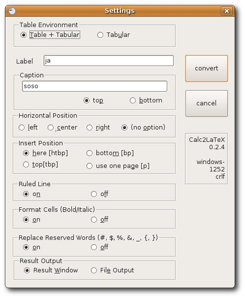Die Optionen von Calc2LaTeX.
Umstieg von Excel zu Calc
Auch bei Calc gibt es Funktionen, die vergleichbar in Excel vorhanden sind, aber einen anderen Namen oder eine andere Position im Menü haben. Hier werden ein paar häufig verwendete Funktionen aufgeführt.| Umstieg von Excel zu Calc (Unterschiedliche Bezeichnung/Position von Funktionen) | ||
| MS Excel 2003/XP | OOo 3.0 Calc | Erreichbar unter... |
| Blatt löschen | Tabelle löschen | „Bearbeiten » Tabelle » Löschen“ |
| Druckbereich festlegen | Druckbereich festlegen | „Format » Druckbereiche » Festlegen“ |
| Seite einrichten | Seite | „Format » Seite“ |
| Kommentar | Notiz | „Einfügen » Notiz“ |
| Markup | (Änderungen) Anzeigen | „Bearbeiten » Änderungen » Anzeigen“ |
| Pivottable-Bereich | Datenpilot | „Daten » Datenpilot“ |
| Wiederholungszeilen/ -spalten | Wiederholungszeilen/ -spalten | „Format » Druckbereiche » Bearbeiten » Wiederholungszeilen/-spalten“ |
Impress
Das Präsentationsmodul hat ebenfalls einige kleine Neuerungen spendiert bekommen. Es handelt sich hier um viele Kleinigkeiten, die das Arbeiten angenehmer gestalten. Die neuen Seiten-Layout-Symbole stellen hier wohl nur ein optisches Sahnehäubchen dar. Zudem stehen jetzt Designs für Tabellen zur Verfügung. Es ist daher nicht mehr nötig, Tabellen über ein eingebettetes Calc-Dokument zu erzeugen.Die Presenter Console.
Presentation Minimizer
Es kann vor allem bei Präsentationen mit vielen Bildern vorkommen, dass eine Präsentation sehr groß wird. Wenn die Dateigröße zum Problem wird, kann die Erweiterung Presentation Minimizer (Link) Abhilfe schaffen. Dies wird durch eine höhere Komprimierung der Bilder und das Entfernen nicht mehr benötigter Daten, wie beispielsweise ausgeblendeter Folien, erreicht. Erreichbar ist der Presentation Minimizer über das Menü „Extras » Präsentation komprimieren...“. Der dann erscheinende Assistent ist einfach und selbsterklärend. Auf diese Art lassen sich passable Ergebnisse erzielen.OpenOffice.org und PDF
Einer der großen Vorzüge von OpenOffice.org ist schon seit langem die Fähigkeit des Umgangs mit dem Portable Dokument Format (PDF). Seit Version 1.1 beherrscht OpenOffice.org den Export von Dokument in das Format. Wie bei den vorigen Versionen sind auch hier wieder ein paar Fähigkeiten hinzugekommen.PDF-Import
Der Import von PDF wird durch die Sun PDF Import Extension (Link) ermöglicht. Nachdem man unter „Datei » Öffnen... “ ein PDF ausgewählt hat, wird dieses in Draw geöffnet und kann bearbeitet werden. Dies funktioniert mit allen PDF-Dokumenten, in denen eine Dokumentenstruktur enthalten ist. Ist das PDF mit einem Scanprogramm wie z.B. gscan2pdf (Link) erstellt worden, funktioniert das nicht, da in dem PDF nur das gescannte Bild vorhanden ist, aber nicht der Text oder eine Struktur. Obwohl sich die Erweiterung noch in der Beta-Phase befindet, funktioniert sie im Allgemeinen recht gut und zuverlässig. Einige „Kinderkrankheiten“ sind jedoch festzustellen. So hat OpenOffice.org ein Problem bei Grafiken mit Transparenz. Diese werden nicht korrekt dargestellt. Möchte man einen Text bearbeiten, ist dies nur zeilenweise möglich. Wurde im Ursprungsdokument Blocksatz ohne Silbentrennung verwendet, kann es bei größeren Wortabständen vorkommen, dass eine Zeile in mehrere Textfelder aufgespaltet wird. Wenn man einen Fließtext bearbeiten möchte, ist es daher empfehlenswert, diesen aus einem PDF-Betrachter zu kopieren und ihn dann weiter zu bearbeiten. Bei manchen Dokumenten kann es auch vorkommen, dass in Textfeldern, die bearbeitet wurden, sich die Abstände zwischen den Buchstaben sehr unschön verändert haben. Ansonsten macht der PDF-Import bzw. die Bearbeitung von PDF-Dokumenten einen sehr guten Eindruck. Grafiken lassen sich problemlos bearbeiten, verschieben und austauschen. Markiert man mit der Maus mehrere Objekte wie z. B. Textfelder, lassen sie sich als Gruppe bearbeiten. Position und Größe können so bequem verändert werden. Es konnte keine Einschränkung des Funktionsumfangs von Draw festgestellt werden.Hybrid-PDF
Ist die „PDF Import Extension“ installiert, steht noch eine weitere Funktion zur Verfügung, die wohl eine ähnlich große Bedeutung haben dürfte, das Hybridformat bei PDF. Technisch gesehen wird in das PDF noch zusätzlich ein ODF-Dokument integriert. Öffnet man das PDF mit einem PDF-Reader, werden die Informationen im ODF-Format ignoriert und das PDF wie gewohnt angezeigt. Wird das PDF von OpenOffice.org mit installierter „PDF Import Extension“ geöffnet, erscheint je nach Ursprungsdokument die Datei im Writer, Calc, Impress oder Draw und kann wie beim Öffnen eines ODF-Dokuments weiter bearbeitet werden. Um ein Hybrid-PDF zu erstellen, aktiviert man unter „Datei » Exportieren als PDF...“ in der Registerkarte „Allgemein“ die Schaltfläche „Hybridformat erzeugen“. Ein Hybrid-PDF ist natürlich größer als eine „normale“ PDF-Datei (Informationen im PDF-Format plus Informationen im ODF-Format). Das kann bei der Übertragung im Netzwerk und im Internet bei Anschlüssen mit geringem Volumen wie beispielsweise einem analogen Modem zu Problemen führen, dürfte allerdings nur noch für eine geringe Zahl von Nutzern relevant sein. Ansonsten erhöht es die Flexibilität des Datenaustausches enorm. Wenn beispielsweise ein Vortrag mit Hilfe eines fremden Rechners gehalten werden muss und unklar ist, ob OpenOffice.org installiert ist, kann man den Vortrag im Notfall auch mit einem PDF-Reader halten. Effekte stehen zwar kaum zur Verfügung. Das dürfte allerdings immer noch besser sein, als den Vortrag nicht halten zu können.Fazit
Es hat sich Einiges getan bei OpenOffice.org. Leider sind ein paar Funktionen wie beispielsweise die Beschriftung von Tabellen im Writer in der neuen Version nicht verändert worden. Auch die teilweise nicht vorhandene Lokalisierung von Erweiterungen und deren Dokumentation trüben das Bild etwas ein. Allerdings ist zumindest der zweite Punkt nicht den Entwicklern von OpenOffice.org anzulasten. Vielleicht motiviert dies sogar den einen oder anderen, sich zu beteiligen (Link). Allgemein hat OpenOffice.org einen großen Schritt nach vorne gemacht. Dies dürften vor allem diejenigen merken, die sehr viel damit arbeiten. Es wurden auch viele kleine Details, wie beispielsweise die Querverweise (Writer), verbessert. Vor allem die kleinen Dinge erhöhen den Komfort für Poweruser immens. Die Stärkung des Konzeptes Erweiterungen, mit dem vermehrt Funktionen nicht mehr im Basisprogramm integriert werden, ist ebenfalls ein zu begrüßender Schritt. Die Möglichkeit, sich jeweils die gebrauchten Funktionen einfach hinzufügen zu können und nicht gebrauchte Funktionen einfach wegzulassen, hilft mit, das Programm nicht unnötig aufzublähen. Dies dürfte vor allem für ältere und langsamere Rechner sowie für Netbooks interessant sein. Die Tatsache, dass der Solver, der bisher als Erweiterung zur Verfügung stand und nur von wenigen Nutzern gebraucht wird, jetzt in das Basisprogramm integriert wurde, lässt Zweifel an der konsequenten Durchführung dieses Schrittes aufkommen. Von vielen erwartet und von einigen im Forum ubuntuusers.de (Link) bereits als „Killer-Feature“ bezeichnet, dürften die neuen Möglichkeiten im Umgang mit PDF-Dateien sein, die die Sun PDF Import Erweiterung zusätzlich mitbringt. Bereits ohne diese Erweiterung sind die Möglichkeiten, die OpenOffice.org mit PDF-Dateien bietet, sehr gut und für so manches Konkurrenzprodukt vorbildlich. Doch diese Erweiterung setzt dem noch ein „Sahnehäubchen“ oben drauf. Sowohl der PDF-Import als auch das Hybrid-PDF bringen einen erheblichen Mehrwert. Obwohl sich die Erweiterung noch im Betastatus befindet, arbeitet sie zuverlässig und kann mit gutem Gewissen empfohlen werden. OpenOffice.org bietet schon seit längerem die Funktionen, die der durchschnittliche Nutzer benötigt. Mit Version 3.0 hat die Office-Suite einen weiteren Schritt nach vorne gemacht. Man kann die Entwickler zu dieser Version beglückwünschen und hoffen, dass es in diesem Stil weitergeht. Links- http://ikhaya.ubuntuusers.de/2009/03/12/erfahrungsbericht-openoffice.org-3.0/
- http://go-oo.org/
- http://www.ooo42.org/oxygenoffice.html
- http://ikhaya.ubuntuusers.de/2008/04/02/ooxml-offiziell-von-der-iso-als-standard-verabschiedet
- http://extensions.services.openoffice.org/project
- http://extensions.services.openoffice.org/project/dict-de-DE_igerman98
- http://extensions.services.openoffice.org/project/pdfimport
- http://extensions.services.openoffice.org/project/2
- http://extensions.services.openoffice.org/project/writer2latex
- http://writer2latex.sourceforge.net/
- http://de.wikipedia.org/wiki/Lineare_Programmierung
- http://de.wikipedia.org/wiki/Simplex-Algorithmus
- http://extensions.services.openoffice.org/project/Calc2LaTeX
- http://extensions.services.openoffice.org/project/presenter-screen
- http://extensions.services.openoffice.org/project/PresentationMinimizer
- http://extensions.services.openoffice.org/project/pdfimport
- http://wiki.ubuntuusers.de/gscan2pdf
- http://de.openoffice.org/dev/
- http://forum.ubuntuusers.de/
| Autoreninformation |
| Thomas Stehle wechselte aus Neugierde zu OpenOffice.org und fand zunehmend gefallen an der Office-Suite. |
Zum Index
Keine Angst vor awk - ein Schnelleinstieg
von Marcel Jakobs Der Befehl awk (Link) gilt bei vielen Linux-Anwendern als eines der kompliziertesten Kommandos. Um mit awk zurecht zu kommen, ist es jedoch einfacher es als sehr leichte Programmiersprache zu sehen, die vor allem bei der Verarbeitung von Textdateien nützlich ist, und nicht als kompliziertes Kommando. Sie eignet sich auch hervorragend für die Standardeingabe STDIN. Aber auch wer nicht programmieren kann, wird vielleicht an den einfachen Konstrukten gefallen finden. Dies hier wird jedoch keine Programmieranleitung. Im Artikel wird auf nawk („new awk“) eingegangen, das Standard auf den meisten Linux-Distributionen ist. Es gibt noch eine weitere Version namens gawk (GNU awk), mit der die Beispiele aber genauso funktionieren.Erste Schritte
Wer irgendeine Programmiersprache (am besten C, Java oder Perl) beherrscht, wird mit awk recht schnell zurecht kommen. awk liest meist eine Textdatei (oder andere Eingabe) ein und zerstückelt sie direkt in Zeilen und diese wiederrum in Felder (Wörter). Dadurch hat man sich schon etwas Programmieraufwand gespart. Nun geht awk den Text Zeile für Zeile durch und führt das Programm auf jeder einzelnen Zeile aus. Es gibt einige Standardvariablen, die man verwenden kann:- $0 ist die aktuelle Zeile
- $1 ... $n sind die Wörter der Zeile
- NF (Number of Fields) ist die Anzahl der Felder der aktuellen Zeile
- NR (Number of Records) ist die Nummer der aktuellen Zeile
Muster { Aktion }
Wobei das Muster meist ein regulärer Ausdruck (Link) ist, bei dessen Gültigkeit (für die Zeile) die Aktion auf die Zeile ausgeführt wird. Es kann jedoch eine beliebige Bedingung sein. Oft wird das Muster weggelassen, was dazu führt, dass die Aktion auf jede Zeile ausgeführt wird.
Ein paar einfache Beispiele:
$ awk '{print $2}' datei.txt
gibt von jeder Zeile das zweite Wort aus.
$ awk '{print NF}' datei.txt
gibt von jeder Zeile die Anzahl der Wörter aus.
$ awk '{print $NF}' datei.txt
gibt von jeder Zeile das letzte Wort aus.
$ awk '{print NR ": " $0}' datei.txt
gibt jede Zeile mit Zeilennummer davor aus.
Wie man sieht, können Strings einfach verkettet werden, indem man sie aneinander schreibt (ein Leerzeichen dazwischen erhöht die Lesbarkeit). Variablen werden hingegen mit einem Komma konkateniert. Ein Semikolon trennt (wie bei vielen Programmiersprachen) zwei Anweisungen.
$ awk 'END{print NR}' datei.txt
gibt die Anzahl der Zeilen aus. Das END ist ein Muster, das besagt, dass die Aktion erst ausgeführt werden soll, wenn alle Zeilen bearbeitet wurden. Entsprechend gibt es ein Muster BEGIN, dessen Aktion vor dem Einlesen der Datei ausgeführt wird.
Die Hochkommata umschließen das eigentliche Programm und verhindern, dass die Shell Zeichen daraus interpretiert. Entsprechend müssen Strings innerhalb des Programms mit doppelten Anführungszeichen gekennzeichnet werden.
Variablen
Es gibt nur zwei Typen von Variablen: Zahlenwerte und Strings. Variablen brauchen nicht deklariert zu werden und werden standardmäßig mit 0 bzw. initialisiert. Wie bei Perl wird der Typ automatisch bestimmt. Ein einfaches Beispiel könnte so aussehen:
$ awk '{sum+=$NF} END{print sum}' datei.txt
Dieses Programm addiert das letzte Wort jeder Zeile zu der Variablen sum hinzu und gibt am Ende den Inhalt von sum aus. Dies ist recht praktisch, wenn man sich die einzelnen Posten einer Bestellung in eine Datei schreibt, wobei als letztes Wort jeweils der Preis steht. So kann einfach die Gesamtsumme berechnet werden ohne jeden Betrag einzeln zur Berechnung herauszukopieren.
Ein weiteres schönes Beispiel ist die Berechnung eines Durchschnitts:
$ awk '{sum+=$NF} END{print sum/NR}' datei.txt
Hier wird das Ergebnis noch durch die Anzahl der Zeilen geteilt. Dies ist praktisch z. B. für einen Notendurchschnitt.
So kann man mit wenig Kenntnissen (Variablen, Print-Anweisung und Arithmetik) schon so viele praktische Dinge erledigen. Nimmt man nun noch einfache reguläre Ausdrücke hinzu, hat man bereits einige praktische Möglichkeiten.
Reguläre Ausdrücke als Muster
Die folgenden Beispiele ließen sich so oder ähnlich auch mit anderen Kommandos realisieren, doch hier geht es ja um awk.
$ ls | awk '/png$/{print}'
gibt alle png-Dateien in einem Verzeichnis aus. Statt print $0 reicht auch ein einfaches print, da ohne ein Argument standardmäßig die aktuelle Zeile ausgegeben wird. Dies ist also die gleiche Funktionalität wie ein simples grep. Genauso kann man auch wie mit grep Dateien durchsuchen:
$ awk '/foo/{print}' datei.txt
gibt (wie grep) alle Zeilen aus, die „foo“ enthalten. Um auch die Zeilennummern mit auszugeben, braucht man nur zusätzlich noch NR:
$ awk '/foo/{print NR": "$0}' datei.txt
Hier noch einige Beispiele mit dem Kommando ls:
$ ls -l | awk '/png$/{sum+=$5} END{print sum}'
gibt die Gesamtgröße aller png-Dateien in einem Verzeichnis aus.
$ ls -l | awk '/png$/{sum+=$5; print} END{ print sum/(1024*1024)" MB"}'
zeigt die Ausgabe von ls -l für alle png-Dateien an und gibt am Ende die Gesamtgröße in Megabytes aus.
$ ls -l | awk '/png$/{sum+=$5; anz++; print} END{print "Anzahl der PNG-Dateien: "anz; print "Gesamtgroesse der PNG-Dateien: "sum/1024" kB ( "sum" Bytes )"; print "Durchschnittliche Groesse einer PNG-Datei: "(sum/anz)/1024" kB"}'
gibt alle PNG-Dateien mit ls -l aus und darunter, wieviele Dateien es waren, wie viel Speicher von allen png-Dateien im Verzeichnis verbraucht werden und wie groß eine Datei im Durchschnitt ist.
awk kennt auch Arrays, die beliebig dimensional sein können (mehr- und gemischtdimensional) und deren Länge vorher nicht festgelegt werden braucht. Auch assoziative Arrays sind möglich. Beispiele:
arr[5]=7; # setzt den 6. Wert des Arrays auf 7 arr[5,3]="hallo"; # setzt den 4. Wert des 6. Arrays auf "hallo". arr["first"]=8; # assoziatives ArrayDie kürzeren Programme überlegt man sich in der Regel jedes mal neu und verwirft sie nach Gebrauch wieder. Bei längeren Programmen lohnt es sich jedoch sie zu speichern. Dafür wird der Teil zwischen den Hochkommata in eine Datei geschrieben, die nun mit awk -f aufgerufen werden kann. Statt dessen kann man auch in die erste Zeile
#!/usr/bin/awk -fschreiben und die Datei ausführbar machen. Dann kann man sie jederzeit aufrufen.
Vordefinierte Funktionen
Bevor nun weiter auf die Kontrollstrukturen eingegangen wird, sollen kurz einige vordefinierte Funktionen vorgestellt werden, mit denen sich wieder viele Probleme lösen lassen. Am praktischsten ist wohl getline, mit dem die nächste Zeile in $0 geladen wird. So kann man sich mittels
$ ifconfig | awk '/eth0/{getline; print $2}'
die IP-Adresse von eth0 anzeigen lassen. Doch es steht noch ein „Adresse:“ davor. Um dieses Wort noch weg zu bekommen (um die IP-Adresse z. B. in Skripten verwenden zu können) kann man die Funktionen substr(s,i[,n]) und index(s,t) nutzen. substr gibt einen Teilstring von s ab der Position i aus. Das Optionale n gibt an wieviele Zeichen ausgegeben werden sollen. index gibt die Position des ersten Vorkommens von t in s aus.
Daraus kann man das Programm verfeinern, so dass wirklich nur die IP-Adresse ausgegeben wird:
$ ifconfig | awk '/eth0/{getline; print substr($2,index($2,":")+1)}'
Ein substr($2,9) hätte es in diesem Fall zwar auch getan, das hätte bei einer englischen Ausgabe jedoch nicht mehr funktioniert (und auf die Art wurden direkt zwei Funktionen erklärt ;-) ).
Einige weitere vordefinierte Funktionen sind:
- sin(x),cos(x) - Sinus und Cosinus von x (mit x in Radiant)
- int(x) - gibt Ganzzahl zurück, indem Nachkommastellen von x abgeschnitten werden
- sqrt(x) - Wurzel von x
- rand() - Zufallswert zwischen 0 und 1
- and(a,b), or(a,b), xor(a,b), compl(a) - logische Operationen
- gsub(r,s[,t]) - ersetzt jedes Vorkommen von r durch s in der Variablen t (bzw. $0, falls t nicht gesetzt)
- length(s) - gibt Länge von s zurück (ohne Argument Länge von $0)
$ awk 'length($0) > longest {line=$0; longest=length($0); num=NR} END{print num": "line}'
Hier wurde als Muster eine Bedingung gewählt, deren Aktion ausgeführt wird, wenn sie wahr ist.
Kontrollstrukturen
Die Kontrollstrukturen von awk sind denen von C, Perl und Java sehr ähnlich. Die if-, while- und for-Konstrukte sind syntaktisch identisch. Daher wird hier nur ein Beispiel angegeben. Wegen der Lesbarkeit wurde das Programm auf mehrere Zeilen aufgeteilt. Man kann jedoch auch einfach alles in eine Zeile schreiben:
$ awk '{
for(i=1;i<=NF;i++){
if(length($i)>length(biggest)){
biggest=$i;
}
}
}
END{print biggest}' datei.txt
gibt das längste Wort einer Datei aus. Für jede Zeile wird eine Variable i von 1 bis „Anzahl der Felder“ hochgezählt und die Länge des entsprechenden Feldes mit dem bisher längsten Feld (biggest) verglichen. Ist das aktuell verglichene Feld größer als das bisher größte, so wird das größte Feld auf das aktuelle gesetzt. Am Ende wird das längste Feld ausgegeben. Als Einzeiler sieht das Programm so aus:
$ awk '{for(i=1;i<=NF;i++){if(length($i)>length(biggest)){biggest=$i;}}}END{print biggest}' datei.txt
Operatoren
Die Operatoren sind im Prinzip auch die gleichen wie in den bereits genannten Programmiersprachen und einige davon wurden ja auch schon benutzt. Interessant sind hier die Operatoren ~ und !~, die prüfen, ob ein regulärer Ausdruck passt (bzw. nicht passt). Das folgende Beispiel bestimmt die IP-Adresse von eth0. Hier wird zusätzlich zu den oben angegebenen Programmen noch geprüft, ob das entsprechende Wort eine Folge von Ziffern mit abschließendem Punkt beinhaltet. Wenn nicht, wird ein leerer String ausgegeben:
$ ifconfig | awk '/eth0/{getline; if($2 ~ /[0-9]+\./){print substr($2,index($2,":")+1)} else {print }}'
Funktionen
Natürlich lassen sich in awk auch eigene Funktionen schreiben. Diese sind einfach nach der Syntax
function name(arg1, arg2){
...
}
zu schreiben und können wie gewohnt aufgerufen werden. Das folgende Beispiel definiert eine Funktion, die prüft, ob das übergebene Argument eine Primzahl ist. Das Programm nimmt nun jede Zeile der übergebenen Datei, die nur aus Ziffern besteht und gibt sie aus. Dahinter wird geschrieben, ob es eine Primzahl ist oder nicht.
#!/usr/bin/awk -f
function isprim(number){
if(number==1)
{
return 0;
}
else if(number<4)
{
return 1;
}
else if(number%2==0)
{
return 0;
}
else if(number<9)
{
return 1;
}
else if(number%3==0)
{
return 0;
}
else
{
r=int(sqrt(number)+0.5);
f=5;
while(f<=r)
{
if(number%f==0)
{
return 0;
}
if(number%(f+2)==0)
{
return 0;
}
f=f+6;
}
}
return 1;
}
/^[0-9]+$/{
if(isprim($0)){
prim=": prim";
}else{
prim=;
}
print $0,prim;
}
Ändern der Wort- und Zeilentrenner
Welche Zeichen zwei Wörter bzw. Zeilen voneinander trennen, kann auch festgelegt werden. Dafür sind die beiden Variablen FS und RS zuständig. Setzt man z. B. FS=',', so kann man recht gut CSV-Dateien (CSV=Comma Separated Values) verarbeiten. Dabei dürfen die Variablen mit regulären Ausdrücken belegt werden, so dass man mit RS='\. - \.\n - \! - \!\n - \? - \?\n' mit Sätzen statt Zeilen arbeitet. Ein awk-Programm, welches jeden Satz in einer eigenen Zeile ausgibt wäre z. B.
$ awk 'BEGIN{RS="\. |\.\n|\! |\!\n|\? |\?\n"} {print}' datei.txt
da print ohne Parameter automatisch $0 ausgibt.
Die Variablen FS und RS können jederzeit und überall im Programm geändert werden.
Schlussbemerkung
Es gibt natürlich noch zahlreiche weitere Funktionen, vordefinierte (oder definierbare) Variablen, Aufrufoptionen, Kontrollstrukturen, Operatoren etc. Aber mit diesem Wissen kann man schon recht schöne kleine awk-Programme schreiben, um sich das Leben zu erleichtern. Auch für das Commandline-Fu sollten die hier vorgestellten Aspekte zumindest eine Zeit lang ausreichen. Eine sehr schöne und ausführliche deutsche Anleitung zu awk gibt es bei OSTC (Link). Ein schönes Cheat-Sheet bekommt man bei catonmat.net (Link). Ansonsten hält wie immer die Manpage weitere Informationen bereit. Links- http://de.wikipedia.org/wiki/Awk
- http://de.wikipedia.org/wiki/Regexp
- http://www.ostc.de/awk.pdf
- http://www.catonmat.net/download/awk.cheat.sheet.pdf
| Autoreninformation |
| Marcel Jakobs ist Autor bei zInformatik. Obwohl er seit Jahren Linux- und Kommandozeilennutzer ist, hat er sich kürzlich erst näher mit awk beschäftigt. Dabei kamen ihm seine Kenntnisse anderer Programmiersprachen zugute. |
Zum Index
AVR-Mikrocontroller unter Linux
von Marcel Jakobs Dieser Artikel beschreibt die Einrichtung der wichtigsten Werkzeuge zum Programmieren von AVR-Mikrocontrollern unter Linux in C. Ein Mikrocontroller (kurz MC oder µC) ist so etwas wie ein Mini-PC auf einem Chip. Er enthält eine CPU mit einigen MHz, etwas Arbeitsspeicher, ein wenig Flash zum Speichern des Programmcodes, meist ein paar Analog-Digital-Konverter, etwas EEPROM zum Speichern von Daten und noch einige andere Komponenten. AVR ist eine 8-Bit-Mikrocontroller-Serie von Atmel. Genutzt werden MC häufig zum Messen, Steuern und Regeln wie z. B. die Temperatur eines Aquariums oder Terrariums. Aber es lassen sich auch komplexere Projekte wie z. B. MP3-Player oder einfache Oszilloskope mit MC realisieren. In vielen Haushaltsgeräten werden Mikrocontroller benutzt wie in Handys, Videorecordern, Weckern, Waschmaschinen etc. Die AVR-Serie von Atmel besitzt eine RISC-Architektur (RISC = Reduced Instruction Set Computer) (Link). Solche Architekturen können die meisten Befehle in einem Takt abarbeiten. AVR sind im Gegensatz zu PC-Prozessoren nicht nach der Von-Neumann-Architektur, sondern nach der Harvard-Architektur (Link) aufgebaut, was bedeutet, dass Daten- und Programmspeicher nicht nur logisch sondern auch physisch getrennt sind. Hinweis: Alle im Artikel verwendeten Bilder können auch auf einer extra Webseite angeschaut werden (Link).Benötigte Hardware
Grundlegendes
Um einen Einstieg in die Welt der MC zu bekommen, wird ein Atmel AVR ATMega16 empfohlen. Dieser ist recht günstig (2-3 Euro) und beinhaltet alle wichtigen Komponenten, sodass man mit ihm so ziemlich alles ausprobieren kann. Wenn man schon einmal bestellt oder beim Einkaufen ist, sollte man sich auch direkt ein paar LEDs (ganz normale Standard-LEDs 5mm, Farbe egal) und die gleiche Menge 220-Ohm-Widerstände dazu kaufen. Einige Taster sind auch nicht verkehrt. Zwei bis drei 10nF-Kondensatoren können auch nicht schaden. Das sind alles Centartikel. Um alles aufzubauen, empfand ich es immer als sehr vorteilhaft, ein Steckbrett zu benutzen (diese werden auch oft Steckboard oder Testboard genannt). Dazu werden dann noch einige Meter Klingeldraht benötigt, um die Verbindungen herzustellen. Statt einem Steckbrett genügt auch eine Lochrasterplatine sowie ein Lötkolben und etwas Lötzinn. Auch dafür werden ein paar Kabel zum Verbinden gebraucht. Für die Stromversorgung wird eine 5-Volt-Quelle benötigt. Da kann man ein günstiges Netzteil nehmen, das ca. 5V liefert (4,5V reichen auch). Es gehen aber auch 4 AA Batterien, für die es recht günstige Halterungen gibt. Im Allgemeinen wird der Pluspol als VCC bezeichnet, während der Minuspol oft GND oder Masse genannt wird. 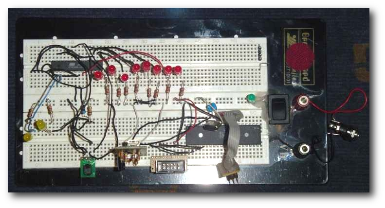Ein Steckbrett mit Aufbau.
Programmiergerät
Zum Übertragen der kompilierten Programme auf den Mikrocontroller braucht man noch ein Programmiergerät bzw. -adapter. Der Vorgang wird auch „Flashen“ genannt, da das Programm in den Flashspeicher des MC geschrieben wird. Die einfachste, aber auch gefährlichste Möglichkeit (siehe Hinweis unten), ist ein Druckerkabel zu präparieren. Diese Schaltung wird SP12 genannt, die Pinbelegung wurde so gewählt, dass man den Adapter direkt neben einen ATMega16 in ein Steckbrett stecken kann. Man kann sich ein aufschraubbares Druckerkabel kaufen und das Kabel nach der unten stehenden Verschaltung an den Parallelportstecker löten. Der Parallelportstecker heißt oft auch „D-SUB25 männlich“. Für die andere Seite kann eine Stiftleiste genommen werden. Am besten alles mit Heißkleber fixieren damit kein Kurzschluss entstehen kann. 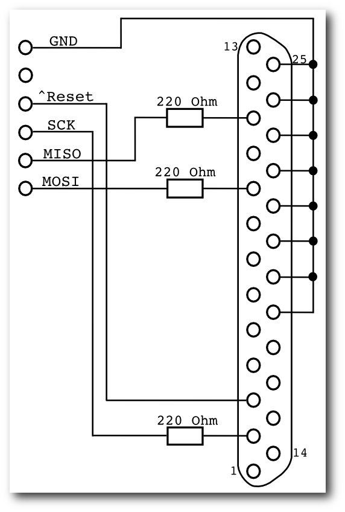Verschaltung des Druckerkabels.
Hinweis: Der beschriebene Parallelport-Programmieradapter sollte mit Vorsicht verwendet werden, da bei einem Kurzschluss der Parallelport des Rechners zerstört werden kann (der restlichen Hardware passiert in der Regel nichts). Dafür ist er aber sehr preiswert und schnell zusammengelötet. Ich habe eine Zeit lang mit dem Adapter gearbeitet und meine ersten Schritte mit Mikrocontrollern damit gemacht, ohne dass irgendetwas passiert ist. Wer keinen Druckeranschluss mehr besitzt oder diese Möglichkeit aus Sicherheitsgründen meidet, der kann sich auch ein AVR-Programmiergerät für die serielle Schnittstelle oder USB bestellen. Schließlich gibt es noch die Möglichkeit, sich ein Programmiergerät für die serielle Schnittstelle oder USB selbst zu basteln. Dabei werden die meisten Anfänger jedoch das Henne-Ei-Problem bekommen, denn man braucht ein Programmiergerät, um den Mikrocontroller des Programmiergeräts zu flashen. Der AVR910 von Klaus Leidinger (Link) ist sehr praktisch. Man kann ihn recht leicht nachbauen und entweder an der seriellen Schnittstelle oder mit einem USB-RS232-Wandler am USB-Port betreiben (RS232 ist die Schnittstellenbezeichnung des seriellen Ports). Wer den verwendeten AVR nicht selbst flashen kann, kann ihn in den (auf der Homepage von Klaus Leidinger) angegebenen Shops erwerben. Dort bekommt man auch die Platinen zum Löten und fertige Programmieradapter.
Benötigte Software
Neben einem beliebigen Texteditor braucht man den Compiler gcc-avr und die Bibliothek libc-avr sowie die binutils-avr. Zum Übertragen der Programme empfiehlt sich das Programm avrdude. Diese sogenannte Toolchain ist auf den meisten Distributionen über die Paketverwaltung verfügbar. Unter Debian und Ubuntu heißen die Pakete: gcc-avr, avr-libc, binutils-avr und avrdude. Bei openSUSE installiert man avr-libc, cross-avr-gcc, cross-avr-binutils und avrdude. Gentoo bietet ein Shellscript an, mit dem die Toolchain erstellt werden kann. Dafür nutzt man folgende Kommandos:# emerge crossdev # crossdev --target avrBei Problemen kann man auch statt des zweiten Befehls
# crossdev -t avr --without-headersversuchen. Sind auf der verwendeten Distribution keine Pakete für die AVR-Toolchain verfügbar (am besten mal nach AVR mit dem Paketmanager suchen) oder möchte man die aktuellsten Versionen haben, kann man die Toolchain auch selbst kompilieren. Eine sehr schöne Anleitung dazu gibt es auf RoboterNETZ (Link).
Beispiel
Wenn die Hardware vorhanden und die Toolchain installiert ist, kann man mit einem „Hello World“-Programm beginnen. Da es keine Konsole gibt, sieht ein „Hello World“ bei Mikrocontrollern etwas anders aus: Man bringt eine LED zum Blinken. Hier ist ein C-Code, der eine LED an Port D zum Blinken bringt. Man schreibt ihn einfach so in eine Datei und speichert sie als blink.c.
#include <avr/io.h>
void warte(void) {
unsigned int i,j; // Schleifenvariablen
for( i = 0; i < 500; i++ ) {
j = 100;
while( j > 0 ) { j--; }
}
}
int main(void) {
DDRD = 0x01; // Durch diese Anweisung wird der erste Pin von PORTD auf "Ausgabe" gesetzt
PORTD = 0; // Hiermit wird PORTD auf 0 gesetzt
while(1) { // Eine Endlosschleife ist Bestandteil von (fast) jedem MC Programm
PORTD = ~PORTD; // Diese Anweisung invertiert den PORTD
warte(); //Funktionsaufruf
}
}
Zuerst wird eine Headerdatei eingebunden, die sich um die Ein- und Ausgaben kümmert. Als nächstes wird eine Wartefunktion definiert, da man beim Blinken mit einer Frequenz von 1 MHz nur eine leuchtende LED sehen würde. Durch die Wartefunktion lässt man einfach nur etwas Zeit verstreichen. DDRD ist das „Data Direction Register“ des Ports D, welches definiert, ob ein Pin zur Ein- oder Ausgabe genutzt werden soll. Es ist acht Bit groß, wobei jedes Bit für den entsprechenden Pin des Ports zuständig ist. Zusammen mit dem Register PORTD, welches zum Schreiben und Lesen des Ports durch das Programm verwendet wird, kann auch Tristate-Funktionalität erreicht werden. Mehr dazu steht im Datenblatt auf Seite 51-52 (Link). Im Beispielcode wird der Pin 0 des Ports D auf Ausgabe gesetzt. Indem man das Register PORTD auf einen Wert setzt, werden die entsprechenden Pins am Ausgang auf diesen Wert (im Binärformat) gesetzt (wenn auch die entsprechenden DDRD-Bits gesetzt sind).
Die Endlosschleife ist obligatorisch für Mikrocontroller-Programme. Man möchte ja nicht, dass der Mikrocontroller nach einer Zeit aufhört zu arbeiten. In der Schleife wird PORTD invertiert und dann einige Zeit gewartet bis er wieder invertiert wird. Dadurch blinkt die an PORTA angeschlossene LED.
Dieses Programm kompiliert man nun mittels
$ avr-gcc -O0 -mmcu=atmega16 blink.c -o foo.elf $ avr-objcopy -O ihex -j .text -j .data foo.elf blink.hexdie Option -O0 verhindert, dass die Warteschleife wegoptimiert wird. Man kann statt dieser Schleife auch vorgefertigte Funktionen nutzen, die eine einstellbare Zeit warten. Eine andere Möglichkeit ist, die Schleifenvariablen der Wartefunktion mit volatile zu definieren, dann kann man auch optimieren.
Verschaltung der Hardware
Wo die Pins des ATMega16 liegen, kann man dem Datenblatt auf Seite 2 entnehmen. Der Chip hat eine kleine Einkerbung, die auch im Datenblatt abgebildet ist. Daran kann man erkennen, wo welche Pins liegen. 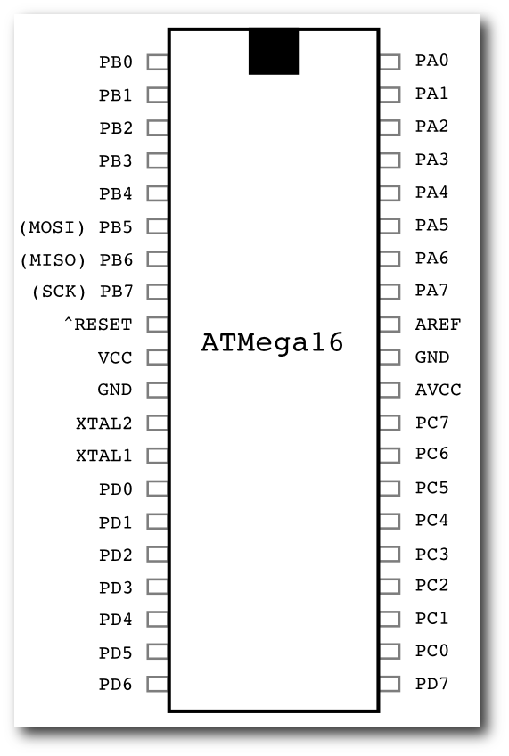Die wichtigsten Pins des ATMega16.
Man verbindet die entsprechenden Pins des ATMega16 mit VCC und GND der Stromversorgung, PD0 (Pin 0 des Ports D) mit dem Pluspol der LED (der Minuspol ist der, wo der Rand des Plastiks etwas abgeflacht ist) und den Minuspol der LED mit einem 220-Ohm-Widerstand. Dieser wird mit der Masse verbunden. Man kann nun noch einen 10nF-Kondensator zwischen VCC und GND schalten und den Reset-Eingang des MC über einen 10k-Widerstand mit VCC verbinden. Diese Schritte sind jedoch nicht zwingend nötig, da meiner Erfahrung nach die AVR-Mikrocontroller recht robust sind. 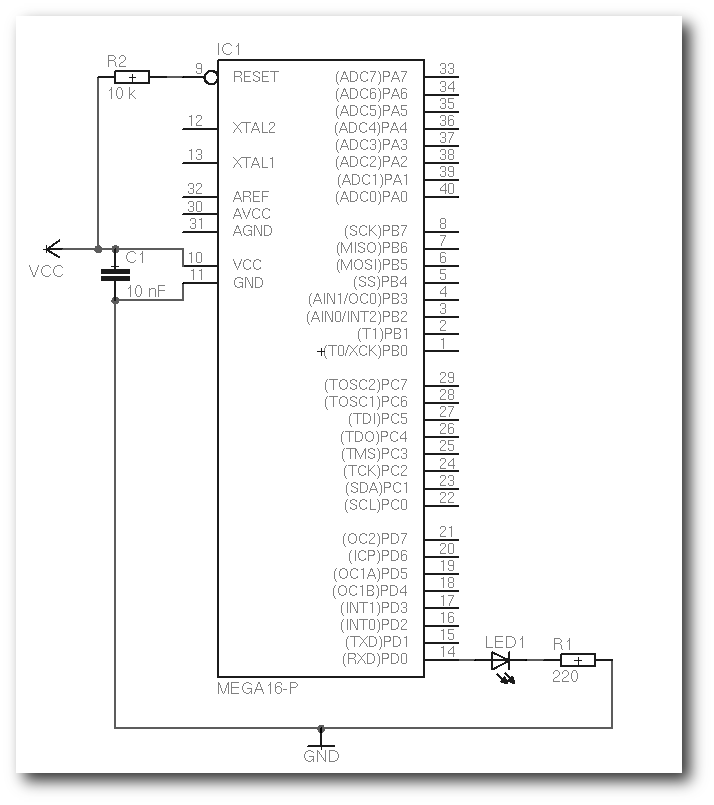
Verschaltung des Beispiels.
Nun schließt man den Programmieradapter an den Mikrocontroller an. Dabei müssen die Bezeichnungen der Pins übereinstimmen, also MISO zu MISO und SCK zu SCK etc. Mit dem folgendem Befehl kann man nun den Mikrocontroller flashen:
$ avrdude -p m16 -c sp12 -e -U blink.hexOder falls man den avr910 verwendet:
$ avrdude -p m16 -c avr910 -e -U blink.hexEs kann sein, dass der Mikrocontroller beim SP12 nicht erkannt wird. In diesem Fall kann man mit der Option -i den Takt drosseln:
$ avrdude -p m16 -c sp12 -i 10 -e -U blink.hexAnsonsten sollte der Parallelport im BIOS auf „ECP“ oder - falls möglich - auf „ECP+EPP“ gestellt werden. Die Rechte der entsprechenden Geräte (/dev/parport0 für SP12 und /dev/ttyUSB0 für avr910) müssen unter Umständen mittels
# chmod a+rw /dev/parport0angepasst werden. Nun sollte die LED blinken.
Schlussbemerkung
Viele weitere Informationen sowie ein großes Forum findet man bei Mikrocontroller.net (Link). Empfehlenswert ist vor allem das AVR-GCC-Tutorial (Link). Links- http://de.wikipedia.org/wiki/RISC
- http://de.wikipedia.org/wiki/Harvard-Architektur
- http://zinformatik.de/bilder_avr_artikel.html
- http://www.klaus-leidinger.de/mp/Mikrocontroller/AVR-Prog/AVR-Programmer.html
- http://www.roboternetz.de/wissen/index.php/Avr-gcc_und_avrdude_installieren
- http://www.atmel.com/dyn/resources/prod_documents/doc2466.pdf
- http://www.mikrocontroller.net
- http://www.mikrocontroller.net/articles/AVR-GCC-Tutorial
| Autoreninformation |
| Marcel Jakobs kam das erste Mal vor drei Jahren in seinem Studium mit Mikrocontrollern in Kontakt. Seitdem beschäftigt er sich immer wieder gerne mit ihnen. Dabei darf jedoch sein Lieblingsbetriebssystem Linux nicht fehlen. |
Zum Index
ECDL/ICDL wagt sich an OpenOffice.org
von Maik Uhlig Die ECDL (Link) (European Computer Driving License) ist ein anerkanntes Zertifikat zum Nachweis grundlegender Computerkenntnisse. Sie ist das Ergebnis eines Projektes der Europäischen Union in Zusammenarbeit mit dem Council of European Professional Informatics Societies (CEPIS) (Link).Hintergrund: ECDL/ICDL
Verantwortlich für die Umsetzung in Deutschland ist die Dienstleistungsgesellschaft für Informatik (DLGI (Link)) in Bonn. Ziel war es, eine Qualifikation zu schaffen, mit welcher man IT-Grundkenntnisse nachweisen kann. Doch Zertifikate dazu gibt es in Massen; und wer wollte entscheiden, ob nun ein VHS-Zertfikat, ein IHK-Zertifikat oder die Teilnahmebescheinigung an einem vierwöchigen Grundkurs bei einem freien Bildungsträger die jeweils geforderten Kenntnisse nachweist? Da der ECDL einem international gültigen Lehrplan folgt und die Prüfung zentral abgenommen wird, wurde ein anerkannter Standard geschaffen. Sogar erste Universitäten verlangen den ECDL bei der Immatrikulation. Es ist leicht zu erkennen, dass die Zielgruppe des ECDL/ICDL all diejenigen sind, die ihre Grundkenntnisse im IT-Bereich nachweisen wollen. Selbst eine Alterseinschränkung wäre hier nicht möglich, von Schulveranstaltungen bis Seniorenkurse ist alles vertreten.Der Syllabus
Der Lehrplan wird als Syllabus bezeichnet und befindet sich momentan in der Version 5, er wird also kontinuierlich weiterentwickelt und kann als PDF-Dokument (Link) eingesehen werden. Hier werden alle Bereiche neutral aufgelistet, die für das Bestehen einer Prüfung relevant sind. Neutral bedeutet, dass z. B. danach gefragt wird, wie ein markierter Text fett gedruckt wird. Dabei ist es egal, ob mit Microsoft Office oder OpenOffice.org, es geht um die Textverarbeitung selbst. Mittlerweile ist der ECDL groß geworden und das Logo wurde durch die Abkürzung ICDL (International Computer Driving License) erweitert und spiegelt wider, dass diese Prüfung international in 148 Ländern anerkannt wird. Und weil in so vielen Ländern die Wahrscheinlichkeit hoch ist, dass es neben Microsoft Office auch eine andere Bürosuite gibt, hat jetzt OpenOffice.org Einzug in die Prüfungen gefunden. Damit bietet die ECDL/ICDL-Prüfung ein anerkanntes Zertifikat für OpenOffice.org. Noch nicht einmal Sun (Link) selbst zertifiziert die eigene Bürosuite.Die Prüfung
Wer die Prüfung ablegen möchte, muss eine sogenannte Skill-Card erwerben. Die Skill-Card kostet ca. 40 Euro und gilt als Dokument für die einzelnen Prüfungen. Insgesamt werden 4-7 Prüfungen abgelegt, je nachdem welcher Abschluss angestrebt wird. Bei vier bestandenen Prüfungen wird ein Start-Zertifikat ausgestellt. Wer dagegen alle sieben Teilprüfungen besteht, erhält das Core-Zertifikat. Jede einzelne Prüfung schlägt mit ungefähr 15 Euro zu Buche und kann beliebig oft wiederholt werden. Die Preise variieren etwas, da die einzelnen Prüfzentren nur einen Richtpreis für die Durchführung erhalten. Anzumerken ist noch, dass die Skill-Card zum Zertifikat gehört und bei Vorlage über einen bestimmten Code nachgeprüft werden kann, ob die Skill-Card echt ist.Die Module
Ein Modul ist eine Teilprüfung. Man kann sich das wie in der Schule vorstellen. Während des Schuljahres wird in sieben Fächern je eine Arbeit geschrieben. Die bestandenen Prüfungen kommen dann auf die Skill-Card (das Zeugnis) und bei mindestens vier bestandenen Fächern ist das Schuljahr geschafft. Wer alle sieben Fächer besteht, bekommt noch einen Vermerk (Core). Im Gegensatz zur Schule kann jedoch frei gewählt werden, wann und wie oft welche Prüfung abgelegt wird. Auch die Reihenfolge ist frei wählbar, das siebte Modul kann beispielsweise vor dem zweiten Modul abgelegt werden.Modul 1: IT-Grundlagen
Allgemeines zur Informationstechnologie: Hier wird grundsätzliches Wissen abgefragt, beispielsweise der Unterschied zwischen RAM und ROM, aber auch tiefer reichende Fragen zu Themen wie RSS-Feed und Podcast tauchen auf.Modul 2: Betriebssysteme
Leider gibt es nur die Auswahl zwischen den einzelnen Windows-Versionen. Ubuntu, SUSE oder andere linuxbasierende Betriebssysteme werden nicht angeboten. Hier geht es um grundsätzliche Fragen zum Papierkorb, zur Dateiverwaltung, zum Kopieren, zu Pfaden und wieder etwas weiter reichende Fragen zur Installation eines Druckers.Modul 3: Textverarbeitung
Hier steht neben den verschiedenen Word-Versionen Writer für die Prüfung zur Verfügung. Neben grundsätzlichen Fragen zum Programm (Menüleiste, Symbolleiste) wird hier auch Wissen zum Thema Seriendruck verlangt und sehr viel zum Thema Formatierung.Modul 4: Tabellenkalkulation
Neben den verschiedenen Excel-Versionen wird Calc für die Prüfung angeboten. Auch hier wird grundsätzliches Wissen zum Programm abgefragt. Neben dem Wissen, wie mit Zellen, Tabellen und Formeln umgegangen wird, werden auch einige Funktionen abgefragt: Summe, Minimum, Maximum und Anzahl. Diagramme und die Formatierung der Zellen sind auch Bestandteil.Modul 5: Datenbanken
Der Klassiker ist natürlich Access und auch hier gibt es verschiedene Versionen. Aber auch Base hat jetzt den Einzug gefunden und kann für die Prüfung ausgewählt werden. Diese Prüfung ist schwierig, da das Grundverständnis für Datenbanken vorhanden sein muss. Neben allgemeinen Fragen zu Tabellen, Formularen, Abfragen und Berichten wird auch Grundwissen zu Schlüsseln, Indizes, Integrität und Feldtypen geprüft.Modul 6: Präsentationen
Auch PowerPoint wird in verschiedenen Versionen zur Auswahl gegeben. Impress wird aber auch angeboten. Neben wiederum grundsätzlichen Fragen ist das Wissen über Folien, Master, Objekte, Schemen, Animationen und Ebenen wichtig.Modul 7: Internet und Kommunikation
Jetzt wird es spannend, denn neben Outlook und dem Internet Explorer wird doch tatsächlich Thunderbird und Firefox für die Prüfung zur Verfügung gestellt. Neben allgemeinen Bedienungsfragen und theoretischen Grundlagen wie Domain, URL und www wird hier auch ein Schwerpunkt auf die Sicherheit gelegt. Firewall, Cookies, Anhänge, Lesezeichen und Suchmaschinen sind nur einige Themen.Prüfungstipps
Die Module 3-6 sind also OpenOffice.org-Module. Aus eigener Erfahrung ist zu sagen, dass die Vorbereitung für Writer und Calc relativ einfach ist. Der Syllabus schreibt genau vor, was gekonnt werden muss. Wenn das mit dem entsprechenden Programm funktioniert und die Alternativen (Symbole, Rechte-Maustaste, Shortcuts) bekannt sind, kann nichts schiefgehen. Immerhin müssen „nur“ 75 % der 36 Fragen in 35 Minuten richtig beantwortet werden. Bei Impress sieht es ein wenig anders aus, denn das Gespür für das Programm sollte vorhanden sein. Es nützt hier nichts, einfach nur die Menüeinträge auswendig zu lernen. Der Master muss verstanden werden und die Struktur einer Präsentation selbst. Aber auch dann ist die Prüfung kein großes Hindernis. Base verlangt jedoch tiefe Einblicke in Datenbanken. Einerseits gibt es Fragen, die jeder Sextaner beantworten kann, ohne jemals das Wort Datenbanken gehört zu haben, andererseits ist es selbst für Azubis in IT-Berufen und IT-Fachleute nicht selbstverständlich, das Erfragte zu wissen. Hinzu kommt, dass Base selbst schon ein Programm für sich ist und Access-Anwender davor zurückschrecken, auf Base zu wechseln, auch wenn OpenOffice.org als solches genutzt wird. Und dann kommen noch Fragen zum Berichtsassistenten, der gar nicht in OpenOffice.org 3.0 vorhanden ist, es sei denn, die entsprechende Erweiterung wurde nachinstalliert. Trotzdem darf man nicht vergessen, dass immerhin ein Viertel aller Fragen versemmelt werden darf und die Prüfung trotzdem bestanden wird. Alles in Allem darf festgehalten werden, dass das ECDL/ICDL-Zertifikat mit OpenOffice.org abgelegt werden kann. Zudem kann anstelle von Base auch IT-Grundlagen oder Internet und Kommunikation als Prüfungsmodul gewählt werden.Ausblick
In den nächsten Ausgaben von freiesMagazin sollen die einzelnen Module inhaltlich näher besprochen und speziell auf die Prüfung hingearbeitet werden.Nachsatz
Leider wird die Aufbauprüfung (Advanced (Link)) nur mit Microsoft Office angeboten. Die in Deutschland für den ECDL/ICDL verantwortliche DLGI in Bonn hat auf Anfrage bestätigt, dass es in naher Zukunft keine Prüfungen mit OpenOffice.org geben wird. Das Angebot, diese Prüfung kostenfrei vorzubereiten, wurde dankend abgelehnt. Auch in Sachen Information kann kein gutes Zeugnis ausgestellt werden. Fragen, wie viele Prüfungen denn nun unter OpenOffice.org abgelegt werden, wurden gar nicht beantwortet, andere Fragen werden mit dem Hinweis abgetan, dass die Prüfungszentren vor Ort zuständig seien. Nun gut, so „open“ ist dann der ECDL wohl doch nicht. Noch nicht ...| Autoreninformation |
| Maik Uhlig ist seit über zwölf Jahren als Schulungsleiter im Bereich Office und Datenbanken tätig. Da er schon vor acht Jahren als Videotrainer eine Lern-CD für den ECDL erstellt hat, ist er schon länger mit der Materie vertraut. |
- http://www.dlgi.de/ecdl/
- http://www.cepis.org
- http://www.dlgi.de
- http://www.dlgi.de/uploads/media/ECDL_Syllabus_5_0_ECDL_DE.pdf
- http://de.sun.com/
- http://www.dlgi.de/ecdl/advanced
- http://de.openoffice.org/
- http://office.microsoft.com/de-de/products/FX100487411031.aspx
Zum Index
Rezension: Just for Fun - The Story of an Accidental Revolutionary
von Dominik Wagenführ Revolutionen werden nicht geboren oder geplant, sie geschehen einfach. So ähnlich lauten die einleitenden Worte des Autors David Diamond, der die Biographie von Linux-Erfinder Linus Torvalds und die Entstehungsgeschichte von Linux mit geschrieben hat. Basierend auf persönlichen Aussagen und E-Mails von Torvalds, findet man auf den gut 250 Seiten alles Wissenswerte zum Thema Linux und der Person Linus Torvalds. Dass das Buch Spaß machen soll, merkt man bereits in der Einführung des Buches, in der eine E-Mail von Torvalds an Diamond veröffentlicht ist. Hier stellt sich Torvalds nach langer Bedenkzeit endlich dem Thema einer Biographie - aber nur, wenn das Schreiben und spätere Lesen Spaß macht. Und in der Tat tut es das. Wer sich das Vorwort durchliest und zwischen den Zeilen des fundamentalen und philosophischen Gespräches zwischen Torvalds und Diamonds (was interessanterweise sehr oft um das Thema Sex kreist) die Bemerkungen von Tove (Linus Torvalds' Frau) und seinen Kindern liest, muss einfach grinsen. Der Text ist direkt aus dem Leben der beiden befreundeten Autoren gegriffen und trägt dieses Gefühl auch bis zum Ende des Buches. Neben Torvalds Erzählung finden sich immer wieder private Einschnitte von Diamond zwischen den Kapiteln. In Kapitel 1 „Birth of a Nerd“ wird auf die Kindheit und Jugend von Linus Torvalds eingangen. Man erfährt mehr über seine Familie und seine ersten Erfahrungen mit einem Computer (dem Commodore VIC-20 seines Großvaters). Das Kapitel 2 „Birth of an Operating System“ befasst sich dementsprechend mit der Entstehung von Linux und bereits auf der Kapitelseite wird vor der benutzen Geek-Sprache auf den folgenden 100 Seiten gewarnt. Hier wird auch auf Torvalds' ersten eigenen Computer (ein Sinclair QL) und die Schwierigkeiten mit dem proprietären Betriebsystem Q-DOS hingewiesen. Dies tauschte Torvalds später gegen Minix (entwickelt von Andrew S. Tanenbaum) aus, was am 25. August 1991 zu der E-Mail führte (Link), die den Grundstein der Linux-Entwicklung legte. In dem Kapitel erfährt man auch mehr über den Streit zwischen Torvalds und Tanenbaum (siehe auch „Torvalds und Tanenbaum – der ewige Streit“, freiesMagazin 09/2006 (Link)). Im letzten Kapitel „King of the Ball“ wird sich mit der Weiterentwicklung von Linux beschäftigt, sowie der Unterschied zwischen den Begriffen „Free Software“ und „Open Source“ erklärt. Daneben kommen auch die Themen „Intellectual Property“ und Patente zur Sprache. Alles in allem ist „Just for Fun“ ein beeindruckendes Buch, weil sich Torvalds nicht als Weltenretter sondern als Mensch darstellt - mit all seinen Fehlern. Das macht ihn sympatisch und erklärt teilweise wohl auch den Erfolg von Linux. Hinweis: Das Buch liegt in Englisch vor, da Übersetzungen oft sehr viel vom dem zerstören, was ein Autor ursprünglich wirklich aussagen wollte.| Buchinformationen | |
| Titel | Just for Fun - The Story of an Accidental Revolutionary |
| Autor | Linus Torvalds und David Diamond |
| Verlag | Harper Collins, 2002 |
| Umfang | 262 Seiten, Paperback |
| ISBN | 978-0066620732 |
| Preis | 14,95 US-Dollar (ca. 11 Euro) |
| Autoreninformation |
| Dominik Wagenführ hält Linus Torvalds sicher nicht für den Heiland der gesamten Computerwelt. Umso mehr war er auf die Selbstdarstellung des Linux-Erfinders gespannt. |
Zum Index
Das Ende des Programmierwettbewerbs
Der am 1. April 2009 gestartete Programmierwettbewerb (Link) wurde mit zwei Wochen Verlängerung am 24. Mai 2009 erfolgreich beendet (Link). Zahlreiche Vollzeit- und Hobby-Programmierer haben sich hingesetzt und eine KI (Künstliche Intelligenz) für den Bejeweled-Klon geschrieben, sodass verschiedene Lösungen in den verschiedensten Programmiersprachen bei uns eingereicht wurden. Dieser Artikel soll die Lösungen näher beschreiben - und vor allem natürlich den Gewinner des 25-Euro-Buchgutscheins bekannt geben. Zuerst möchten wir uns bei allen Teilnehmern bedanken, die den Wettbewerb mit ihren Lösungen überhaupt möglich gemacht haben, denn nicht immer ist eine Teilnahme der Community bei solchen Aktionen selbstverständlich. Zusätzlich bedanken wir uns auch für das Lob der Teilnehmer, welches wir für die gute Ausarbeitung und Organisation des Programmierwettbewerbs erhalten haben.Die Aufgabe
Die Aufgabe des Programmierwettbewerbs (Link) soll noch einmal ganz kurz angerissen werden: Auf einem 10x10 Spielfeld mit verschiedenfarbigen Steinen und Bomben tauschen zwei Spieler abwechselnd Steine auf benachbarten Feldern, um so drei oder mehr gleichartige Steine bzw. Bomben in eine Reihe zu bringen. Diese verursachen dann Schaden beim gegnerischen Spieler. Gespielt wird, bis einer der beiden Spieler keine Lebenspunkte mehr hat.Die prinzipielle Lösung
Alle eingereichten Lösungen funktionierten nach einem ähnlichen Prinzip:- Suche alle möglichen Kombinationen zweier benachbarter Felder, die Punkte bzw. gegnerischen Schaden bringen.
- Bewerte jeder dieser Kombinationen und wähle die mit dem größten Wert als bestmöglichen Zug aus.
- Wenn zwei Steine getauscht wurden und die entstandene Reihe in Punkte oder Schaden umgewandelt wurde, rutschen alle Steine oberhalb nach unten und verursachen bei günstiger Konstellation wieder eine zusammenhängende Reihe gleichartiger Steine, die erneut Punkte bringen oder im Fall von Bomben Schaden verursachen. Dies nennt man „Kaskade“.
- Nach der Berechnung der eigenen Punkte kann man auch zusätzlich den bestmöglichen gegnerischen Zug berechnen und dessen Wert abziehen, um zu überprüfen, ob man mit dem eigenen Zug dem Gegner einen Vorteil verschafft. Dies wiederum kann man erneut fortsetzen und den eigenen nachfolgenden Zug vorberechnen. Auf diese Art entsteht ein Spielbaum mit zahlreichen Abzweigungen, bei dem man aber immer den bestmöglichen Zug auswählt - natürlich unter der Voraussetzung, dass der Gegner ebenfalls optimal spielt und vor allem die gleiche Bewertungsfunktion benutzt.
Die Lösungen kurz vorgestellt
Es sollen nun alle Lösungen mitsamt den Programmierern kurz vorgestellt werden.apensiv
Der Teilnehmer „apensiv“ möchte anonym bleiben, was wir natürlich akzeptieren. apensiv programmiert seit vier Jahren, wobei er das letzte Jahr hauptsächlich mit Perl (Link) verbracht hat, in dem auch seine KI geschrieben ist. Für die Umsetzung hat er circa vier bis fünf Stunden gebraucht und dies als Möglichkeit genutzt, sich in Perl weiterzubilden. Seine KI prüft bei allen Feldern, welche Tauschmöglichkeiten es gibt und wählt dann in Abhängigkeit der Spielerdaten einen geeigneten Zug aus. Die KI wird unter der Creative-Commons-Lizenz „Namensnennung-Weitergabe unter gleichen Bedingungen 3.0 Deutschland“ (CC-BY-SA-3.0) (Link) veröffentlicht. Download der KI von apensivJoachim Breitner
Joachim Breitner programmiert seit gut zehn Jahren und hat sich für eine Lösung in Haskell (Link) entschieden. Die Gründe dafür sind, dass das „Programmieren mehr Spaß macht als in anderen Programmiersprachen; zum Beispiel weil man weniger Code für den gleichen Effekt schreiben muss und das Typsystem einem Denk- und Debug-Arbeit abnimmt.“ Für die Umsetzung hat er circa zwei komplette Abende benötigt und vor allem wegen des Spaßes an der Haskell-Programmierung teilgenommen. Joachim Breitners KI setzt alle oben erwähnten Lösungsmöglichkeiten um. Für die Durchsuchung des Spielbaums nutzt er eine 3-Schritt-tiefe Alpha-Beta-Suche mithilfe des Haskell-Library game-tree (Link). Die KI wird unter der GNU General Public License 2.0 (Link) veröffentlicht. Download der KI von Joachim BreitnerFlorian Eitel
Florian Eitel programmiert seit neun Jahren und hat sich für eine Lösung in Ruby (Link) entschieden, weil sich damit „Aufgaben kompakt und elegant“ lösen lassen. Die Umsetzung hat ein bis zwei Tage in Anspruch genommen. Mitgemacht hat Florian Eitel vorrangig aus Spaß am Programmieren. Seine KI berechnet alle möglichen Züge und deren Auswirkungen (Kaskaden). Gemäß einer Regeldatei wird dann der beste Zug gewählt. Laut eigener Aussage kam die Entwicklung dieser Regeln aber viel zu kurz. Florian Eitels KI wird unter der GNU General Public License 3.0 (Link) veröffentlicht. Download der KI von Florian EitelMario Fuest
Mario Fuest programmiert seit circa drei Jahren und hat sich von Logo über Java und C++ bis zu Python (Link) vorgearbeitet, in dem seine KI auch programmiert ist. Die Umsetzung hat nach eigenen Angaben „fast die ganzen Osterferien, fast alle Wochenenden, einige Abende und die letzte Woche“ gedauert, was eine beachtliche Zeit ist. Mario Fuest hat am Wettbewerb teilgenommen, weil er durch dieses Projekt etwas mehr Python lernen konnte. Die KI arbeitet etwas anders als alle anderen im Feld. Sie findet zwar auch alle möglichen Züge und beachtet Kaskaden, die Bewertungsfunktion speichert aber auch, welche Steine der Gegner sammelt und versucht, diese „wegzuschnappen“, damit darüber kein Schaden entstehen kann. Für die fünf bestbewertesten Züge wird auch der Wert für den nachfolgenden Zug des Gegners berechnet und mit einem Faktor 1.2 vom eigenen Wert abgezogen. Die Kombination mit dem höchsten verbleibenden Wert wird dann gewählt. Mario Fuests KI wird unter der GNU General Public License 3.0 (Link) veröffentlicht. Download der KI von Mario FuestFlorian Golemo
Florian Golemo beschäftigt sich seit sechs bis sieben Jahren mit der Programmierung. Er hat mit Basic angefangen und sich dann langsam zum Webprogrammierer in PHP und Java hochgearbeitet. Gelegentlich erstellt er auch kleinere Anwendungen auf Basis von C++ mit Qt oder Python (bzw. PyQt4). In der letztgenannten Sprache ist seine KI auch programmiert. Für die Umsetzung hat er einen „nicht so sonnigen Nachmittag“ bei vier bis fünf Stunden Arbeit gebraucht. Mit der Teilnahme am Wettbewerb konnte Florian Golemo sein Interesse an KIs fröhnen und gleichzeitig sein Wissen in Python erweitern. Florian Golemos KI erfüllt die KI-Mindestbedingung und sucht aus allen möglichen Tauschmöglichkeiten anhand einer einfachen Bewertungsfunktion den besten Zug aus. Ein Wert speichert zwar auch, ob es sich bei einem Zug um einen Angriff, eine Verteidigung oder um pures Sammelverhalten dreht, das Ergebnis fließt aber nicht in die Entscheidung mit ein. Auf Kaskaden wird nicht eingegangen und es werden auch keine Züge im Voraus berechnet. Seine KI wird unter der GNU Lesser General Public License 3.0 (Link) veröffentlicht. Download der KI von Florian GolemoRobert Jackermeier
Robert Jackermeier programmiert seit ungefähr zwei Jahren mit seinem Umstieg auf Linux. Seine Lösung wurde in Perl umgesetzt, da es „die einzige Sprache ist, die [er] gut genug beherrscht, um solche einigermaßen komplexen Projekte umsetzen zu können.“ Für die Realisierung hat er einige Abende gebraucht. Mit der Teilnahme am Wettbewerb wollte er vor allem seine Perl-Fähigkeiten auffrischen und etwas erweitern. Robert Jackermeiers KI arbeitet mit Kaskaden, aber ohne Vorausberechnungen. Seine KI wird unter der GNU General Public License 3.0 (Link) veröffentlicht. Download der KI von Robert JackermeierMarcus Kroschinsky
Marcus Kroschinsky programmiert seit circa neun Jahren. Für Python hat er sich entschieden, weil er „wenig Erfahrung mit Python [hatte], wobei [er sich] eine Art Lerneffekt erhoffte.“ Zusätzlich „bot die Sprache auch einige praktische Funktionalitäten, gerade was das Verwalten von Listen angeht.“ Das Grundkonzept wurde nach eigenen Aussagen in einigen Kaffeepausen festgelegt, die Umsetzung selbst umfasste dann circa 50 Stunden Programmiertätigkeit. Am Wettbewerb hat Marcus Kroschinsky teilgenommen, da er so eine weitere Programmiersprache lernen und sich auf diesem Weg auch gleich mit anderen messen konnte. Seine aktuelle KI rägt den Namen Finis und ist Nachfolger von Deliculus und Tempus. Er beachtet Kaskaden und schlägt den bestmöglichen Folgezug des Gegners als Malus auf die eigenen Punkte auf, um so den besten eigenen Zug zu finden. Da bei der Umsetzung des Spiels die Zufälligkeit der nachrückenden Steine eine große Rolle spielt, hat Marcus Kroschinsky auf eine Orientierung am Gegnerverhalten (Erkennen der gegnerischen Taktik und Reaktion darauf) verzichtet. Finis wird unter der 3-Klausel-BSD-Lizenz (Link) veröffentlicht. Download der KI von Marcus KroschinskyMomme Maraun
Momme Maraun programmiert seit 29 Jahren und zählt damit zu den Programmier-Oldies unter den Teilnehmern. Da ihm sein „sonstiger Favorit Java zu langsam erschien“ und er bereits Erfahrungen in C++ hatte, hat er sich für eine Weiterentwicklung der Referenz-KI in C++ (Link) entschieden. Für die Umsetzung hat Momme Maraun sechs bis sieben Stunden gebraucht. Grund für die Teilnahme waren Zeit und Lust und weil er bereits andere KIs für „Kürzeste Wegfindung“ und „5 gewinnt“ geschrieben hat. Die KI hat keine Bewertungsfunktion, sondern es werden alle Möglichkeiten gesucht und dann das erste Vorkommen in der Reihenfolge Bombe, Schild, rote Steine, gelbe Steine, grüne Steine, lila Steine als bestmöglicher Zug benutzt. Dabei wird eine Kombination weit unten gesucht, damit möglichst viele neue Steine nachrutschen. Es gibt aber keine Beachtung von Kaskaden und auch keine Vorausberechnung von Zügen. Momme Marauns KI wird unter der GNU General Public License 3.0 (Link) veröffentlicht. Download der KI von Momme MaraunFlorian Reichel
Florian Reichel programmiert seit rund drei Jahren und hat sich aufgrund „der Schnelligkeit (beim Schreiben des Programmes), Flexibilität, Plattformunabhängigkeit und Einfachheit“ für Python entschieden. Mitgemacht hat er aus Spaß. Die KI sucht zuerst alle möglichen Kombinationen und wählt dann anhand einer variablen Liste mit Präferenzen den bestmöglichen Zug aus. Auf Kaskaden wird nicht eingegangen und es gibt auch keine Vorausberechnung der Züge. Florian Reichels KI wird unter der 3-Klausel-BSD-Lizenz (Link) veröffentlicht. Download der KI von Florian ReichelFrank Roth
Frank Roth programmiert seit acht Jahren und hat die Referenz-KI in C++ als Vorlage benutzt, da „man C++ nicht oft genug üben“ kann und es „wohl auch eine der effizientesten Programmiersprachen im Feld“ ist. In die Umsetzung hat er circa 30 Stunden investiert. Motivation für eine Teilnahme am Wettbewerb war der Wunsch, eine eigene KI für ein simples Programm zu schreiben, wobei er nicht nur für sich selbst eine Lösung umsetzen wollte. Die KI ermittelt die beste erlaubte Tauschposition für verschiedene Ziele (zum Beispiel größter Bombenschaden oder Ähnliches). Dabei wird auch das Nachrutschen von sichtbaren Steinen berücksichtigt. Weiterhin kennt die KI drei Stufen der Aggressivität, welche sie entsprechend ihren Lebenspunkten und Schild im Verhältnis zum Gegner auswählt. Die KI wird unter der GNU General Public License 3.0 (Link) veröffentlicht. Download der KI von Frank RothMichael Schulz
Michael Schulz hat seine ersten Gehversuche vor 15 Jahren mit Basic auf einem Commodore 64 gemacht. Ernsthaft zu Programmieren begann er vor neun Jahren. Python wurde als Programmiersprache gewählt, da er sich „sowieso gerade in die Sprache und vor allem die Standard-Librarys einarbeitet.“ Außerdem hat seine bisherige Erfahrung gezeigt, „dass man mit Python sehr schnell an Resultate kommt.“ Für die Umsetzung hat Michael Schulz circa 20 bis 30 Stunden benötigt. Er hat teilgenommen, weil ihm die Diskussion und Lösungserarbeitung mit einem Kollegen, der auch am Wettbewerb teilgenommen hat, viel Spaß machte. Die KI namens Xenophon sucht alle möglichen Züge und errechnet, mit zusätzlicher Abhängigkeit von der besten Zugmöglichkeit des Gegners, die beste Wertigkeit für sich. Es wird also ein Schritt in die Zukunft geschaut. Die KI wird unter der Boost Software License (Link) veröffentlicht. Download der KI von Michael SchulzWerner Ziegelwanger
Werner Ziegelwanger programmiert seit 1997 (damals Turbo Pascal), hat sich aber für eine Umsetzung in C++ entschieden, da die Referenz-KI als Vorlage in dieser Sprache programmiert war. Die Umsetzung dauerte circa vier bis fünf Stunden, wobei fünf verschiedene KIs entstanden sind. Werner Ziegelwanger nahm am Wettbewerb teil, weil er sich seit langem für Spieleprogrammierung und KI-Systeme interessiert. Die KI namens Meduris bewertet die ersten 20 möglichen Züge, beachtet aber keine Kaskadierung. Als Bewertungsgrundlage gilt hier, einen großen Schaden zu verursachen, d. h. Bombenfelder haben höhere Priorität als z. B. ein Schild. Danach wird der Zug mit dem größtmöglichen Schaden ausgeführt. Es werden keine Schritte in die Zukunft berechnet. Die KI wird unter der GNU General Public License 3.0 (Link) veröffentlicht. Download der KI von Werner ZiegelwangerThomas Zimmermann
Thomas Zimmermann fing 2000 mit Pascal an zu programmieren, beschäftigt sich inzwischen aber hauptsächlich mit Java (Link), weswegen seine Lösung auch in dieser Sprache umgesetzt wurde. Für die Programmierung der KI hat er circa 36 Stunden investiert. Am Wettbewerb hat Thomas Zimmermann teilgenommen, weil er KIs schon immer interessant fand. Seine KI sucht alle möglichen Züge und bewertet diese, wobei vor allem Bomben eine hohe Bewertung erhalten. Die Werte aller abgeräumten Reihen werden pro Zug aufaddiert und der Zug mit der höchsten Bewertung wird gewählt. Sind zwei Züge gleich gut, wird das restliche Spielfeld auf die gleiche Weise bewertet und dann der Zug gewählt, bei dem der gegnerische Zug die geringere Bewertung hat. Thomas Zimmermanns KI wird unter der GNU General Public License 3.0 (Link) veröffentlicht. Download der KI von Thomas ZimmermannDominik Wagenführ
Dominik Wagenführ ist Initiator des Wettbewerbs und nimmt nur außer Konkurrenz teil. Seine ersten ernsten Programmiererfahrungen hat er vor circa 13 Jahren gesammelt. Inzwischen programmiert er vor allem in der Sprache C++, in welcher seine KI auch umgesetzt wurde. Die Umsetzung ging relativ schnell mit circa 10 Stunden für alle drei Versionen, die auf der Referenz-KI aufbauten. Da im April noch nicht abzusehen war, wie viele Teilnehmer es geben wird, hat er eine KI mit vier Spielstärken programmiert, damit die ersten Wettbewerbsteilnehmer auch irgendetwas zu besiegen hatten. Die vier Spielstärken gliedern sich wie folgt:- 0. Stufe: Die Bewertungsfunktion besteht daraus, dass immer der erste mögliche Zug akzeptiert wird. Dies entspricht der Referenz-KI, die bei Wettbewerbsbeginn mit ausgegeben wurde.
- 1. Stufe: Die Bewertungsfunktion berechnet für jede Tauschkombinationen einen bestimmten Wert in Abhängigkeit der Spielsteine. Bomben werden dabei zum Beispiel sehr hoch bewertet. Die Kombination mit dem höchsten Wert wird gewählt.
- 2. Stufe: Zusätzlich zur ersten Stufe wird auch die Kaskadierung von Zügen mit einberechnet.
- 3. Stufe: Zusätzlich zur zweiten Stufe wird X Runden in die Zukunft geschaut. Per Standard ist X=1 und somit wird der gegnerische bestmögliche Zug von der eigenen Bewertung abgezogen.
Das Bewertungssystem
Zuerst der Hinweis, dass es keinerlei Plus- oder Minuspunkte auf die Umsetzung, also den Code selbst, gab. Das konnte jeder Programmierer halten, wie er wollte. Kommentare im Programm waren erwünscht, aber niemand wurde disqualifiziert, weil irgendwo einer fehlte. Einzig eine freie Lizenz gehörte zu den Bedingungen, damit freiesMagazin den Code auch verteilen darf. Für den Wettbewerb wurden 100 zufällige Spielfelder mit 10x10.000 Steinen generiert, wovon auf den letzten 10x10 Feldern gespielt wird. Die restlichen 9990 Zeilen darüber fallen nach, wenn auf dem Feld Steine durch Zusammenfügen entfernt wurden. Die Vorberechnung stellt sicher, dass bei jedem Spiel die KIs immer die gleiche Ausgangssituation vorgesetzt bekommen. Auf diesen 100 Feldern spielt jede KI gegen jede andere KI und auch gegen sich selbst. Hierbei gibt es eine Hin- und eine Rückrunde, bei der einmal KI 1 anfängt und dann KI 2. Gewinnt KI 1 beide Runden, zählt das Spiel als gewonnen, gewinnt KI 2 beide Runden, ist das Spiel für KI 1 verloren und gewinnt einmal KI 1 und das andere Mal KI 2, gilt das Spiel als unentschieden. Auf diese Art ergeben sich 100 Spiele, für die wie in der Fußball-Bundesliga die Drei-Punkte-Regel angewandt wird, sodass jede KI für einen Sieg drei Punkte und für ein Unentschiedenen einen Punkt erhält. Für Niederlagen gibt es natürlich keine Punkte. Daneben war angedacht, die Zeit, die die KIs zur Berechnung brauchten, mit in die Bewertung einfließen zu lassen (Link). Das sollte dafür sorgen, dass bei gleichstarken KIs mit - aufgrund der Spielmechanik - zufallsabhängigen, aber ähnlichen Ergebnissen, die Zeit eine Rolle spielt. Aber dazu später mehr.Die Spielergebnisse
Und nun ohne Umschweife zu den Ergebnissen. Die folgenden zwei Tabellen zeigen die Anzahl der insgesamt gewonnenen Spiele (S), der Unentschieden (U) und der Niederlagen (N). Dabei gehen auch die Referenz-KIs mit in die Bewertung ein.| Spielergebnisse (alle KIs incl. Referenz) | |||||
| S | U | N | Punkte | ||
| 1. | Kroschinsky | 1209 | 322 | 69 | 3949 |
| 2. | Schulz | 1141 | 358 | 101 | 3781 |
| 3. | Breitner | 1109 | 384 | 107 | 3711 |
| 4. | Wagenführ P3 | 1040 | 379 | 181 | 3499 |
| 5. | Jackermeier | 996 | 423 | 181 | 3411 |
| 6. | Wagenführ P2 | 916 | 432 | 252 | 3180 |
| 7. | Eitel | 747 | 455 | 398 | 2696 |
| 8. | Roth | 737 | 470 | 393 | 2681 |
| 9. | Reichel | 471 | 425 | 704 | 1838 |
| 10. | Zimmermann | 427 | 503 | 670 | 1784 |
| 11. | Wagenführ P1 | 451 | 417 | 732 | 1770 |
| 12. | Apensiv | 302 | 420 | 878 | 1326 |
| 13. | Maraun | 250 | 358 | 992 | 1108 |
| 14. | Golemo | 232 | 384 | 984 | 1080 |
| 15. | Ziegelwanger | 226 | 383 | 991 | 1061 |
| 16. | Fuest | 128 | 295 | 1177 | 679 |
| 17. | Referenz | 1 | 26 | 1573 | 29 |
| Spielergebnisse (nur KIs der Teilnehmer) | |||||
| S | U | N | Punkte | ||
| 1. | Kroschinsky | 904 | 242 | 54 | 2954 |
| 2. | Schulz | 858 | 263 | 79 | 2837 |
| 3. | Breitner | 837 | 281 | 82 | 2792 |
| 4. | Jackermeier | 754 | 306 | 140 | 2568 |
| 5. | Roth | 574 | 338 | 288 | 2060 |
| 6. | Eitel | 567 | 355 | 278 | 2056 |
| 7. | Reichel | 342 | 328 | 530 | 1354 |
| 8. | Zimmermann | 303 | 400 | 497 | 1309 |
| 9. | Apensiv | 190 | 353 | 657 | 923 |
| 10. | Maraun | 150 | 300 | 750 | 750 |
| 11. | Golemo | 131 | 319 | 750 | 712 |
| 12. | Ziegelwanger | 120 | 337 | 743 | 697 |
| 13. | Fuest | 32 | 254 | 914 | 350 |
| Punkte/Zeit-Verhältnis (nur Teilnehmer) | ||||
| Punkte | Zeit | Verhältnis | ||
| 1. | Roth | 2060 | 449 | 4,59 |
| 2. | Jackermeier | 2568 | 565 | 4,55 |
| 3. | Eitel | 2056 | 850 | 2,42 |
| 4. | Kroschinsky | 2915 | 1220 | 2,39 |
| 5. | Schulz | 2837 | 1208 | 2,35 |
| 6. | Reichel | 1354 | 691 | 1,96 |
| 7. | Apensiv | 923 | 543 | 1,70 |
| 8. | Breitner | 2792 | 1698 | 1,64 |
| 9. | Ziegelwanger | 697 | 488 | 1,43 |
| 10. | Maraun | 750 | 532 | 1,41 |
| 11. | Zimmermann | 1309 | 948 | 1,38 |
| 12. | Golemo | 712 | 810 | 0,88 |
| 13. | Fuest | 350 | 812 | 0,43 |
Statistik
Zum Schluss noch ein klein wenig Statistik: Es gab insgesamt 17 KIs im Feld, wovon die vier Referenz-KIs von Dominik Wagenführ nur zu Vergleichzwecken teilgenommen haben. Ingesamt wurden damit 17*17*100 = 28900 Spiele (mit Hin- und Rückrunde) gespielt. Hierfür wurde der PC von Dominik Wagenführ ganze 58 Stunden, 17 Minuten und 8 Sekunden mit den Berechnungen gequält. Damit jeder sieht, dass auch alles mit rechten Dingen zugegangen ist, kann man die genutzten Wettbewerbsfelder auch herunterladen: Download der Wettbewerbsfelder. Die Ergebnisdateien können wir leider nicht zum Download anbieten, da diese (ungepackt) 1,6 Gigabyte Platz einnehmen und damit unseren Traffic in astronomische Höhen katapultieren würde.Danksagung
Natürlich möchten wir uns abschließend noch einmal bei allen Teilnehmern bedanken, auch wenn diese nicht gewonnen haben. Der Großteil hat - wie oben zu lesen war - aus Spaß am Programmieren und mit dem Ziel, etwas Neues zu lernen, teilgenommen. Und auch uns hat es Spaß gemacht, den Wettbewerb zu veranstalten, konnte er doch Einblicke in verschiedenen Programmiersprachen und -stile geben. Sollte sich die Gelegenheit ergeben, werden wir sicherlich wieder einen Wettbewerb in dieser oder ähnlicher Form anbieten. Links- http://www.freiesmagazin.de/20090401-programmierwettbewerb-gestartet
- http://www.freiesmagazin.de/20090526-programmierwettbewerb-beendet
- http://www.freiesmagazin.de/programmierwettbewerb
- http://de.wikipedia.org/wiki/Perl_(Programmiersprache)
- http://creativecommons.org/licenses/by-sa/3.0/de/
- http://de.wikipedia.org/wiki/Haskell_(Programmiersprache)
- http://projects.haskell.org/game-tree/
- http://www.gnu.org/licenses/old-licenses/gpl-2.0.html
- http://de.wikipedia.org/wiki/Ruby_(Programmiersprache)
- http://www.gnu.org/licenses/gpl-3.0.html
- http://de.wikipedia.org/wiki/Python_(Programmiersprache)
- http://www.gnu.org/licenses/lgpl.html
- http://de.wikipedia.org/wiki/BSD-Lizenz
- http://de.wikipedia.org/wiki/C++
- http://www.boost.org/users/license.html
- http://de.wikipedia.org/wiki/Java_(Programmiersprache)
- http://www.freiesmagazin.de/20090419-programmierwettbewerb-wertung
Zum Index
Leserbriefe
Für Leserbriefe steht unsere E-MailadresseLeserbriefe und Anmerkungen
Erscheinen von freiesMagazin
Wie erhalte ich automatisch Infos über [das] Erscheinen von freiesMagazin per E-Mail? D. Klinger freiesMagazin: Interessanterweise werden wir dies regelmäßig jeden Monat gefragt. Die einfachste Möglichkeit, über alle wichtigen und aktuellen Ereignisse rund um freiesMagazin informiert zu werden, ist primär der RSS-Feed, den Sie über unsere Webseite erreichen (Link). Um diesen zu benutzen, gibt es eigentlich vier Möglichkeiten:- Sie können den RSS-Feed per E-Mail empfangen, indem Sie das Programm rss2email benutzen. Sie finden im Artikel „freiesMagazin-RSS-Feed per E-Mail empfangen“ aus freiesMagazin 12/2008 (Link) alle Informationen zur Installation und Benutzung.
- Sie können auch Ihr E-Mail-Programm als RSS-Reader benutzen, falls dies unterstützt wird. In Thunderbird finden Sie diese Funktion im Menü unter „Bearbeiten » Konten ... » Konto hinzufügen » RSS-Konto“.
- Wenn Sie nicht zwingend auf ein E-Mail-Programm angewiesen sind, können Sie den RSS-Feed direkt in Ihrem Browser als (Dynamisches) Lesezeichen speichern oder Sie nutzen die Feed-Funktionalität, falls Ihr Browser (wie z. B. Opera) so etwas anbietet.
- Zu guter Letzt können Sie sich natürlich auch einen RSS-Reader installieren. Im Wiki von ubuntuusers.de gibt es eine kleine Auswahl solcher Programme (Link).
Benutzung der freiesMagazin-Logos
Wenn ich es richtig interpretiere, darf ich [von der Extras-Seite (Link)] nicht einmal die winzigste der Graphiken kopieren, ohne den Autor zu nennen und die GFDL abzudrucken/zu verlinken - das würde prinzipiell meine Seitenleiste sprengen. Gäbe es eine Möglichkeit der Verwendung ohne explizite Namensnennung/Lizenztextverwendung bzw. wäre es möglich, für „uns Autoren“ eine alternative Regelung zu finden? Daniel Schneider freiesMagazin: In der Tat ist dies ein nicht zu akzeptierender Umstand, der uns bisher nicht aufgefallen ist. Aus diesem Grund haben wir uns folgende Lösung überlegt: Bei einer Benutzung der Bilder auf der eigenen Seite, um auf die Webseite von freiesMagazin zu verlinken, reicht die Angabe der GFDL und des Autors Arne Weinberg im title-Attribut des Bildes. Sollte das aus technischen Gründen nicht machbar sein, ist es erlaubt, die Angaben auch komplett wegzulassen, solange das Bild auf freiesMagazin linkt und nicht verändert wird.Korrekturen und Fehler
GPL-Lizenzenzschwierigkeiten, freiesMagazin 05/2009 (Link)
Myriam Schweingruber hat uns darauf aufmerksam gemacht, dass die angegebene deutsche Mailingliste der FSFE (wie im Artikel auch erwähnt) nicht öffentlich ist und mehr der Kommunikation unter den Mitgliedern dient. Wer Hilfe in der FSFE-Community sucht, sollte die öffentliche Liste benutzen (Link). Links- http://www.freiesmagazin.de/rss.xml
- http://www.freiesmagazin.de/freiesMagazin-2008-12
- http://wiki.ubuntuusers.de/Feedreader
- http://www.freiesmagazin.de/extras
- http://www.freiesmagazin.de/freiesMagazin-2009-05
- https://mail.fsfeurope.org/mailman/listinfo/fsfe-de
Veranstaltungskalender
| Messen | ||||
| Veranstaltung | Ort | Datum | Eintritt | Link |
| Software Freedom Day | Weltweit | 19.09.2009 | frei | http://softwarefreedomday.org |
| Linux-Kongress | Hamburg | 22.09.-25.09.09 | - | http://www.linux-kongress.org/2009/ |
| The OpenSolaris Developer Conference | Hamburg | 23.09.-25.09.09 | - | http://www.osdevcon.org/2009 |
| Open Expo | Winterthur | 23.09.-24.09.09 | - | http://www.openexpo.ch/openexpo-2009-winterthur |
| Kieler Linux Tage | Kiel | 02.-03.10.09 | frei | http://www.kieler-linuxtage.de |
| Linux Info Tag | Landau | 10.10.2009 | frei | http://infotag.lug-ld.de |
Konventionen
An einigen Stellen benutzen wir Sonderzeichen mit einer bestimmten Bedeutung. Diese sind hier zusammengefasst:| $: | Shell-Prompt |
| #: | Prompt einer Root-Shell - Ubuntu-Nutzer können hier auch einfach in einer normalen Shell ein „sudo“ vor die Befehle setzen. |
| ~: | Abkürzung für das eigene Benutzerverzeichnis /home/BENUTZERNAME |
Vorschau
freiesMagazin erscheint immer am ersten Sonntag eines Monats. Die Juli-Ausgabe wird voraussichtlich am 5. Juli unter anderem mit folgenden Themen veröffentlicht:- Gentoo Linux mit Festplattenverschlüsselung
- Partitionen verschlüsseln mit dm-crypt und LUKS
Zum Index
Impressum ISSN 1867-7991 | ||
| freiesMagazin erscheint als PDF und HTML einmal monatlich. | ||
| Redaktionsschluss für die Juli-Ausgabe: 24. Juni 2009 | ||
| Kontakt | ||
| Postanschrift | freiesMagazin | |
| c/o Dominik Wagenführ | ||
| Beethovenstr. 9/1 | ||
| 71277 Rutesheim | ||
| Webpräsenz | http://www.freiesmagazin.de | |
| freiesMagazin-Team (Teamaufschlüsselung) | ||
| Raoul Falk | ||
| Ekkehard Hollmann | ||
| Dominik Honnef | ||
| Thorsten Schmidt | ||
| Karsten Schuldt | ||
| Thomas Stehle | ||
| Dominik Wagenführ | ||
| (Verantwortlicher Redakteur) | ||
| Erscheinungsdatum: 7. Juni 2009 | ||
| Autoren dieser Ausgabe | ||
| Simon Bienlein | ||
| Dirk Geschke | ||
| Marcel Jakobs | ||
| Mathias Menzer | ||
| Thorsten Schmidt | ||
| Thomas Stehle | ||
| Maik Uhlig | ||
| Dominik Wagenführ | ||
| Veranstaltungen | ||
| Ronny Fischer | ||
| Logo-Design | ||
| Arne Weinberg | ||
| Lizenz | GNU FDL | |
Soweit nicht anders angegeben, stehen alle Artikel und Beiträge in freiesMagazin unter der GNU-Lizenz für freie Dokumentation (FDL). Das Copyright liegt beim jeweiligen Autor. freiesMagazin unterliegt als Gesamtwerk ebenso der GNU-Lizenz für freie Dokumentation (FDL) mit Ausnahme von Beiträgen, die unter einer anderen Lizenz hierin veröffentlicht werden. Das Copyright liegt bei Dominik Wagenführ. Es wird die Erlaubnis gewährt, das Werk/die Werke (ohne unveränderliche Abschnitte, ohne vordere und ohne hintere Umschlagtexte) unter den Bestimmungen der GNU Free Documentation License, Version 1.2 oder jeder späteren Version, veröffentlicht von der Free Software Foundation, zu kopieren, zu verteilen und/oder zu modifizieren. Die xkcd-Comics stehen separat unter der Creative Commons-Lizenz CC-BY-NC 2.5. Das Copyright liegt bei Randall Munroe.
Zum Index
File translated from TEX by TTH, version 3.85.
On 21 Jun 2009, 16:22.